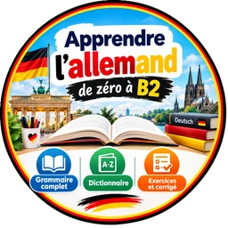

<meta charset="utf-8">
<meta name="viewport" content="width=device-width,initial-scale=1,viewport-fit=cover">
<link rel="manifest" href="manifest.json">
<meta name="theme-color" content="#0a1222">
<link rel="icon" href="icon-192.png" type="image/png">
<link rel="apple-touch-icon" href="icon-192.png">
<title>Allemand 0 → B2</title>
<style>
/* Layout: mobile-first course reader. Fixed bottom tab bar (Cours, Cartes, Quiz, Recherche, Progrès); content in one column, max 720px. Palette: cool paper, petrol green accent, marker-yellow highlight for German. */
*{box-sizing:border-box}
html,body{margin:0}
html{font-size:var(--root,100%)}
body{color:var(--ink);font-family:var(--f-body);font-size:1.0625rem;line-height:var(--lh,1.5);
  padding-left:max(16px,env(safe-area-inset-left,0px));padding-right:max(16px,env(safe-area-inset-right,0px));padding-block:0 84px;-webkit-text-size-adjust:100%}
body::before{content:"";position:fixed;inset:0 0 auto;height:env(safe-area-inset-top,0px);z-index:30}
#app{max-width:720px;margin:0 auto;min-width:0}
h1,h2,h3{font-family:var(--f-display);line-height:1.15;margin:0;text-wrap:balance}
button{font:inherit;color:inherit;cursor:pointer}
button:focus-visible,a:focus-visible,input:focus-visible,select:focus-visible{outline:3px solid var(--accent);outline-offset:2px}
.top{position:sticky;top:env(safe-area-inset-top,0px);z-index:20;background:var(--bg);display:flex;align-items:center;gap:10px;padding:10px 0;min-height:56px}
.top h1{font-size:1.15rem;flex:1;min-width:0;overflow:hidden;text-overflow:ellipsis;white-space:nowrap}
.iconbtn{border:1px solid var(--line);background:var(--surface);border-radius:12px;min-width:44px;height:44px;display:inline-flex;align-items:center;justify-content:center;font-size:1.1rem;padding:0 12px}
.iconbtn.on{background:var(--accent);color:var(--accent-ink);border-color:var(--accent)}
.hero{padding:18px 0 8px}
.hero .kicker{font-size:.8rem;letter-spacing:.08em;text-transform:uppercase;color:var(--muted);font-weight:600}
.hero h1{font-size:2.1rem;margin-top:4px}
.hero h1 span{background:linear-gradient(transparent 60%,var(--mark) 60%)}
.cont{display:flex;gap:12px;align-items:center;width:100%;text-align:left;margin:14px 0;padding:14px 16px;border:0;border-radius:16px;background:var(--accent);color:var(--accent-ink)}
.cont small{display:block;opacity:.85;font-size:.8rem;text-transform:uppercase;letter-spacing:.06em}
.cont b{font-family:var(--f-display);font-size:1.1rem;font-weight:600}
.cont .arrow{margin-left:auto;font-size:1.4rem}
.seg{display:flex;background:var(--surface2);border-radius:14px;padding:4px;gap:4px;margin:10px 0 4px}.seg button{flex:1;border:0;background:none;border-radius:11px;min-height:42px;font-weight:600;color:var(--muted)}.seg button[aria-pressed=true],.seg button[aria-selected=true]{background:var(--surface);color:var(--ink);box-shadow:0 1px 4px rgba(0,0,0,.15)}
.stats{display:grid;grid-template-columns:repeat(3,1fr);gap:8px;margin:6px 0 18px}
.stat{background:var(--surface);border:1px solid var(--line);border-radius:14px;padding:10px 12px}
.stat b{display:block;font-family:var(--f-display);font-size:1.5rem;font-variant-numeric:tabular-nums}
.stat span{font-size:.8rem;color:var(--muted)}
.list{display:flex;flex-direction:column;gap:8px}
.row{display:flex;gap:12px;align-items:center;width:100%;text-align:left;padding:12px 14px;border:1px solid var(--line);background:var(--surface);border-radius:14px;min-width:0}
.row .n{flex:none;min-width:34px;padding:0 6px;box-sizing:border-box;position:relative;height:34px;border-radius:10px;background:var(--surface2);display:grid;place-items:center;font-family:var(--f-display);font-weight:700;font-size:.9rem;font-variant-numeric:tabular-nums}
.row .t{flex:1;min-width:0}
.row .t b{display:block;font-weight:600;line-height:1.25}
.row .t small{color:var(--muted);font-size:.82rem}
.row.done .n{background:var(--good);color:#fff}
.row .n .ok{position:absolute;right:-4px;top:-5px;background:var(--good);color:#fff;border-radius:50%;width:15px;height:15px;font-size:.6rem;display:grid;place-items:center}
.goalc .bar{margin:8px 0 4px}.lnum{color:var(--accent,#c0392b)}
.bar{height:5px;background:var(--surface2);border-radius:3px;margin-top:6px;overflow:hidden}
.bar i{display:block;height:100%;background:var(--accent);border-radius:3px}
.chev{color:var(--muted);flex:none}
.setc{background:var(--surface);border:1px solid var(--line);border-radius:14px;padding:12px 14px;margin:8px 0;display:flex;flex-direction:column;gap:8px}.crow{display:flex;gap:8px;align-items:center;justify-content:space-between;flex-wrap:wrap}.crow a{color:var(--accent);font-weight:600;overflow-wrap:anywhere;min-width:0}
.crow{display:flex;gap:10px;align-items:center;justify-content:space-between}.crow span{min-width:0;overflow-wrap:anywhere;user-select:all}a.btn{text-decoration:none;color:var(--ink);display:inline-flex;align-items:center}
.setc small{color:var(--muted)}.setc .seg{margin:0}.setc .seg button{font-size:.88rem;padding:4px 6px;line-height:1.15}.setc input[type=range]{width:100%;accent-color:var(--accent);min-height:32px}.fsrow{display:flex;justify-content:space-between;color:var(--muted)}.demo{margin:0;padding:10px;border-radius:10px;background:var(--surface2)}textarea{font:inherit;color:var(--ink);background:var(--surface);border:1px solid var(--line);border-radius:12px;padding:10px;width:100%;min-width:0;resize:vertical}
.sec{font-size:.8rem;letter-spacing:.08em;text-transform:uppercase;color:var(--muted);font-weight:600;margin:22px 0 8px}
/* lesson */
.lesson{padding-bottom:12px}
.lesson h1.ltitle{font-size:1.75rem;margin:6px 0 4px}
.lesson .crumb{color:var(--muted);font-size:.85rem}
.lesson h2{font-size:1.35rem;margin:28px 0 8px;padding-top:6px;border-top:2px solid var(--accent)}
.lesson h3{font-size:1.1rem;margin:20px 0 6px;color:var(--accent)}
.lesson p{margin:8px 0}
.lesson ul{padding:0;margin:8px 0;list-style:none;display:flex;flex-direction:column;gap:6px}
.lesson li{display:flex;gap:10px}
.lesson li::before{content:"•";color:var(--accent);font-weight:700}
.lesson li.num::before{content:attr(data-n);min-width:1.4em;font-family:var(--f-display);font-weight:700}
.kv{margin:10px 0;padding:10px 12px;border-radius:12px;background:var(--accent-soft)}
.kv b{font-size:.78rem;letter-spacing:.06em;text-transform:uppercase;color:var(--accent);display:block;margin-bottom:2px}
.ex{display:flex;gap:10px;align-items:flex-start;margin:8px 0;padding:8px 10px 8px 12px;border-left:4px solid var(--accent);background:var(--surface);border-radius:0 12px 12px 0;width:100%;text-align:left;border-top:0;border-right:0;border-bottom:0}
.ex .tx{flex:1;min-width:0}
.de{font-weight:700;color:var(--de)}.frc{color:var(--frc)}.de2{color:var(--de);font-weight:600}
.ex .fr{display:block;color:var(--frc);font-size:.92rem}
.hidefr .fr{display:none}.hidefr.show .fr{display:block}.hidefr .tx::after{content:"Touchez pour voir la traduction";display:block;font-size:.78rem;color:var(--muted)}.hidefr.show .tx::after{display:none}
.spk{flex:none;width:36px;height:36px;border-radius:50%;border:0;background:var(--mark);color:var(--mark-ink);display:grid;place-items:center;font-size:1rem}
.tbl{overflow-x:auto;margin:12px 0;border:1px solid var(--line);border-radius:12px;background:var(--surface);-webkit-overflow-scrolling:touch}
table{border-collapse:collapse;width:100%;font-size:.95rem}
th,td{padding:8px 10px;text-align:left;border-bottom:1px solid var(--line);vertical-align:top;min-width:78px}
th{background:var(--surface2);font-size:.82rem;text-transform:uppercase;letter-spacing:.04em;white-space:nowrap}
tr:last-child td{border-bottom:0}
td.de{cursor:pointer}td.de::after{content:"";}.legend{display:flex;gap:14px;font-size:.85rem;margin:6px 0 0}.legend span::before{content:"";display:inline-block;width:10px;height:10px;border-radius:50%;margin-right:6px;background:currentColor}
.fcard .big.de{font-weight:700}
.actions{display:flex;gap:8px;flex-wrap:wrap;margin:14px 0}
.btn{border:1px solid var(--line);background:var(--surface);border-radius:12px;padding:10px 14px;min-height:44px;font-weight:600}
.btn.pri{background:var(--accent);border-color:var(--accent);color:var(--accent-ink)}
.btn.good{background:var(--good);border-color:var(--good);color:#fff}
.btn.bad{background:var(--bad);border-color:var(--bad);color:#fff}
.btn.wide{flex:1}
.pager{display:flex;gap:8px;margin:20px 0}
.pager .btn{flex:1;text-align:left;font-weight:600;line-height:1.2;min-width:0}
.pager small{display:block;color:var(--muted);font-weight:400}
/* tabs */
nav.tabs{position:fixed;left:0;right:0;bottom:0;z-index:25;background:var(--surface);border-top:1px solid var(--line);display:flex;padding:6px max(8px,env(safe-area-inset-right,0px)) calc(6px + env(safe-area-inset-bottom,0px)) max(8px,env(safe-area-inset-left,0px))}
nav.tabs button{flex:1;border:0;background:none;padding:6px 2px;display:flex;flex-direction:column;align-items:center;gap:2px;font-size:.72rem;color:var(--muted);border-radius:10px;min-height:48px}
nav.tabs button svg{width:22px;height:22px;stroke:currentColor;fill:none;stroke-width:1.8;stroke-linecap:round;stroke-linejoin:round}
nav.tabs button[aria-current="true"]{color:var(--accent);font-weight:700}
/* cards */
.scope{display:flex;gap:8px;margin:6px 0 14px;flex-wrap:wrap}
select,input[type=search]{font:inherit;color:var(--ink);background:var(--surface);border:1px solid var(--line);border-radius:12px;padding:10px 12px;min-height:44px;min-width:0;max-width:100%}
select{flex:1}
.fc{perspective:900px;margin:10px 0}
.fcard{min-height:240px;width:100%;border-radius:20px;border:1px solid var(--line);background:var(--surface);padding:24px 18px;display:flex;flex-direction:column;align-items:center;justify-content:center;gap:12px;text-align:center;box-shadow:0 6px 24px -14px rgba(0,0,0,.35)}
.fcard .side{font-size:.75rem;letter-spacing:.08em;text-transform:uppercase;color:var(--muted)}
.fcard .big{font-family:var(--f-display);font-size:1.7rem;line-height:1.25;overflow-wrap:anywhere}
.fcard.back{background:var(--accent-soft)}
.prog{font-size:.85rem;color:var(--muted);display:flex;justify-content:space-between;margin-top:6px}
/* quiz */
.q{margin:8px 0}
.q .qt{font-size:.8rem;letter-spacing:.06em;text-transform:uppercase;color:var(--muted);font-weight:600}
.q .qq{font-family:var(--f-display);font-size:1.4rem;line-height:1.25;margin:6px 0 4px;overflow-wrap:anywhere}
.q .hint{color:var(--muted);font-style:italic;margin-bottom:6px}
.opts{display:flex;flex-direction:column;gap:8px;margin:12px 0}
.opt{text-align:left;border:2px solid var(--line);background:var(--surface);border-radius:14px;padding:12px 14px;min-height:48px;line-height:1.3}
.opt.ok{border-color:var(--good);background:var(--good-soft)}
.opt.ko{border-color:var(--bad);background:var(--bad-soft)}
.opt[disabled]{cursor:default}
.score{text-align:center;padding:22px 10px}
.score b{display:block;font-family:var(--f-display);font-size:3rem;font-variant-numeric:tabular-nums}
.empty{padding:28px 8px;text-align:center;color:var(--muted)}
.fnd{background:var(--mark);color:var(--mark-ink);border-radius:3px;padding:0 2px;box-shadow:0 0 0 2px var(--mark)}.fnd.cur{outline:3px solid var(--accent);outline-offset:1px;animation:fpulse 1s ease 2}@keyframes fpulse{50%{box-shadow:0 0 0 7px rgba(255,200,0,.5)}}
.hl{background:var(--mark);color:var(--mark-ink);border-radius:3px;padding:0 1px}
.snip{color:var(--muted);font-size:.9rem;margin-top:2px;overflow-wrap:anywhere}
.toast{position:fixed;left:50%;transform:translateX(-50%);bottom:calc(84px + env(safe-area-inset-bottom,0px));background:var(--ink);color:var(--bg);padding:10px 16px;border-radius:12px;z-index:40;max-width:90vw;font-size:.9rem}
.spin{padding:40px;text-align:center;color:var(--muted)}
.pbar{display:flex;flex-direction:column;gap:12px}
.pbar .l{display:flex;justify-content:space-between;gap:8px;font-size:.92rem}
.pbar .l span:last-child{color:var(--muted);font-variant-numeric:tabular-nums;flex:none}
@media (prefers-reduced-motion:no-preference){.fcard{transition:transform .2s}.fcard:active{transform:scale(.985)}}
/* ===== Palette "verre" : bleu nuit, turquoise, violet (modèle de la capture) ===== */
:root{
  --bg:#0a1222; --solid:#14233f; --surface:rgba(255,255,255,.07); --surface2:rgba(255,255,255,.11); --ink:#EAF0FA; --muted:#9FB1CC; --line:rgba(255,255,255,.14);
  --de:#8CC0FF; --frc:#6EE0B2; --accent:#4A90E2; --accent-ink:#FFFFFF; --accent-soft:rgba(74,144,226,.20); --mark:#F2B705; --mark-ink:#1B1400;
  --good:#22A27A; --good-soft:rgba(34,162,122,.22); --bad:#E5645A; --bad-soft:rgba(229,100,90,.22);
  --gold:#F2B705; --glass-blur:blur(14px);
  --bgimg:radial-gradient(120% 55% at 0% 0%,#1b3d78 0%,rgba(23,50,97,0) 62%),radial-gradient(90% 45% at 100% 42%,#0d4656 0%,rgba(12,61,77,0) 70%),radial-gradient(120% 55% at 0% 100%,#2d2860 0%,rgba(39,35,81,0) 66%),linear-gradient(180deg,#0a1222,#0a1222);
  --f-display:Roboto,'Segoe UI',system-ui,-apple-system,sans-serif; --f-body:Roboto,'Segoe UI',system-ui,-apple-system,sans-serif;
  color-scheme:dark;
}
:root[data-theme="light"]{
  --bg:#EAF1FB; --solid:#FFFFFF; --surface:rgba(255,255,255,.72); --surface2:rgba(20,50,100,.08); --ink:#12213A; --muted:#566985; --line:rgba(20,50,100,.15);
  --de:#1D5FC4; --frc:#0F7F57; --accent:#2F7BD6; --accent-ink:#FFFFFF; --accent-soft:rgba(47,123,214,.14); --mark:#FFD866; --mark-ink:#3B2D00;
  --good:#1D7A45; --good-soft:rgba(29,122,69,.16); --bad:#B13A30; --bad-soft:rgba(177,58,48,.14); --gold:#C58F00;
  --bgimg:radial-gradient(120% 55% at 0% 0%,#cfe0fb 0%,rgba(207,224,251,0) 62%),radial-gradient(90% 45% at 100% 42%,#cdeef0 0%,rgba(205,238,240,0) 70%),radial-gradient(120% 55% at 0% 100%,#e0dcfa 0%,rgba(224,220,250,0) 66%),linear-gradient(180deg,#eef3fb,#eef3fb);
  color-scheme:light;
}
html{background:var(--bg)}
body{background:transparent;padding-block:0 104px}
body::after{content:"";position:fixed;inset:0;z-index:-1;background:var(--bgimg)}
body::before{background:transparent;backdrop-filter:var(--glass-blur);-webkit-backdrop-filter:var(--glass-blur)}
option{background:var(--solid);color:var(--ink)}
.top{background:rgba(10,18,34,.55);backdrop-filter:var(--glass-blur);-webkit-backdrop-filter:var(--glass-blur);margin:0 -16px;padding:10px 16px;border-bottom:1px solid var(--line)}
:root[data-theme="light"] .top{background:rgba(234,241,251,.7)}
.iconbtn,.btn,.row,.stat,.setc,.tbl,.fcard,.opt,select,input[type=search],textarea,.ex{backdrop-filter:var(--glass-blur);-webkit-backdrop-filter:var(--glass-blur)}
.row,.stat,.setc,.tbl{border-radius:20px;box-shadow:0 8px 24px -16px rgba(0,0,0,.5)}
.row{padding:14px 16px}
.row .n{border-radius:12px;background:var(--surface2)}
.hero h1 span{background:linear-gradient(transparent 62%,rgba(242,183,5,.45) 62%)}
.cont{background:linear-gradient(135deg,#4a90e2,#2f6fd0);box-shadow:0 10px 26px -12px rgba(74,144,226,.8);border-radius:22px}
.btn.pri{background:linear-gradient(135deg,#4a90e2,#2f6fd0);border-color:transparent}
.seg{background:var(--surface);border:1px solid var(--line);border-radius:18px}
.seg button[aria-pressed=true],.seg button[aria-selected=true]{background:var(--accent-soft);color:var(--ink);box-shadow:inset 0 0 0 1px var(--accent)}
.fcard{border-radius:26px}.fcard.back{background:var(--accent-soft)}
.opt{border-radius:18px}
.lesson h2{border-top:2px solid var(--accent)}
.ex{border-radius:0 16px 16px 0}
th{background:var(--surface2)}
.tbl{background:var(--surface)}
.spk{background:linear-gradient(135deg,#f5c518,#e2aa02);color:#241a00}
.legend,.crumb{color:var(--muted)}
/* barre du bas : pilule flottante en verre */
nav.tabs{left:12px;right:12px;bottom:calc(10px + env(safe-area-inset-bottom,0px));border:1px solid var(--line);border-radius:30px;padding:6px;background:rgba(18,30,56,.72);backdrop-filter:blur(18px);-webkit-backdrop-filter:blur(18px);box-shadow:0 14px 34px -14px rgba(0,0,0,.8);max-width:720px;margin:0 auto}
:root[data-theme="light"] nav.tabs{background:rgba(255,255,255,.8)}
nav.tabs button{border-radius:22px;font-size:.68rem}
nav.tabs button[aria-current="true"]{background:rgba(255,255,255,.14);color:var(--accent)}
:root[data-theme="light"] nav.tabs button[aria-current="true"]{background:rgba(47,123,214,.14)}
.toast{bottom:calc(96px + env(safe-area-inset-bottom,0px));background:#EAF0FA;color:#0a1222}
.fcard .big{white-space:pre-line}
/* en-tête en pilule (accueil) */
.pill{display:flex;align-items:center;gap:10px;margin:calc(12px + env(safe-area-inset-top,0px)) 0 4px;padding:8px 10px;border:1px solid var(--line);border-radius:28px;background:var(--surface);backdrop-filter:var(--glass-blur);-webkit-backdrop-filter:var(--glass-blur)}
.pill .pt{flex:1;text-align:center;font-family:var(--f-display);font-weight:700;font-size:1.1rem}
.pill img{width:40px;height:40px;border-radius:50%;object-fit:cover;border:2px solid rgba(255,255,255,.35)}
.pill .iconbtn{border:0;background:transparent;min-width:40px;height:40px;padding:0 8px;font-size:1.3rem}
.cover{margin:10px 0 4px;border-radius:22px;overflow:hidden;border:1px solid var(--line);box-shadow:0 14px 34px -16px rgba(0,0,0,.7);aspect-ratio:3/2;background:#0a1222}.cover img{display:block;width:100%;height:100%;object-fit:cover}
.hero2{padding:14px 2px 4px}.hero2 h1{font-size:2rem}.hero2 h1 span{background:linear-gradient(transparent 62%,rgba(242,183,5,.45) 62%)}.hero2 p{margin:4px 0 0;color:var(--muted)}
/* quatre rubriques */
.rubs{display:grid;grid-template-columns:repeat(2,1fr);gap:10px;margin:14px 0}
.rub{display:flex;flex-direction:column;align-items:center;gap:8px;padding:14px 6px 12px;border:1px solid var(--line);border-radius:22px;background:var(--surface);backdrop-filter:var(--glass-blur);-webkit-backdrop-filter:var(--glass-blur);text-align:center;min-width:0}
.rub b{font-family:var(--f-display);font-size:1rem}.rub small{color:var(--muted);font-size:.74rem;line-height:1.2}
.rub[aria-selected=true]{border-color:var(--accent);background:var(--accent-soft);box-shadow:0 0 0 1px var(--accent),0 12px 28px -14px rgba(74,144,226,.7)}
.ic{width:46px;height:46px;border-radius:14px;display:grid;place-items:center;color:#fff;flex:none}
.ic svg{width:24px;height:24px;stroke:currentColor;fill:none;stroke-width:1.9;stroke-linecap:round;stroke-linejoin:round}
.ic.b{background:linear-gradient(145deg,#4a90e2,#2f6fd0);box-shadow:0 8px 18px -8px rgba(74,144,226,.9)}
.ic.g{background:linear-gradient(145deg,#1fa17a,#12775a);box-shadow:0 8px 18px -8px rgba(31,161,122,.9)}
.ic.y{background:linear-gradient(145deg,#f5c518,#dca100);color:#2b2000;box-shadow:0 8px 18px -8px rgba(245,197,24,.9)}
.ic.p{background:linear-gradient(145deg,#a65be0,#7a35b8);box-shadow:0 8px 18px -8px rgba(166,91,224,.9)}
.row .ic{width:42px;height:42px;border-radius:13px}
/* ===== Verbes ===== */
.vsearch{display:flex;gap:8px;margin:10px 0 4px}.vsearch input{flex:1}
.chips{display:flex;gap:6px;overflow-x:auto;padding:4px 0 8px;scrollbar-width:none;-webkit-overflow-scrolling:touch}.chips::-webkit-scrollbar{display:none}
.chip{flex:none;border:1px solid var(--line);background:var(--surface);color:var(--ink);border-radius:999px;min-width:38px;height:36px;padding:0 12px;font-weight:600;font-size:.9rem}
.chip[aria-pressed=true]{background:var(--accent);border-color:var(--accent);color:#fff}
.chip.de{color:var(--de)}.chip.de[aria-pressed=true]{color:#fff}
.vrow b{font-size:1.1rem}.vrow .frc{display:block}.vrow small{display:block;color:var(--muted);margin-top:2px;overflow-wrap:anywhere}
.vday{display:flex;gap:12px;align-items:center;width:100%;text-align:left;border:1px solid rgba(245,197,24,.45);background:linear-gradient(135deg,rgba(245,197,24,.16),rgba(74,144,226,.12));border-radius:22px;padding:14px 16px;margin:12px 0}
.vday small{display:block;color:var(--gold);font-weight:700;text-transform:uppercase;letter-spacing:.07em;font-size:.72rem}
.vday b{font-size:1.35rem;display:block}.vday .frc{display:block}
.vhead{border:1px solid var(--line);background:var(--surface);backdrop-filter:var(--glass-blur);-webkit-backdrop-filter:var(--glass-blur);border-radius:24px;padding:18px 16px;margin:12px 0}
.vhead .inf{font-family:var(--f-display);font-size:2.1rem;font-weight:700;color:var(--de);overflow-wrap:anywhere;line-height:1.1}
.vhead .fr2{font-size:1.1rem;color:var(--frc);margin-top:4px}
.badges{display:flex;flex-wrap:wrap;gap:6px;margin-top:12px}
.bdg{font-size:.78rem;font-weight:700;border-radius:999px;padding:4px 10px;background:var(--surface2);border:1px solid var(--line)}
.bdg.hb{background:rgba(74,144,226,.25);border-color:rgba(74,144,226,.6)}.bdg.sn{background:rgba(31,161,122,.25);border-color:rgba(31,161,122,.6)}
.keyf{display:grid;grid-template-columns:repeat(3,1fr);gap:8px;margin-top:14px}
.keyf div{background:var(--surface2);border-radius:14px;padding:8px 10px;min-width:0}
.keyf small{display:block;color:var(--muted);font-size:.7rem;text-transform:uppercase;letter-spacing:.05em}
.keyf b{display:block;font-size:.98rem;color:var(--de);overflow-wrap:anywhere;font-weight:700}
.tn{border:1px solid var(--line);background:var(--surface);backdrop-filter:var(--glass-blur);-webkit-backdrop-filter:var(--glass-blur);border-radius:20px;margin:10px 0;overflow:hidden}
.tn summary{list-style:none;display:flex;align-items:center;gap:10px;padding:12px 14px;cursor:pointer;min-height:52px}
.tn summary::-webkit-details-marker{display:none}
.tn summary::after{content:"\203A";margin-left:auto;font-size:1.5rem;color:var(--muted);transform:rotate(90deg);transition:transform .15s}
.tn[open] summary::after{transform:rotate(-90deg)}
.tn .tname{font-family:var(--f-display);font-weight:700;font-size:1.05rem}.tn .tfr{color:var(--muted);font-size:.85rem}
.tn summary .spk{width:32px;height:32px;font-size:.9rem;margin-left:auto}
.tn summary .spk+*{margin-left:0}
.tn .tuse{padding:0 14px 6px;color:var(--muted);font-size:.85rem}
.frow{display:flex;align-items:baseline;gap:12px;padding:9px 14px;border-top:1px solid var(--line);cursor:pointer}
.frow .pr{flex:none;width:84px;color:var(--muted);font-size:.92rem}
.frow .fm{flex:1;min-width:0;overflow-wrap:anywhere;font-size:1.08rem}
.frow .fm .v{color:var(--de);font-weight:700}.frow .fm .x{color:var(--ink);opacity:.75}.frow .fm .x2{color:var(--frc);font-weight:600}
.frow .sp{flex:none;opacity:.5;font-size:.85rem}
.vtbl{overflow-x:auto;border:1px solid var(--line);border-radius:20px;background:var(--surface);margin:10px 0;-webkit-overflow-scrolling:touch}
.vtbl table{min-width:760px}.vtbl td,.vtbl th{min-width:112px}
.vtbl td:first-child,.vtbl th:first-child{position:sticky;left:0;z-index:1;background:var(--solid);min-width:96px;font-weight:700}
.vtbl td .v{color:var(--de);font-weight:700}.vtbl td .x{opacity:.8}
.note{border-left:4px solid var(--gold);background:rgba(245,197,24,.10);border-radius:0 14px 14px 0;padding:10px 12px;margin:10px 0;font-size:.95rem}
/* guide */
.gintro{border:1px solid rgba(74,144,226,.5);background:linear-gradient(135deg,rgba(74,144,226,.22),rgba(31,161,122,.12));border-radius:22px;padding:16px;margin:12px 0}
.gintro h2{font-size:1.2rem;margin-bottom:8px}
.gintro ol{margin:8px 0 0;padding-left:1.2em;display:flex;flex-direction:column;gap:8px}
.gsec{border:1px solid var(--line);background:var(--surface);backdrop-filter:var(--glass-blur);-webkit-backdrop-filter:var(--glass-blur);border-radius:20px;margin:10px 0;overflow:hidden}
.gsec summary{list-style:none;display:flex;align-items:center;gap:12px;padding:14px;cursor:pointer;font-family:var(--f-display);font-weight:700;font-size:1.02rem;min-height:56px}
.gsec summary::-webkit-details-marker{display:none}
.gsec summary::after{content:"\203A";margin-left:auto;font-size:1.5rem;color:var(--muted);transform:rotate(90deg);transition:transform .15s}
.gsec[open] summary::after{transform:rotate(-90deg)}
.gsec .gn{flex:none;width:32px;height:32px;border-radius:10px;background:linear-gradient(145deg,#4a90e2,#2f6fd0);color:#fff;display:grid;place-items:center;font-size:.9rem}
.gsec .gb{padding:2px 14px 14px}.gsec .gb p{margin:8px 0}.gsec .gb ul{padding-left:1.1em;margin:8px 0;display:flex;flex-direction:column;gap:6px}
.gsec .gb .tbl{margin:10px 0}
.gsec h4{margin:14px 0 4px;font-size:.95rem;color:var(--gold)}
.gsec .ex{margin:6px 0}
.vlinks{display:flex;flex-wrap:wrap;gap:6px;margin:10px 0 2px}
.more{width:100%;margin-top:10px}
.tn summary>span:first-child{flex:1;min-width:0}
.tn summary .spk{margin-left:0;flex:none}
.tn summary::after{margin-left:0}
.vtbl td .x2{color:var(--frc);font-weight:600}
.vtbl td:first-child,.vtbl th:first-child{font-size:.82rem;min-width:84px}
.gsec .gb td,.gsec .gb th{min-width:104px}


/* ===== nouveautés ===== */
.g-der{color:#5aa9ff;font-weight:700}.g-die{color:#ff8f8f;font-weight:700}.g-das{color:#5fd68c;font-weight:700}
:root[data-theme="light"] .g-der{color:#1D5FC4}:root[data-theme="light"] .g-die{color:#C0392B}:root[data-theme="light"] .g-das{color:#1E8A4C}
.star{border:0;background:none;font-size:1.3rem;line-height:1;padding:4px 8px;color:var(--muted);flex:none}.star.on{color:var(--gold)}
td.de .star{float:right;padding:0 2px;font-size:1.1rem}
.g4{display:grid;grid-template-columns:repeat(4,1fr);gap:6px;margin:14px 0}
.g4 button{border:0;border-radius:14px;padding:10px 2px;min-height:60px;font-weight:700;color:#fff;line-height:1.15;font-size:.9rem}
.g4 small{display:block;font-weight:400;opacity:.92;font-size:.72rem;margin-top:2px}
.g4 .g0{background:var(--bad)}.g4 .g1{background:#b9772a}.g4 .g2{background:var(--accent)}.g4 .g3{background:var(--good)}
.exmp{display:block;margin-top:12px;padding:10px 12px;border-radius:12px;background:var(--surface2);font-size:.95rem;line-height:1.35;text-align:left;width:100%}
.exmp b{display:block;font-size:.72rem;letter-spacing:.06em;text-transform:uppercase;color:var(--muted)}.exmp i{color:var(--frc);font-style:normal}
input[type=text].ans,textarea.ans,input[type=date],input[type=time]{font:inherit;color:var(--ink);background:var(--surface);border:1px solid var(--line);border-radius:12px;padding:12px;min-height:46px;width:100%;max-width:100%;resize:vertical}
input[type=time]{width:auto}
.chars{display:flex;gap:6px;margin:8px 0}.chars button{flex:1;min-height:42px;border:1px solid var(--line);background:var(--surface2);border-radius:10px;font-size:1.1rem;font-weight:600}
.fb{margin:12px 0;padding:12px 14px;border-radius:14px;border:2px solid var(--line);line-height:1.5}.fb.ok{border-color:var(--good);background:var(--good-soft)}.fb.ko{border-color:var(--bad);background:var(--bad-soft)}
.fb b{display:block}.fb .dl{margin-top:4px;overflow-wrap:anywhere}
.tk{padding:1px 4px;border-radius:5px;display:inline-block;margin:1px 0}.tk.ok{background:var(--good-soft)}.tk.cap{background:rgba(242,183,5,.3)}.tk.no{background:var(--bad-soft);text-decoration:underline wavy}.tk.wr{background:var(--bad-soft);text-decoration:line-through}
.tg{display:inline-block;font-size:.72rem;padding:2px 8px;border-radius:999px;background:var(--surface2);color:var(--muted);font-weight:600;vertical-align:middle}
.tg.okt{background:var(--good-soft);color:var(--good)}.tg.lat{background:var(--bad-soft);color:var(--bad)}.tg.pp{background:var(--accent-soft);color:var(--accent)}
.vtask{display:flex;gap:6px;flex-wrap:wrap;margin:6px 0}
.timer{font-variant-numeric:tabular-nums;font-weight:700;padding:8px 12px;border-radius:10px;background:var(--surface2)}.timer.low{background:var(--bad);color:#fff}
.opt.sel{border-color:var(--accent);background:var(--accent-soft)}
.task{cursor:default}.task .btn{min-height:38px;padding:6px 12px;flex:none}
.ck{flex:none;width:38px;height:38px;border-radius:50%;border:2px solid var(--line);background:none;font-size:1.1rem;color:transparent}.ck.on{background:var(--good);border-color:var(--good);color:#fff}
.pday{margin:0 0 12px}.pday b{display:block;margin-bottom:4px;font-size:.92rem}.pn{color:var(--muted);font-size:.9rem}
.pl{display:block;width:100%;text-align:left;border:0;background:var(--surface2);border-radius:10px;padding:8px 10px;margin:4px 0;font-size:.9rem;line-height:1.25}.pl.done{opacity:.6}
</style>

<div id="app"></div>
<nav class="tabs" id="tabs" aria-label="Navigation principale"></nav>
<div id="toastbox"></div>

<script>
(function(){
'use strict';
/* ---------- storage ---------- */
var KEY='de0b2:v1';
var S={done:{},cards:{},quiz:{},last:null,days:{},dir:'de',mode:'c',set:{},vfav:{},vseen:{},vrecent:[],vview:'t',hist:[],hard:{},act:{},err:{},sim:[],plan:null,vtr:{},exams:[],level:null,pstat:{}};
var DEF={theme:'dark',fs:100,lh:1.5,rate:.9,hide:false,newc:20,qn:10,genre:true,resume:true,remind:false,rtime:'19:00',goal:20};
try{var raw=localStorage.getItem(KEY); if(raw){var o=JSON.parse(raw); for(var k in o) S[k]=o[k];}}catch(e){}
var BKEYS=['done','cards','quiz','days','last','set','vfav','vseen','vrecent','vview','hist','hard','plan','vtr','exams','level','pstat','act','err','sim'];
function save(){try{localStorage.setItem(KEY,JSON.stringify(S));}catch(e){}}
function G(k){var v=S.set&&S.set[k];return v===undefined?DEF[k]:v;}
function applySettings(){
  var r=document.documentElement,t=G('theme');
  if(t==='auto'){try{t=window.matchMedia('(prefers-color-scheme: light)').matches?'light':'dark';}catch(e){t='dark';}}
  r.setAttribute('data-theme',t);
  r.style.setProperty('--root',G('fs')+'%');r.style.setProperty('--lh',G('lh'));
}
function p2(n){return n<10?'0'+n:''+n;}
function ymd(d){return d.getFullYear()+'-'+p2(d.getMonth()+1)+'-'+p2(d.getDate());}
function today(){return ymd(new Date());}
function touchDay(){S.days[today()]=1;save();}
function streak(){var n=0,d=new Date();for(;;){var k=ymd(d);if(S.days[k]){n++;d.setDate(d.getDate()-1);}else if(n===0&&k===today()){d.setDate(d.getDate()-1);}else break;}return n;}

/* ---------- data ---------- */
var META=[],CATS={},LES={},LESMETA={},ORDER=[],ORD={c:[],d:[],t:[]};
function esc(s){return String(s==null?'':s).replace(/[&<>"']/g,function(c){return{'&':'&amp;','<':'&lt;','>':'&gt;','"':'&quot;',"'":'&#39;'}[c];});}
function fold(s){return String(s).normalize('NFD').replace(/[\u0300-\u036f]/g,'').toLowerCase();}
function getJSON(u){return fetch(u).then(function(r){if(!r.ok)throw new Error(u+' '+r.status);return r.json();});}
function loadMeta(){
  return getJSON('data/meta.json').then(function(m){
    META=m;
    m.forEach(function(c){c.lessons.forEach(function(l){l.cat=c.id;l.catname=c.name;l.k=c.k;LESMETA[l.id]=l;ORDER.push(l.id);ORD[c.k].push(l.id);});});
  });
}
var loading={};
function loadCat(id){
  if(CATS[id])return Promise.resolve();
  if(loading[id])return loading[id];
  loading[id]=getJSON('data/c'+(id<10?'0':'')+id+'.json').then(function(d){CATS[id]=1;for(var k in d){LES[k]=d[k];d[k].c.forEach(function(c){c.l=k;});}});
  return loading[id];
}
function loadAll(){return Promise.all(META.map(function(c){return loadCat(c.id);}));}

/* ---------- speech ---------- */
var voice=null;
function pickVoice(){try{var vs=speechSynthesis.getVoices();voice=vs.filter(function(v){return /^de/i.test(v.lang);})[0]||null;}catch(e){}}
try{pickVoice();speechSynthesis.onvoiceschanged=pickVoice;}catch(e){}
function speak(t){
  try{
    if(!('speechSynthesis' in window))throw 0;
    pickVoice();
    speechSynthesis.cancel();
    var u=new SpeechSynthesisUtterance(String(t).replace(/\s*[\(\[].*?[\)\]]/g,'').replace(/\//g,', '));
    u.lang='de-DE';u.rate=G('rate');if(voice)u.voice=voice;
    speechSynthesis.speak(u);
    if(!voice)toast('Aucune voix allemande détectée : installez-en une dans les réglages du téléphone.');
  }catch(e){toast('La lecture audio n’est pas disponible sur cet appareil.');}
}
var tt;function toast(m){var b=document.getElementById('toastbox');b.innerHTML='<div class="toast" role="status">'+esc(m)+'</div>';clearTimeout(tt);tt=setTimeout(function(){b.innerHTML='';},3200);}

/* ---------- state / routing : pile d’écrans, touche retour, reprise ---------- */
var V={name:'home'};
var HS=[],hi=-1,T='home',TS={},RKEY='de0b2:resume',PENDY=0,guardOn=false,ignorePop=false,stickT=null;
function snapV(){try{return JSON.parse(JSON.stringify(V));}catch(e){return {name:'home'};}}
function saveCur(){if(hi>=0)HS[hi]={v:snapV(),sy:Math.round(window.scrollY||0)};}
function stickScroll(y){
  clearTimeout(stickT);var n=0,stop=false;
  function cancel(){stop=true;}
  ['touchstart','wheel','keydown','mousedown'].forEach(function(ev){window.addEventListener(ev,cancel,{passive:true,once:true});});
  (function t(){if(stop)return;window.scrollTo(0,y);if(Math.abs((window.scrollY||0)-y)>3&&n++<35)stickT=setTimeout(t,70);})();
}
function syncGuard(){
  var need=hi>0||T!=='home';
  try{
    if(need&&!guardOn){history.pushState({g:1},'');guardOn=true;}
    else if(!need&&guardOn){ignorePop=true;guardOn=false;history.back();}
  }catch(e){}
}
function go(v,opt){
  opt=opt||{};saveCur();
  if(opt.replace&&hi>=0)HS[hi]={v:v,sy:0};
  else{HS=HS.slice(0,hi+1);HS.push({v:v,sy:0});hi++;if(HS.length>60){HS.shift();hi--;}}
  V=v;render();window.scrollTo(0,0);syncGuard();persist();
}
function back(){
  if(hi>0){saveCur();hi--;V=HS[hi].v;PENDY=HS[hi].sy||0;render();syncGuard();persist();return true;}
  if(T!=='home'){tab('home');return true;}
  return false;
}
function tab(n){
  saveCur();
  if(n===T){HS=[{v:{name:n},sy:0}];hi=0;V=HS[0].v;PENDY=0;render();window.scrollTo(0,0);syncGuard();persist();return;}
  TS[T]={HS:HS,hi:hi};T=n;
  var st=TS[n];
  if(st&&st.HS&&st.HS.length){HS=st.HS;hi=st.hi;V=HS[hi].v;PENDY=HS[hi].sy||0;}
  else{HS=[{v:{name:n},sy:0}];hi=0;V=HS[0].v;PENDY=0;}
  render();if(!PENDY)window.scrollTo(0,0);syncGuard();persist();
}
window.addEventListener('popstate',function(){
  if(ignorePop){ignorePop=false;return;}
  guardOn=false;
  if(!back()){toast('Appuyez encore sur Retour pour quitter');}
});
var persistT=null;
function persist(now){
  clearTimeout(persistT);
  var f=function(){
    try{
      saveCur();
      var r={HS:HS,hi:hi,T:T,TS:TS,t:Date.now()};
      if(FC&&FC.started&&FC.queue&&FC.queue.length)r.FC={scope:FC.scope,queue:FC.queue.map(function(c){return {c:c.slice(),l:c.l};}),i:FC.i,flip:FC.flip,total:FC.total,known:FC.known};
      if(Q&&Q.running)r.Q={scope:Q.scope,qs:Q.qs,i:Q.i,score:Q.score,answered:Q.answered,opts:Q.opts};
      if(typeof persistExtra==='function')persistExtra(r);
      localStorage.setItem(RKEY,JSON.stringify(r));
    }catch(e){}
  };
  if(now)f();else persistT=setTimeout(f,350);
}
window.addEventListener('scroll',function(){persist();},{passive:true});
document.addEventListener('visibilitychange',function(){if(document.hidden)persist(true);});
window.addEventListener('pagehide',function(){persist(true);});

var ICONS={
  home:'<svg viewBox="0 0 24 24"><path d="M4 5.5A1.5 1.5 0 0 1 5.5 4H11v16H5.5A1.5 1.5 0 0 1 4 18.5z"/><path d="M20 5.5A1.5 1.5 0 0 0 18.5 4H13v16h5.5a1.5 1.5 0 0 0 1.5-1.5z"/></svg>',
  cards:'<svg viewBox="0 0 24 24"><rect x="3" y="6" width="14" height="12" rx="2"/><path d="M7 3h12a2 2 0 0 1 2 2v10"/></svg>',
  quiz:'<svg viewBox="0 0 24 24"><circle cx="12" cy="12" r="9"/><path d="M9.5 9.5a2.5 2.5 0 1 1 3.5 2.3c-.7.4-1 .8-1 1.7M12 17h.01"/></svg>',
  search:'<svg viewBox="0 0 24 24"><circle cx="11" cy="11" r="6.5"/><path d="M16 16l4.5 4.5"/></svg>',
  prog:'<svg viewBox="0 0 24 24"><path d="M4 20V10M10 20V4M16 20v-7M22 20H2"/></svg>',
  plan:'<svg viewBox="0 0 24 24"><rect x="3" y="5" width="18" height="16" rx="2"/><path d="M3 10h18M8 3v4M16 3v4"/></svg>',
  train:'<svg viewBox="0 0 24 24"><rect x="3" y="6" width="14" height="12" rx="2"/><path d="M7 3h12a2 2 0 0 1 2 2v10"/></svg>',
  set:'<svg viewBox="0 0 24 24"><circle cx="12" cy="12" r="3"/><path d="M19.4 15a1.7 1.7 0 0 0 .3 1.8l.1.1a2 2 0 1 1-2.8 2.8l-.1-.1a1.7 1.7 0 0 0-1.8-.3 1.7 1.7 0 0 0-1 1.5V21a2 2 0 1 1-4 0v-.1a1.7 1.7 0 0 0-1.1-1.5 1.7 1.7 0 0 0-1.8.3l-.1.1a2 2 0 1 1-2.8-2.8l.1-.1a1.7 1.7 0 0 0 .3-1.8 1.7 1.7 0 0 0-1.5-1H3a2 2 0 1 1 0-4h.1a1.7 1.7 0 0 0 1.5-1.1 1.7 1.7 0 0 0-.3-1.8l-.1-.1a2 2 0 1 1 2.8-2.8l.1.1a1.7 1.7 0 0 0 1.8.3H9a1.7 1.7 0 0 0 1-1.5V3a2 2 0 1 1 4 0v.1a1.7 1.7 0 0 0 1 1.5 1.7 1.7 0 0 0 1.8-.3l.1-.1a2 2 0 1 1 2.8 2.8l-.1.1a1.7 1.7 0 0 0-.3 1.8V9a1.7 1.7 0 0 0 1.5 1H21a2 2 0 1 1 0 4h-.1a1.7 1.7 0 0 0-1.5 1z"/></svg>'
};
var TABS=[['home','Accueil'],['plan','Plan'],['train','Réviser'],['search','Recherche'],['prog','Progrès'],['set','Réglages']];
function section(){return T;}
function renderTabs(){
  document.getElementById('tabs').innerHTML=TABS.map(function(t){return '<button data-tab="'+t[0]+'"'+(section()===t[0]?' aria-current="true"':'')+'>'+ICONS[t[0]]+'<span>'+t[1]+'</span></button>';}).join('');
}

/* ---------- helpers ---------- */
function doneCount(c){return c.lessons.filter(function(l){return S.done[l.id];}).length;}
function totalDone(){return Object.keys(S.done).length;}
function ckey(de){var h=5381;for(var i=0;i<de.length;i++)h=((h<<5)+h+de.charCodeAt(i))|0;return (h>>>0).toString(36);}
function shuffle(a){a=a.slice();for(var i=a.length-1;i>0;i--){var j=Math.floor(Math.random()*(i+1));var t=a[i];a[i]=a[j];a[j]=t;}return a;}
var DEH={'allemand':1,'deutsch':1,'exemple allemand':1,'expression':1,'verbe':1,'mot':1,'phrase allemande':1,'vocabulaire':1,'infinitif':1};
function lnum(k,id){if(k==='t')return parseInt(String(id).slice(1),10);return ORD[k].indexOf(id)+1;}
function lnumTxt(k,id){var n=lnum(k,id);return n>0?String(n):'·';}
var NVERBS=1255;
function act(n){S.act=S.act||{};var t=today();S.act[t]=(S.act[t]||0)+(n||1);var ks=Object.keys(S.act);if(ks.length>400){ks.sort();ks.slice(0,ks.length-400).forEach(function(k){delete S.act[k];});}}
function goalBar(){var g=+G('goal');if(!g)return '';var n=(S.act&&S.act[today()])||0,p=Math.min(100,Math.round(n/g*100));
  return '<div class="setc goalc"><b>Objectif du jour : '+n+' / '+g+' réponses'+(n>=g?' ✓':'')+'</b><div class="bar"><i style="width:'+p+'%"></i></div><small>'+(n>=g?'Objectif atteint, bravo !':'Cartes, quiz et verbes comptent. Encore '+(g-n)+' pour y arriver.')+'</small></div>';}
function errKey(q){return ckey(q.t+'|'+q.q);}
function errCount(){return Object.keys(S.err||{}).length;}
function rich(t){return esc(t).replace(/\u27e6/g,'<span class="de2">').replace(/\u27e7/g,'</span>');}
function plain(t){return String(t).replace(/[\u27e6\u27e7]/g,'');}
function speakBtn(t){return '<button class="spk" data-speak="'+esc(t)+'" aria-label="Écouter">&#128266;</button>';}

/* ---------- views ---------- */
var app=document.getElementById('app');
function render(){
  if(typeof clearFind==='function'&&V.name!=='lesson'){var fb=document.getElementById('fbar');if(fb)fb.remove();}
  renderTabs();
  var f={home:vHome,cat:vCat,lesson:vLesson,cards:vCards,quiz:vQuiz,search:vSearch,prog:vProg,set:vSet,vguide:vGuide,vgroup:vGroup,verb:vVerb,plan:vPlan,train:vTrain,hist:vHist,vtrain:vVtrain,dictee:vDictee,pron:vPron,level:vLevel,exam:vExam,sim:vSim,hard:vHard}[V.name]||vHome;
  f();
  if(PENDY){var y=PENDY;PENDY=0;stickScroll(y);}
}

function modeCats(k){return META.filter(function(c){return c.k===k;});}
function learned(){var n=0;for(var k in S.cards)if(S.cards[k].b>=3)n++;return n;}

function vCat(){
  var c=META.filter(function(x){return x.id===V.id;})[0];
  var h='<div class="top"><button class="iconbtn" data-back aria-label="Retour">&larr;</button><h1>'+esc(c.name)+'</h1></div><div class="list">';
  c.lessons.forEach(function(l,i){
    h+='<button class="row'+(S.done[l.id]?' done':'')+'" data-lesson="'+l.id+'"><span class="n">'+lnumTxt(c.k,l.id)+(S.done[l.id]?'<small class="ok">&#10003;</small>':'')+'</span><span class="t"><b>'+esc(l.title)+'</b><small>'+(l.nc?l.nc+' cartes':'')+(l.nc&&l.nq?' · ':'')+(l.nq?l.nq+' questions':'')+(!l.nc&&!l.nq?(l.k==='d'?'Chapitre de lecture':'Fiche de lecture'):'')+'</small></span><span class="chev">&rsaquo;</span></button>';});
  app.innerHTML=h+'</div>';
}

function vLesson(){
  var m=LESMETA[V.id];
  app.innerHTML='<div class="top"><button class="iconbtn" data-back aria-label="Retour">&larr;</button><h1>'+esc(m.catname)+'</h1></div><div class="spin">Chargement…</div>';
  loadCat(m.cat).then(function(){
    if(V.name!=='lesson'||V.id!==m.id)return;
    S.last=m.id;touchDay();hlog('lesson',m.id,m.title);
    var L=LES[m.id];
    var h='<div class="top"><button class="iconbtn" data-back aria-label="Retour">&larr;</button><h1>'+esc(m.catname)+'</h1><button class="iconbtn'+(S.done[m.id]?' on':'')+'" data-done="'+m.id+'" aria-label="Marquer comme terminée" aria-pressed="'+(!!S.done[m.id])+'">&#10003;</button></div>';
    h+='<article class="lesson"><div class="crumb">'+(m.k==='c'?'Cours · fiche '+lnum('c',m.id)+' sur '+ORD.c.length:m.k==='t'?'Conjugaison · '+(lnum('t',m.id)===0?'introduction':lnum('t',m.id)>75?'annexe '+(lnum('t',m.id)-75):'chapitre '+lnum('t',m.id)+' sur 75'):'Dictionnaire · chapitre '+lnum('d',m.id)+' sur '+ORD.d.length)+'</div><h1 class="ltitle">'+(lnum(m.k,m.id)>0?'<span class="lnum">'+lnum(m.k,m.id)+'.</span> ':'')+esc(m.title)+'</h1><div class="legend"><span class="de">Allemand</span><span class="frc">Français</span></div>';
    h+='<div class="actions">'+(L.c.length?'<button class="btn" data-lcards="'+m.id+'">Cartes ('+L.c.length+')</button>':'')+(L.q.length?'<button class="btn pri" data-lquiz="'+m.id+'">Quiz ('+L.q.length+')</button>':'')+'</div>';
    h+=blocks(L.b);
    var O=ORD[m.k],i=O.indexOf(m.id),pv=LESMETA[O[i-1]],nx=LESMETA[O[i+1]];
    h+='<div class="actions"><button class="btn wide'+(S.done[m.id]?' good':' pri')+'" data-done="'+m.id+'">'+(S.done[m.id]?'Leçon terminée ✓':'Marquer comme terminée')+'</button></div>';
    h+='<div class="pager">'+(pv?'<button class="btn" data-lesson="'+pv.id+'" data-replace="1"><small>&larr; Précédente</small>'+esc(pv.title)+'</button>':'')+(nx?'<button class="btn" data-lesson="'+nx.id+'" data-replace="1"><small>Suivante &rarr;</small>'+esc(nx.title)+'</button>':'')+'</div></article>';
    app.innerHTML=h;
    if(V.find)findInLesson(V.find);
  }).catch(function(){app.innerHTML+='<div class="empty">Impossible de charger la leçon. Vérifiez la connexion.</div>';});
}

function blocks(bs){
  var h='',inList=false;
  function closeList(){if(inList){h+='</ul>';inList=false;}}
  bs.forEach(function(b){
    if(b.t!=='li')closeList();
    switch(b.t){
      case 'h1':case 'h':h+='<h2>'+esc(b.x)+'</h2>';break;
      case 'h3':h+='<h3>'+esc(b.x)+'</h3>';break;
      case 'p':h+='<p>'+rich(b.x)+'</p>';break;
      case 'li':if(!inList){h+='<ul>';inList=true;}h+='<li'+(b.n?' class="num" data-n="'+esc(b.n)+'."':'')+'><span>'+rich(b.x)+'</span></li>';break;
      case 'kv':h+='<div class="kv"><b>'+esc(b.k)+'</b>'+rich(b.x)+'</div>';break;
      case 'ex':h+='<div class="ex'+(G('hide')?' hidefr':'')+'"><div class="tx"><span class="de">'+esc(b.de)+'</span>'+(b.fr?'<span class="fr">'+esc(b.fr)+'</span>':'')+'</div>'+speakBtn(b.de)+'</div>';break;
      case 'tbl':h+=tbl(b.rows);break;
    }
  });
  closeList();return h;
}
function colKind(c){var f=fold(c);
  if(/francais|traduction|sens|signification|bedeutung/.test(f)&&!/exemple allemand/.test(f))return 'fr';
  if(/allemand|deutsch|infinitif|exemple|expression|verbe|^mot|phrase|forme|nominativ|akkusativ|dativ|genitiv|substantif/.test(f))return 'de';
  return '';}
function tbl(rows){
  var head=rows[0],kind=head.map(colKind);
  var h='<div class="tbl"><table><thead><tr>'+head.map(function(c){return '<th>'+esc(c)+'</th>';}).join('')+'</tr></thead><tbody>';
  rows.slice(1).forEach(function(r){h+='<tr>'+r.map(function(c,i){
    if(kind[i]==='de'&&c){var fi=kind.indexOf('fr');return '<td class="de" data-speak="'+esc(c)+'">'+gd(c)+(fi>=0&&r[fi]&&c.length<60?starBtn(c,r[fi],V.id||''):'')+'</td>';}
    if(kind[i]==='fr'&&c)return '<td class="frc">'+esc(c)+'</td>';
    return '<td>'+rich(c)+'</td>';}).join('')+'</tr>';});
  return h+'</tbody></table></div>';
}

/* ---------- scope picker ---------- */
function scopeSel(cur,which){
  var o='<option value="all"'+(cur==='all'?' selected':'')+'>Tout (cours + dictionnaire)</option><option value="kc"'+(cur==='kc'?' selected':'')+'>Tout le cours</option><option value="kd"'+(cur==='kd'?' selected':'')+'>Tout le dictionnaire</option><option value="kt"'+(cur==='kt'?' selected':'')+'>Toute la technique de conjugaison</option>';
  ['c','d','t'].forEach(function(k){o+='<optgroup label="'+(k==='c'?'Cours':k==='d'?'Dictionnaire':'Technique de conjugaison')+'">';modeCats(k).forEach(function(c){o+='<option value="c'+c.id+'"'+(cur==='c'+c.id?' selected':'')+'>'+(k==='c'?c.id+'. ':'')+esc(c.name)+'</option>';});o+='</optgroup>';});
  var nh=Object.keys(S.hard).length;
  o+='<optgroup label="Mes listes"><option value="err"'+(cur==='err'?' selected':'')+'>Mes erreurs de quiz ('+errCount()+')</option><option value="hard"'+(cur==='hard'?' selected':'')+'>Mes mots difficiles ('+nh+')</option></optgroup>';
  o+='<optgroup label="Verbes"><option value="kv"'+(cur==='kv'?' selected':'')+'>Tous les verbes</option>'+VGROUPS.map(function(g){return '<option value="vg-'+g[0]+'"'+(cur==='vg-'+g[0]?' selected':'')+'>'+esc(g[1])+'</option>';}).join('')+'</optgroup>';
  if(cur&&cur.indexOf('vv-')===0&&VERBS&&VERBS[+cur.slice(3)])o='<option value="'+cur+'" selected>Verbe : '+esc(VERBS[+cur.slice(3)].i)+'</option>'+o;
  if(cur&&LESMETA[cur]){var m=LESMETA[cur];o='<option value="'+cur+'" selected>Leçon : '+esc(m.title)+'</option>'+o;}
  if(cur&&cur.indexOf('wk-')===0)o='<option value="'+cur+'" selected>Semaine '+cur.slice(3)+' du plan</option>'+o;
  if(cur==='daily')o='<option value="daily" selected>Cartes du jour (plan)</option>'+o;
  return '<div class="scope"><select id="scopesel" data-scope="'+which+'" aria-label="Choisir le contenu">'+o+'</select></div>';
}
function poolFor(scope){
  if(scope==='err')return Promise.resolve([{q:Object.keys(S.err||{}).map(function(k){return S.err[k];})}]);
  if(scope==='hard')return hardPool();
  if(scope.indexOf('wk-')===0)return weekPool(+scope.slice(3));
  if(scope==='daily')scope='all';
  if(scope==='kv'||scope.indexOf('vg-')===0||scope.indexOf('vv-')===0)return loadVerbs().then(function(){return [vpoolFor(scope)];});
  var ids,need;
  if(scope==='all'||scope==='kc'||scope==='kd'||scope==='kt'){ids=scope==='all'?ORDER:scope==='kc'?ORD.c:scope==='kt'?ORD.t:ORD.d;
    need=scope==='all'?loadAll():Promise.all(modeCats(scope==='kc'?'c':scope==='kt'?'t':'d').map(function(c){return loadCat(c.id);}));}
  else if(!LESMETA[scope]){var cid=+scope.slice(1);ids=META.filter(function(c){return c.id===cid;})[0].lessons.map(function(l){return l.id;});need=loadCat(cid);}
  else{ids=[scope];need=loadCat(LESMETA[scope].cat);}
  return need.then(function(){return ids.filter(function(i){return LES[i];}).map(function(i){return LES[i];});});
}

/* ---------- flashcards ---------- */
var FC={scope:'all',queue:[],i:0,flip:false,total:0,known:0};
var INT=[0,1,2,4,8,16,32];
function vCards(){
  if(!FC.started){
    app.innerHTML='<div class="top"><h1>Cartes de vocabulaire</h1><button class="iconbtn" data-dir aria-label="Sens des cartes">'+(S.dir==='de'?'DE→FR':'FR→DE')+'</button></div>'+scopeSel(FC.scope,'cards')+'<div class="spin">Préparation…</div>';
    poolFor(FC.scope).then(function(P){
      if(V.name!=='cards')return;
      var all=[];P.forEach(function(l){l.c.forEach(function(c){all.push(c);});});
      var now=Date.now(),due=[],fresh=[],n=0;
      var todayIds=FC.scope==='daily'?planTodayIds():null;
      all.forEach(function(c){var s=S.cards[ckey(c[0])];if(!s){if(!todayIds||todayIds[c.l])fresh.push(c);}else if(s.d<=now)due.push(c);});
      FC.avail={due:due.length,fresh:fresh.length,all:all.length};
      FC.queue=shuffle(due).slice(0,G('newc')*2).concat(shuffle(fresh).slice(0,G('newc'))).slice(0,G('newc')*2);FC.logged=false;
      FC.all=all;
      FC.i=0;FC.flip=false;FC.total=FC.queue.length;FC.known=0;
      drawCards(true);
    });
  }else drawCards(false);
}
function drawCards(intro){
  var head='<div class="top"><h1>Cartes de vocabulaire</h1><button class="iconbtn" data-dir aria-label="Sens des cartes">'+(S.dir==='de'?'DE→FR':'FR→DE')+'</button></div>'+scopeSel(FC.scope,'cards');
  if(!FC.all||!FC.all.length){app.innerHTML=head+'<div class="empty">Aucune carte dans ce choix.</div>';return;}
  if(!FC.queue.length||FC.i>=FC.queue.length){
    if(!FC.logged&&FC.total){FC.logged=true;hlog('cards',FC.scope,FC.known+' / '+FC.total+' cartes sues');markTask('c');}
    app.innerHTML=head+'<div class="score"><b>'+FC.known+' / '+FC.total+'</b>cartes sues pendant cette série</div><div class="actions"><button class="btn pri wide" data-cardsgo="1">Nouvelle série</button><button class="btn wide" data-cardsgo="force">Réviser quand même</button></div><div class="prog"><span>Cartes à revoir : '+(FC.avail?FC.avail.due:0)+'</span><span>Nouvelles : '+(FC.avail?FC.avail.fresh:0)+'</span></div>';
    FC.started=false;return;
  }
  FC.started=true;
  var c=FC.queue[FC.i],front=S.dir==='de'?c[0]:c[1],backT=(S.dir==='de'?c[1]:c[0])+(c[2]?'\n'+c[2]:'');
  var h=head+'<div class="prog"><span>Carte '+(FC.i+1)+' / '+FC.queue.length+'</span><span>'+(S.dir==='de'?'Allemand → Français':'Français → Allemand')+'</span></div>';
  var hd=!!S.hard[ckey(c[0])];
  h+='<div class="fc"><button class="fcard'+(FC.flip?' back':'')+'" data-flip="1" style="width:100%;font:inherit;color:inherit">';
  if(!FC.flip)h+='<span class="side">'+(S.dir==='de'?'Allemand':'Français')+'</span><span class="big '+(S.dir==='de'?'de':'frc')+'">'+(S.dir==='de'?gd(front):esc(front))+'</span><span class="side">Touchez pour retourner</span>';
  else{
    h+='<span class="side">'+(S.dir==='de'?'Français':'Allemand')+'</span><span class="big '+(S.dir==='de'?'frc':'de')+'">'+(S.dir==='de'?esc(backT):gd(backT))+'</span>';
    var xe=exFor(c);if(xe)h+='<span class="exmp"><b>Exemple</b> '+esc(xe.de)+(xe.fr?'<br><i>'+esc(xe.fr)+'</i>':'')+'</span>';
  }
  h+='</button></div>';
  h+='<div class="actions"><button class="btn" data-speak="'+esc(c[0])+'">&#128266; Écouter</button>'+(exFor(c)?'<button class="btn" data-speak="'+esc(exFor(c).de)+'">&#128266; Exemple</button>':'')+'<button class="btn" data-hard="1" data-hd="'+esc(c[0])+'" data-hf="'+esc(c[1])+'" data-hl="'+esc(c.l||'')+'" aria-pressed="'+hd+'">'+(hd?'★ Mot difficile':'☆ Mot difficile')+'</button></div>';
  if(FC.flip){var cs=S.cards[ckey(c[0])];h+='<div class="g4"><button class="g0" data-grade="0">Encore<small>'+ivLabel(cs,0)+'</small></button><button class="g1" data-grade="1">Difficile<small>'+ivLabel(cs,1)+'</small></button><button class="g2" data-grade="2">Bien<small>'+ivLabel(cs,2)+'</small></button><button class="g3" data-grade="3">Facile<small>'+ivLabel(cs,3)+'</small></button></div>';}
  app.innerHTML=h;
}
function srs(s,g){
  s=s||{b:0,d:0};
  var e=s.e||2.5,b=s.b||0,n=s.n!==undefined?s.n:b,l=s.l||0,iv=s.iv!==undefined?s.iv:INT[Math.min(b,6)],due;
  if(g===0){e=Math.max(1.3,e-.2);l++;b=0;n=0;iv=0;due=Date.now()+6e5;}
  else{
    if(g===1){e=Math.max(1.3,e-.15);iv=Math.max(1,Math.round(Math.max(iv,1)*1.2));}
    else if(g===2){iv=n===0?1:n===1?3:Math.max(iv+1,Math.round(iv*e));b=Math.min(6,b+1);}
    else{e=e+.15;iv=n===0?4:Math.max(iv+2,Math.round(Math.max(iv,1)*e*1.3));b=Math.min(6,b+2);}
    n++;due=Date.now()+iv*864e5;
  }
  return {b:b,d:due,e:Math.round(e*100)/100,iv:iv,n:n,l:l};
}
function ivLabel(s,g){if(g===0)return '10 min';var d=srs(s,g).iv;return d<30?d+' j':d<365?Math.round(d/30)+' mois':'1 an';}
function grade(g){
  var c=FC.queue[FC.i],k=ckey(c[0]);
  var r=srs(S.cards[k],g);S.cards[k]=r;
  if(g>=2)FC.known++;
  if(g===0)FC.queue.push(c);
  act();touchDay();FC.i++;FC.flip=false;save();drawCards(false);persist();
}

/* ---------- quiz ---------- */
var Q={scope:'all',qs:[],i:0,score:0,answered:-1,wrong:[],running:false};
function vQuiz(){
  if(Q.running){drawQuiz();return;}
  var head='<div class="top"><h1>Quiz</h1></div>'+scopeSel(Q.scope,'quiz');
  app.innerHTML=head+'<div class="spin">Préparation…</div>';
  poolFor(Q.scope).then(function(P){
    if(V.name!=='quiz')return;
    var all=[];P.forEach(function(l,idx){l.q.forEach(function(q){all.push(q);});});
    Q.pool=all;
    var h=head;
    if(!all.length)h+='<div class="empty">Aucune question dans ce choix.</div>';
    else h+='<div class="score"><b>'+Math.min(G('qn'),all.length)+'</b>questions tirées au hasard parmi '+all.length+'</div><div class="actions"><button class="btn pri wide" data-qstart="1">Commencer</button></div><p style="color:var(--muted);font-size:.9rem">Les questions sont générées automatiquement à partir des tableaux et des exemples des fiches : traduction, version, phrase à compléter.</p>';
    app.innerHTML=h;
  });
}
function qStart(){
  Q.qs=shuffle(Q.pool).slice(0,G('qn'));Q.i=0;Q.score=0;Q.answered=-1;Q.running=true;Q.opts=null;drawQuiz();
}
function drawQuiz(){
  var head='<div class="top"><button class="iconbtn" data-qquit aria-label="Quitter">&times;</button><h1>Quiz</h1></div>';
  if(Q.i>=Q.qs.length){
    var pct=Math.round(Q.score/Q.qs.length*100);
    if(LESMETA[Q.scope]){var p=S.quiz[Q.scope]||{n:0,best:0};p.n++;p.best=Math.max(p.best,pct);p.last=pct;S.quiz[Q.scope]=p;}
    S.quiz._all=S.quiz._all||{n:0,sum:0};S.quiz._all.n++;S.quiz._all.sum+=pct;save();touchDay();hlog('quiz',Q.scope,Q.score+' / '+Q.qs.length);if(Q.scope.indexOf('wk-')===0)markTask('q');
    app.innerHTML=head+'<div class="score"><b>'+Q.score+' / '+Q.qs.length+'</b>'+(pct>=80?'Très bien !':pct>=50?'Bien, continuez.':'À retravailler : relisez la fiche.')+'</div><div class="actions"><button class="btn pri wide" data-qstart="1">Rejouer</button><button class="btn wide" data-qquit>Terminer</button></div>';
    Q.running=false;Q.done=true;return;
  }
  var q=Q.qs[Q.i];
  if(!Q.opts)Q.opts=q.o.map(function(t,i){return{t:t,c:i===q.a};});
  var title=q.t==='tr'?'Traduire en français':q.t==='rt'?'Traduire en allemand':q.t==='cj'?'Choisir la bonne forme':'Compléter la phrase';
  var h=head+'<div class="prog"><span>Question '+(Q.i+1)+' / '+Q.qs.length+'</span><span>Score '+Q.score+'</span></div><div class="q"><div class="qt">'+title+'</div><div class="qq '+(q.t==='rt'?'frc':'de')+'">'+esc(q.q)+'</div>';
  if((q.t==='cl'||q.t==='cj')&&q.hint)h+='<div class="hint frc">'+esc(q.hint)+'</div>';
  if(q.t==='tr')h+='<button class="btn" data-speak="'+esc(q.q)+'">&#128266; Écouter</button>';
  h+='<div class="opts">';
  Q.opts.forEach(function(o,i){var cl='opt '+(q.t==='tr'?'frc':'de');if(Q.answered>=0){if(o.c)cl+=' ok';else if(i===Q.answered)cl+=' ko';}
    h+='<button class="'+cl+'" data-opt="'+i+'"'+(Q.answered>=0?' disabled':'')+'>'+esc(o.t)+'</button>';});
  h+='</div>';
  if(Q.answered>=0)h+='<button class="btn pri" style="width:100%" data-qnext="1">'+(Q.i+1<Q.qs.length?'Suivante':'Voir le résultat')+'</button>';
  app.innerHTML=h+'</div>';
}


/* ---------- retrouver le mot cherché dans la leçon ---------- */
var FND={els:[],i:0};
function clearFind(){var b=document.getElementById('fbar');if(b)b.remove();document.querySelectorAll('mark.fnd').forEach(function(m){var t=document.createTextNode(m.textContent);m.parentNode.replaceChild(t,m);});FND.els=[];}
function markIn(root,terms){
  var done=[];
  var w=document.createTreeWalker(root,NodeFilter.SHOW_TEXT,{acceptNode:function(n){return n.parentNode.closest('button,script,style,mark.fnd')?NodeFilter.FILTER_REJECT:NodeFilter.FILTER_ACCEPT;}});
  var nodes=[];while(w.nextNode())nodes.push(w.currentNode);
  nodes.forEach(function(n){
    var txt=n.nodeValue,f=fold(txt),ranges=[];
    terms.forEach(function(t){var p=0,i;while((i=f.indexOf(t,p))>=0){ranges.push([i,i+t.length]);p=i+t.length;}});
    if(!ranges.length)return;
    ranges.sort(function(a,b){return a[0]-b[0];});
    var m=[ranges[0]];for(var k=1;k<ranges.length;k++){var l=m[m.length-1];if(ranges[k][0]<=l[1])l[1]=Math.max(l[1],ranges[k][1]);else m.push(ranges[k]);}
    var frag=document.createDocumentFragment(),pos=0;
    m.forEach(function(r){if(r[0]>pos)frag.appendChild(document.createTextNode(txt.slice(pos,r[0])));var mk=document.createElement('mark');mk.className='fnd';mk.textContent=txt.slice(r[0],r[1]);frag.appendChild(mk);done.push(mk);pos=r[1];});
    if(pos<txt.length)frag.appendChild(document.createTextNode(txt.slice(pos)));
    n.parentNode.replaceChild(frag,n);
  });
  return done;
}
function findInLesson(q){
  clearFind();
  var art=document.querySelector('article.lesson');if(!art||!q)return;
  var body=art.querySelectorAll('h2,h3,p,ul,.kv,.ex,table,.tblw');
  var f=fold(q).trim(),noart=f.replace(/^(der|die|das|ein|eine|to|se|sich) /,'');
  var tries=[[f],[noart],fold(q).split(/\s+/).filter(function(t){return t.length>2;})];
  var els=[];
  for(var a=0;a<tries.length&&!els.length;a++){if(!tries[a].length||(a===1&&noart===f))continue;
    // essaie d'abord avec tout le texte, sinon mot par mot
    els=markIn(art,tries[a]);
    if(els.length&&a===2){/* plusieurs mots : ok */}
  }
  var bar=document.createElement('div');bar.id='fbar';
  bar.style.cssText='position:fixed;left:8px;right:8px;bottom:calc(96px + env(safe-area-inset-bottom,0px));z-index:30;max-width:704px;margin:0 auto;background:var(--surface);border:1px solid var(--line);border-radius:14px;box-shadow:0 6px 24px rgba(0,0,0,.2);padding:8px 10px;display:flex;align-items:center;gap:8px;font-size:.9rem';
  if(!els.length){
    bar.innerHTML='<span style="flex:1">« '+esc(q)+' » : pas retrouvé dans le texte de cette fiche (il peut se trouver dans les cartes).</span><button class="iconbtn" data-fclose aria-label="Fermer">&times;</button>';
    document.body.appendChild(bar);return;
  }
  FND.els=els;FND.i=0;
  bar.innerHTML='<span style="flex:1;min-width:0"><b id="fcnt"></b> · « '+esc(q)+' »</span><button class="iconbtn" data-fprev aria-label="Précédent">&uarr;</button><button class="iconbtn" data-fnext aria-label="Suivant">&darr;</button><button class="iconbtn" data-fclose aria-label="Fermer">&times;</button>';
  document.body.appendChild(bar);
  showFind(0);
}
function showFind(i){
  var n=FND.els.length;if(!n)return;FND.i=(i+n)%n;
  FND.els.forEach(function(m,k){m.classList.toggle('cur',k===FND.i);});
  var c=document.getElementById('fcnt');if(c)c.textContent=(FND.i+1)+' / '+n;
  var m=FND.els[FND.i];m.scrollIntoView({block:'center',behavior:'smooth'});
}
document.addEventListener('click',function(e){
  var b=e.target.closest('[data-fclose],[data-fprev],[data-fnext]');if(!b)return;
  e.stopPropagation();
  if(b.hasAttribute('data-fclose'))return clearFind();
  showFind(FND.i+(b.hasAttribute('data-fnext')?1:-1));
},true);

/* ---------- search ---------- */
var SIX=null,SQ='',DICT=null;
function buildIndex(){
  SIX=ORDER.map(function(id){
    var m=LESMETA[id],L=LES[id],t=[];
    L.b.forEach(function(b){
      if(b.t==='tbl')b.rows.forEach(function(r){t.push(plain(r.join(' · ')));});
      else if(b.t==='ex')t.push(b.de+' — '+b.fr);
      else if(b.t==='kv')t.push(b.k+' : '+plain(b.x));
      else t.push(plain(b.x));
    });
    return{id:id,title:m.title,ft:fold(m.title),lines:t,fl:t.map(fold)};
  });
}
function vSearch(){
  var h='<div class="top"><h1>Recherche</h1></div><div class="scope"><input type="search" id="q" placeholder="Mot, règle, titre…" value="'+esc(SQ)+'" autocomplete="off" aria-label="Rechercher dans tout le cours" style="flex:1"></div><div id="res"></div>';
  app.innerHTML=h;
  var res=document.getElementById('res');
  if(!SIX){res.innerHTML='<div class="spin">Chargement du cours, du dictionnaire et des verbes…</div>';Promise.all([loadAll(),loadVerbs(),getJSON('data/dict.json').then(function(d){DICT=d.map(function(w){return{de:w[0],fr:w[1],l:w[2],fd:fold(w[0]),ff:fold(w[1])};});})]).then(function(){buildIndex();if(V.name==='search')doSearch();}).catch(function(){res.innerHTML='<div class="empty">Impossible de charger les données. Vérifiez la connexion.</div>';});}
  else doSearch();
}
function hl(s,toks){
  var out='',f=fold(s),mark=new Array(s.length).fill(false);
  toks.forEach(function(t){var p=0,i;while((i=f.indexOf(t,p))>=0){for(var k=i;k<i+t.length&&k<s.length;k++)mark[k]=true;p=i+t.length;}});
  var open=false;
  for(var k=0;k<s.length;k++){if(mark[k]&&!open){out+='<span class="hl">';open=true;}if(!mark[k]&&open){out+='</span>';open=false;}out+=esc(s[k]);}
  if(open)out+='</span>';return out;
}
function doSearch(){
  var res=document.getElementById('res');if(!res||!SIX)return;
  var toks=fold(SQ).split(/\s+/).filter(function(t){return t.length>0;});
  if(!toks.length){res.innerHTML='<div class="empty">Tapez un mot allemand ou français pour le retrouver dans le cours, le dictionnaire et les verbes.</div>';return;}
  var wh=[];
  if(DICT){
    var q=toks.join(' ');
    DICT.forEach(function(w){var sc=-1;
      if(w.fd===q||w.fd.replace(/^(der|die|das) /,'')===q)sc=0;
      else if(w.ff===q)sc=1;
      else if(toks.every(function(t){return w.fd.indexOf(t)>=0;}))sc=2;
      else if(toks.every(function(t){return w.ff.indexOf(t)>=0;}))sc=3;
      if(sc>=0)wh.push({w:w,sc:sc});});
    wh.sort(function(a,b){return a.sc-b.sc||a.w.de.length-b.w.de.length;});
  }
  var vm=VERBS?vsearchAll(toks):[];
  var hits=[];
  SIX.forEach(function(e){
    var tm=toks.every(function(t){return e.ft.indexOf(t)>=0;});
    var best=-1;
    for(var i=0;i<e.fl.length;i++){if(toks.every(function(t){return e.fl[i].indexOf(t)>=0;})){best=i;break;}}
    if(best<0&&!tm){var all=e.fl.join(' ');if(!toks.every(function(t){return all.indexOf(t)>=0;}))return;}
    hits.push({e:e,tm:tm,line:best});
  });
  hits.sort(function(a,b){return (b.tm-a.tm)||((b.line>=0)-(a.line>=0));});
  var h='';
  if(vm.length){h+='<div class="sec">Verbes · '+vm.length+(vm.length>15?' (15 premiers)':'')+'</div><div class="list">'+vm.slice(0,15).map(vhitRow).join('')+'</div>';}
  if(wh.length){h+='<div class="sec">Mots du dictionnaire · '+wh.length+(wh.length>25?' (25 premiers)':'')+'</div><div class="list">';
    wh.slice(0,25).forEach(function(x){h+='<div class="row"><span class="t" data-lesson="'+x.w.l+'" data-find="'+esc(x.w.de)+'" style="cursor:pointer"><b class="de">'+hl(x.w.de,toks)+'</b><div class="frc">'+hl(x.w.fr,toks)+'</div><button class="snip" style="background:none;border:0;padding:0;text-align:left;text-decoration:underline" data-lesson="'+x.w.l+'" data-find="'+esc(x.w.de)+'">📍 '+esc(LESMETA[x.w.l].title)+'</button></span>'+starBtn(x.w.de,x.w.fr,x.w.l)+'<button class="spk" data-speak="'+esc(x.w.de)+'" aria-label="Écouter">&#128266;</button></div>';});
    h+='</div>';}
  h+='<div class="sec">Fiches · '+hits.length+' résultat'+(hits.length>1?'s':'')+(hits.length>40?' (40 premiers)':'')+'</div><div class="list">';
  hits.slice(0,40).forEach(function(x){
    var sn=x.line>=0?x.e.lines[x.line]:'';
    if(sn.length>150)sn=sn.slice(0,150)+'…';
    h+='<button class="row" data-lesson="'+x.e.id+'" data-find="'+esc(SQ.trim())+'"><span class="t"><b>'+hl(x.e.title,toks)+'</b>'+(sn?'<div class="snip">'+hl(sn,toks)+'</div>':'')+'<small>'+esc(LESMETA[x.e.id].catname)+'</small></span><span class="chev">&rsaquo;</span></button>';});
  res.innerHTML=h+'</div>';
}

/* ---------- progress ---------- */
function vProg(){
  var qa=S.quiz._all,h='<div class="top"><h1>Progrès</h1></div>';
  var dc=ORD.c.filter(function(i){return S.done[i];}).length,dd=ORD.d.filter(function(i){return S.done[i];}).length;
  h+='<div class="stats"><div class="stat"><b>'+Math.round(dc/ORD.c.length*100)+'%</b><span>du cours</span></div><div class="stat"><b>'+Math.round(dd/ORD.d.length*100)+'%</b><span>du dictionnaire</span></div><div class="stat"><b>'+(qa?Math.round(qa.sum/qa.n)+'%':'—')+'</b><span>moyenne aux quiz</span></div></div>';
  h+='<div class="stats"><div class="stat"><b>'+streak()+'</b><span>jours de suite</span></div><div class="stat"><b>'+learned()+'</b><span>cartes apprises</span></div><div class="stat"><b>'+Object.keys(S.days).length+'</b><span>jours d’étude</span></div></div>';
  ['c','d','t'].forEach(function(k){
    h+='<div class="sec">'+(k==='c'?'Cours par catégorie':k==='d'?'Dictionnaire par catégorie':'Technique de conjugaison par catégorie')+'</div><div class="pbar">';
    modeCats(k).forEach(function(c){var d=doneCount(c),n=c.lessons.length;h+='<div><div class="l"><span>'+(k==='c'?c.id+'. ':'')+esc(c.name)+'</span><span>'+d+'/'+n+'</span></div><div class="bar"><i style="width:'+Math.round(d/n*100)+'%"></i></div></div>';});
    h+='</div>';});
  h+=progExtra();
  h+='<div id="vprog"></div><div class="actions" style="margin-top:24px"><button class="btn" data-reset="1">Effacer ma progression</button></div>';
  app.innerHTML=h;
  loadVerbs().then(function(){
    var el=document.getElementById('vprog');if(!el)return;
    var x='<div class="sec">Verbes</div><div class="stats"><div class="stat"><b>'+Object.keys(S.vseen).length+'</b><span>verbes consultés</span></div><div class="stat"><b>'+Object.keys(S.vfav).length+'</b><span>favoris</span></div><div class="stat"><b>'+VERBS.length+'</b><span>verbes au total</span></div></div><div class="pbar">';
    VGROUPS.forEach(function(g){var all=VERBS.filter(function(v){return v.s===g[0];}),d=all.filter(function(v){return S.vseen[v.i];}).length;x+='<div><div class="l"><span>'+esc(g[1])+'</span><span>'+d+'/'+all.length+'</span></div><div class="bar"><i style="width:'+Math.round(d/all.length*100)+'%"></i></div></div>';});
    el.innerHTML=x+'</div>';
  });
}

/* ---------- settings ---------- */
function seg(key,opts){return '<div class="seg" role="group">'+opts.map(function(o){return '<button data-set="'+key+'" data-v="'+o[0]+'" aria-pressed="'+(String(G(key))===String(o[0]))+'" aria-selected="'+(String(G(key))===String(o[0]))+'">'+o[1]+'</button>';}).join('')+'</div>';}
function vSet(){
  var h='<div class="top"><h1>Réglages</h1></div>';
  h+='<div class="sec">Contact</div><div class="setc"><b>NTAKARUTIMANA Marc</b><div class="crow"><a href="tel:+25768044030">+257 68 04 40 30</a><button class="btn" data-copy="+25768044030">Copier</button></div><div class="crow"><a href="mailto:marcntakarutimana1995@gmail.com">marcntakarutimana1995@gmail.com</a><button class="btn" data-copy="marcntakarutimana1995@gmail.com">Copier</button></div><small>Une remarque, une erreur dans une fiche ? Écrivez à l’auteur.</small></div>';
  h+='<div class="sec">À propos de l’application</div><div class="setc"><b>Allemand 0 → B2</b><p style="margin:0">Une méthode complète pour apprendre l’allemand en français, du niveau débutant au niveau B2. L’application réunit 249 fiches de cours (alphabet, articles et cas, verbes, prépositions, conjonctions, subjonctif, passif, vocabulaire thématique, expression orale et écrite) 86 chapitres de dictionnaire thématique allemand–français et un répertoire de 1 255 verbes conjugués aux six temps, avec un guide de conjugaison en 10 fiches repliables et une fiche explicative pour chacune des 8 familles de verbes. Une quatrième rubrique, « Technique de conjugaison allemande », propose un cours progressif de 75 chapitres (A0 → B2) avec règles expliquées, exemples traduits et exercices corrigés.</p><p style="margin:0">Lisez les leçons, écoutez les mots et les phrases, retrouvez n’importe quel mot grâce à la recherche, révisez avec environ 22 000 cartes de vocabulaire et testez-vous avec plus de 3 500 questions de quiz. Votre progression est enregistrée sur votre téléphone, et vous réglez le thème, la taille du texte et l’audio à votre convenance.</p></div>';
  h+='<div class="sec">Affichage</div><div class="setc"><b>Thème</b>'+seg('theme',[['auto','Auto'],['light','Clair'],['dark','Sombre']])+'<small>Sombre par défaut (bleu nuit, turquoise, violet). Auto suit le réglage de votre téléphone.</small></div>';
  h+='<div class="setc"><b>Taille du texte <span id="fsv">'+G('fs')+' %</span></b><input type="range" id="fsr" min="80" max="160" step="5" value="'+G('fs')+'" aria-label="Taille du texte"><div class="fsrow"><span>A</span><span style="font-size:1.4em">A</span></div><p class="demo">Ich lerne Deutsch. <span style="color:var(--muted)">J’apprends l’allemand.</span></p></div>';
  h+='<div class="setc"><b>Interligne</b>'+seg('lh',[[1.35,'Serré'],[1.5,'Normal'],[1.75,'Aéré']])+'</div>';
  h+='<div class="sec">Étude</div><div class="setc"><b>Traductions des exemples</b>'+seg('hide',[['false','Toujours visibles'],['true','Cachées (toucher)']])+'<small>Cachées : cachez le français, devinez, puis touchez l’exemple pour vérifier.</small></div>';
  h+='<div class="setc"><b>Cartes par série</b>'+seg('newc',[[10,'10'],[20,'20'],[40,'40']])+'</div>';
  h+='<div class="setc"><b>Questions par quiz</b>'+seg('qn',[[5,'5'],[10,'10'],[20,'20']])+'</div>';
  h+='<div class="setc"><b>Sens des cartes</b>'+seg('dirx',[['de','Allemand → Français'],['fr','Français → Allemand']])+'</div>';
  h+='<div class="setc"><b>Objectif quotidien</b>'+seg('goal',[[0,'Aucun'],[10,'10'],[20,'20'],[40,'40']])+'<small>Nombre de réponses par jour (cartes, quiz, verbes).</small></div>';
  h+=setExtra();
  h+='<div class="sec">Audio</div><div class="setc"><b>Vitesse de lecture</b>'+seg('rate',[[0.6,'Lente'],[0.9,'Normale'],[1.1,'Rapide']])+'<div class="actions"><button class="btn" data-speak="Guten Tag! Wie geht es Ihnen?">&#128266; Tester la voix</button></div></div>';
  h+='<div class="sec">Sauvegarde</div><div class="setc"><b>Copier / restaurer ma progression</b><small>Utile pour changer de téléphone : copiez le texte, puis collez-le sur l’autre appareil.</small><div class="actions"><button class="btn" data-backup="copy">Copier ma sauvegarde</button></div><textarea id="bk" rows="3" placeholder="Collez ici une sauvegarde pour la restaurer" aria-label="Sauvegarde"></textarea><div class="actions"><button class="btn" data-backup="restore">Restaurer</button></div></div>';
  h+='<div class="sec">Données</div><div class="actions"><button class="btn" data-setreset="1">Rétablir les réglages</button><button class="btn" data-reset="1">Effacer ma progression</button></div>';
  app.innerHTML=h;
}
/* ---------- events ---------- */
document.addEventListener('click',function(e){
  var t=e.target.closest('[data-tab],[data-cat],[data-lesson],[data-back],[data-done],[data-speak],[data-lcards],[data-lquiz],[data-flip],[data-grade],[data-dir],[data-cardsgo],[data-qstart],[data-qquit],[data-opt],[data-qnext],[data-reset],[data-mode],[data-copy],[data-set],[data-backup],[data-setreset],[data-copy],.ex.hidefr');
  if(!t)return;
  var d=t.dataset;
  if(t.classList.contains('hidefr')&&!e.target.closest('.spk')){t.classList.toggle('show');return;}
  if(d.set){var v=d.v;if(d.set==='dirx'){S.dir=v;save();return render();}
    if(v==='true')v=true;else if(v==='false')v=false;else if(!isNaN(+v))v=+v;
    S.set[d.set]=v;save();applySettings();return render();}
  if(d.copy){try{navigator.clipboard.writeText(d.copy).then(function(){toast('Copié');},function(){toast(d.copy);});}catch(er){toast(d.copy);}return;}
  if(d.setreset){S.set={};save();applySettings();toast('Réglages rétablis');return render();}
  if(d.backup==='copy'){var o2={v:1};BKEYS.forEach(function(k){o2[k]=S[k];});var txt=JSON.stringify(o2);
    var ta=document.getElementById('bk');ta.value=txt;ta.focus();ta.select();
    try{navigator.clipboard.writeText(txt).then(function(){toast('Sauvegarde copiée');},function(){toast('Texte sélectionné : copiez-le manuellement');});}catch(er){toast('Texte sélectionné : copiez-le manuellement');}return;}
  if(d.backup==='restore'){try{var o=JSON.parse(document.getElementById('bk').value);if(!o||o.v!==1)throw 0;BKEYS.forEach(function(k){if(o[k]!==undefined)S[k]=o[k];});save();applySettings();toast('Progression restaurée');render();}catch(er){toast('Sauvegarde non valide.');}return;}
  if(d.mode){S.mode=d.mode;save();return render();}
  if(d.tab)return tab(d.tab);
  if(d.cat)return go({name:'cat',id:+d.cat});
  if(d.lesson){if(d.replace)return go({name:'lesson',id:d.lesson},{replace:true});return go({name:'lesson',id:d.lesson,find:d.find||''});}
  if('back' in d)return back();
  if(d.done){var id=d.done;if(S.done[id])delete S.done[id];else{S.done[id]=1;touchDay();hlog('done',id,'');toast('Leçon terminée');}save();return render();}
  if(d.speak!==undefined)return speak(d.speak);
  if(d.lcards){FC.scope=d.lcards;FC.started=false;return go({name:'cards'});}
  if(d.lquiz){Q.scope=d.lquiz;Q.running=false;return go({name:'quiz'});}
  if('flip' in d){FC.flip=!FC.flip;return drawCards(false);}
  if(d.grade!==undefined)return grade(+d.grade);
  if('dir' in d){S.dir=S.dir==='de'?'fr':'de';save();return drawCards(false);}
  if(d.cardsgo){if(d.cardsgo==='force'){var all=shuffle(FC.all).slice(0,G('newc'));FC.queue=all;FC.i=0;FC.flip=false;FC.total=all.length;FC.known=0;FC.started=true;return drawCards(false);}FC.started=false;return vCards();}
  if(d.qstart)return qStart();
  if('qquit' in d){Q.running=false;if(hi>0&&/^(lesson|verb|vgroup|plan|train)$/.test(HS[hi-1].v.name))return back();return vQuiz();}
  if(d.opt!==undefined&&Q.answered<0){Q.answered=+d.opt;var qq=Q.qs[Q.i],okq=!!Q.opts[Q.answered].c;if(okq)Q.score++;
    S.err=S.err||{};var ek=errKey(qq);
    if(okq){if(S.err[ek])delete S.err[ek];}
    else{var ks=Object.keys(S.err);if(ks.length>=300)delete S.err[ks[0]];S.err[ek]=qq;}
    act();touchDay();save();return drawQuiz();}
  if(d.qnext){Q.i++;Q.answered=-1;Q.opts=null;return drawQuiz();}
  if(d.reset){S.done={};S.cards={};S.quiz={};S.days={};S.last=null;S.vfav={};S.vseen={};S.vrecent=[];S.hist=[];S.hard={};S.act={};S.err={};S.sim=[];S.plan=null;S.vtr={};S.exams=[];S.level=null;S.pstat={};try{localStorage.removeItem(RKEY);}catch(er){}save();toast('Progression effacée');return render();}
});
document.addEventListener('click',function(e){if(e.target.closest('[data-errgo]')){Q.scope='err';Q.running=false;go({name:'quiz'});}});
document.addEventListener('change',function(e){
  var s=e.target.closest('#scopesel');if(!s)return;
  if(s.dataset.scope==='cards'){FC.scope=s.value;FC.started=false;vCards();}
  else{Q.scope=s.value;Q.running=false;vQuiz();}
});
document.addEventListener('input',function(e){if(e.target.id==='q'){SQ=e.target.value;doSearch();}
  if(e.target.id==='fsr'){S.set.fs=+e.target.value;applySettings();document.getElementById('fsv').textContent=e.target.value+' %';}});
document.addEventListener('change',function(e){if(e.target.id==='fsr')save();});

/* ---------- accueil : en-tête en pilule + quatre rubriques ---------- */
var RUBI={
  c:'<svg viewBox="0 0 24 24"><path d="M4 5.5A1.5 1.5 0 0 1 5.5 4H11v16H5.5A1.5 1.5 0 0 1 4 18.5z"/><path d="M20 5.5A1.5 1.5 0 0 0 18.5 4H13v16h5.5a1.5 1.5 0 0 0 1.5-1.5z"/></svg>',
  d:'<svg viewBox="0 0 24 24"><path d="M5 4h11a3 3 0 0 1 3 3v13H8a3 3 0 0 1-3-3z"/><path d="M9 8h6M9 12h6"/></svg>',
  v:'<svg viewBox="0 0 24 24"><path d="M13 2L4 14h7l-1 8 9-12h-7z"/></svg>',
  t:'<svg viewBox="0 0 24 24"><path d="M4 7h16M4 12h10M4 17h16"/><path d="M17 10l3 2-3 2"/></svg>'
};
function homeTop(k){
  var h='<div class="pill"><button class="iconbtn" data-themetoggle aria-label="Changer le thème">&#9680;</button><span class="pt">Allemand 0 → B2</span></div>';
  h+='<div class="cover"></div>';
  var kick=k==='c'?'Cours complet · '+ORD.c.length+' fiches':k==='d'?'Dictionnaire thématique · '+ORD.d.length+' chapitres':k==='t'?'Guide de conjugaison · 75 chapitres + annexes · A0 → B2':'Répertoire · '+NVERBS+' verbes · six temps';
  var title=k==='c'?'Allemand <span>0 → B2</span>':k==='d'?'Dictionnaire <span>DE ↔ FR</span>':k==='t'?'Technique de <span>conjugaison</span>':'Verbes <span>allemands</span>';
  h+='<div class="hero2"><div class="kicker" style="font-size:.8rem;letter-spacing:.08em;text-transform:uppercase;color:var(--muted);font-weight:600">'+kick+'</div><h1>'+title+'</h1></div>';
  var R=[['c','Cours','b',ORD.c.length+' fiches'],['d','Dictionnaire','g',ORD.d.length+' chapitres'],['v','Verbes','y',NVERBS+' verbes'],['t','Conjugaison','p','75 chapitres + 5 annexes']];
  h+='<div class="rubs" role="tablist">'+R.map(function(r){return '<button class="rub" data-mode="'+r[0]+'" role="tab" aria-selected="'+(k===r[0])+'"><span class="ic '+r[2]+'">'+RUBI[r[0]]+'</span><b>'+r[1]+'</b><small>'+r[3]+'</small></button>';}).join('')+'</div>';
  return h+todayBlock();
}
function vHome(){
  var k=S.mode;
  if(k==='v')return vVerbHome();
  var lastL=S.last&&LESMETA[S.last];
  var ids=ORD[k],td=ids.filter(function(i){return S.done[i];}).length;
  var h=homeTop(k);
  var resume=(lastL&&lastL.k===k),showL=resume?lastL:LESMETA[ids[0]];
  h+='<button class="cont" data-lesson="'+showL.id+'"><div><small>'+(resume?(S.done[showL.id]?'Dernière leçon':'Reprendre'):'Commencer')+'</small><b>'+esc(showL.title)+'</b></div><span class="arrow">&rarr;</span></button>';
  h+='<div class="stats"><div class="stat"><b>'+td+'<small style="font-size:.9rem;color:var(--muted)"> / '+ids.length+'</small></b><span>'+(k==='c'?'leçons terminées':'chapitres lus')+'</span></div><div class="stat"><b>'+streak()+'</b><span>jours de suite</span></div><div class="stat"><b>'+learned()+'</b><span>cartes apprises</span></div></div>';
  h+=goalBar();
  if(k==='d')h+='<button class="row" data-tab="search" style="margin-bottom:6px"><span class="ic b"><svg viewBox="0 0 24 24"><circle cx="11" cy="11" r="6.5"/><path d="M16 16l4.5 4.5"/></svg></span><span class="t"><b>Chercher un mot</b><small>Allemand ou français, dans tout le dictionnaire</small></span><span class="chev">&rsaquo;</span></button>';
  h+='<div class="sec">Catégories</div><div class="list">';
  modeCats(k).forEach(function(c,ci){var d=doneCount(c),n=c.lessons.length;
    h+='<button class="row'+(d===n?' done':'')+'" data-cat="'+c.id+'"><span class="n">'+(d===n?'&#10003;':(k==='c'?c.id:ci+1))+'</span><span class="t"><b>'+esc(c.name)+'</b><small>'+d+' / '+n+(k==='c'?' leçons':' chapitres')+'</small><div class="bar"><i style="width:'+Math.round(d/n*100)+'%"></i></div></span><span class="chev">&rsaquo;</span></button>';});
  h+='</div><button class="row" data-tab="set" style="margin-top:14px"><span class="n">i</span><span class="t"><b>À propos et contact</b><small>Description de l’application, auteur, réglages</small></span><span class="chev">&rsaquo;</span></button>';
  app.innerHTML=h;
}

/* ====================== RUBRIQUE VERBES ====================== */
var VERBS=null,vload=null;
var VGROUPS=[
 ['aux','Auxiliaires','haben, sein, werden et la tournure passive geboren werden'],
 ['faible','Verbes faibles / réguliers','Prétérit en -te, participe ge-…-t : les plus faciles'],
 ['fort','Verbes forts / irréguliers','La voyelle du radical change ; participe en -en'],
 ['mixte','Verbes mixtes','Voyelle qui change, mais terminaisons faibles (-te, -t)'],
 ['modal','Verbes modaux','können, müssen, dürfen, wollen, sollen, mögen…'],
 ['sep','Verbes à particule séparable','aufstehen, anrufen… la particule part en fin de phrase'],
 ['insep','Verbes à préfixe inséparable','be-, ent-, er-, ver-, zer-… jamais séparés, participe sans ge-'],
 ['pron','Verbes pronominaux (réfléchis)','sich waschen, sich freuen… avec le pronom réfléchi']
];
var VGN={};VGROUPS.forEach(function(g){VGN[g[0]]=g;});
var PERS=['ich','du','er/sie/es','wir','ihr','sie/Sie'];
var PSAY=['ich','du','er','wir','ihr','sie'];
var TN=[
 ['Präsens','présent','Ce qui se passe maintenant, une habitude, un futur proche.'],
 ['Präteritum','prétérit','Récit au passé, surtout à l’écrit ; courant à l’oral pour sein, haben et les modaux.'],
 ['Perfekt','passé composé','Le passé de la conversation : haben ou sein + participe II.'],
 ['Plusquamperfekt','plus-que-parfait','Une action passée, antérieure à une autre action passée.'],
 ['Futur I','futur','Le futur, une promesse, une supposition : werden + infinitif.'],
 ['Futur II','futur antérieur','Action terminée dans le futur, ou supposition sur le passé.']
];
function vkey(inf){return fold(inf).replace(/^sich /,'');}
function loadVerbs(){
  if(VERBS)return Promise.resolve();
  if(vload)return vload;
  vload=getJSON('data/verbs.json').then(function(d){
    var a=d.map(function(x){return{i:x[0],f:x[1],s:x[2],c:x[3],a:x[4],p:x[5],t:x.slice(6).map(function(r){return r.split('|');}),k:vkey(x[0]),fi:fold(x[0]),ff:fold(x[1])};});
    a.sort(function(p,q){return p.k<q.k?-1:p.k>q.k?1:p.i<q.i?-1:1;});
    a.forEach(function(v,n){v.n=n;});
    VERBS=a;
  });
  return vload;
}
function vSay(pi,f){return PSAY[pi]+' '+f;}
function fmtForm(f,ti){
  var i=f.indexOf(' ');
  if(i<0)return '<span class="v">'+esc(f)+'</span>';
  var a=f.slice(0,i),r=f.slice(i+1);
  if(ti<2)return '<span class="v">'+esc(a)+'</span> <span class="x">'+esc(r)+'</span>';
  return '<span class="x">'+esc(a)+'</span> <span class="x2">'+esc(r)+'</span>';
}
function vParts(v){return v.t[0][2]+' · '+v.t[1][2]+' · '+v.t[2][2];}
function vrow(v){
  return '<button class="row vrow" data-verb="'+v.n+'"><span class="n">'+(v.n+1)+'</span><span class="t"><b class="de">'+(S.vfav[v.i]?'★ ':'')+esc(v.i)+'</b><span class="frc">'+esc(v.f)+'</span><small>'+esc(vParts(v))+'</small></span><span class="chev">&rsaquo;</span></button>';
}
function icoGuide(){return '<span class="ic y"><svg viewBox="0 0 24 24"><path d="M5 4h11a3 3 0 0 1 3 3v13H8a3 3 0 0 1-3-3z"/><path d="M5 17a3 3 0 0 1 3-3h11"/></svg></span>';}

/* ---------- accueil des verbes ---------- */
function vVerbHome(){
  app.innerHTML=homeTop('v')+'<div class="spin">Chargement des verbes…</div>';
  loadVerbs().then(function(){
    if(V.name!=='home'||S.mode!=='v')return;
    var b=homeTop('v');
    b+='<button class="row" data-vguide>'+icoGuide()+'<span class="t"><b>Guide de conjugaison</b><small>La technique, les six temps, les terminaisons, le participe II… et le choix de la famille de verbes</small></span><span class="chev">&rsaquo;</span></button>';
    b+='<div class="vsearch"><input type="search" id="vq" placeholder="Chercher un verbe…" value="'+esc(V.vq||'')+'" autocomplete="off" aria-label="Chercher un verbe"></div><div id="vbody"></div>';
    b+='<button class="row" data-tab="set" style="margin-top:14px"><span class="n">i</span><span class="t"><b>À propos et contact</b><small>Description de l’application, auteur, réglages</small></span><span class="chev">&rsaquo;</span></button>';
    app.innerHTML=b;drawVBody();
  });
}
function vsearchAll(toks){
  var qq=toks.join(' '),res=[];
  VERBS.forEach(function(v){
    var sc=-1,fm='';
    if(v.k===qq||v.fi===qq)sc=0;
    else if(toks.every(function(t){return v.fi.indexOf(t)>=0;}))sc=1;
    else if(toks.every(function(t){return v.ff.indexOf(t)>=0;}))sc=2;
    else if(qq.length>=3){
      if(!v.fa)v.fa=fold(v.t.map(function(r){return r.join('|');}).join('|'));
      if(v.fa.indexOf(qq)>=0){
        sc=3;
        outer:for(var ti=0;ti<6;ti++)for(var pi=0;pi<6;pi++){if(fold(v.t[ti][pi]).indexOf(qq)>=0){fm=TN[ti][0]+' · '+PSAY[pi]+' '+v.t[ti][pi];break outer;}}
      }
    }
    if(sc>=0)res.push({v:v,sc:sc,fm:fm});
  });
  res.sort(function(a,b){return a.sc-b.sc||a.v.k.length-b.v.k.length;});
  return res;
}
function vhitRow(x){
  return '<button class="row vrow" data-verb="'+x.v.n+'"><span class="t"><b class="de">'+esc(x.v.i)+'</b><span class="frc">'+esc(x.v.f)+'</span><small>'+esc(x.fm?'Forme trouvée : '+x.fm:vParts(x.v))+'</small></span><span class="chev">&rsaquo;</span></button>';
}
function drawVBody(){
  var el=document.getElementById('vbody');if(!el||!VERBS)return;
  var q=(V.vq||'').trim(),h='';
  if(q){
    var toks=fold(q).split(/\s+/).filter(Boolean),r=vsearchAll(toks);
    if(!r.length)h='<div class="empty">Aucun verbe trouvé pour « '+esc(q)+' ».<br>Essayez l’infinitif, la traduction française, ou une forme conjuguée (ex. « gegangen »).</div>';
    else h='<div class="sec">'+r.length+' verbe'+(r.length>1?'s':'')+(r.length>60?' (60 premiers)':'')+'</div><div class="list">'+r.slice(0,60).map(vhitRow).join('')+'</div>';
    el.innerHTML=h;return;
  }
  var day=Math.floor(Date.now()/864e5),vd=VERBS[(day*7919)%VERBS.length];
  h+='<button class="vday" data-verb="'+vd.n+'"><span style="min-width:0"><small>Verbe du jour</small><b class="de">'+esc(vd.i)+'</b><span class="frc">'+esc(vd.f)+'</span><span style="color:var(--muted);font-size:.85rem">'+esc(vParts(vd))+'</span></span><span class="chev" style="margin-left:auto;font-size:1.6rem">&rsaquo;</span></button>';
  var nfav=Object.keys(S.vfav).length,rec=(S.vrecent||[]).map(function(i){return VERBS.filter(function(v){return v.i===i;})[0];}).filter(Boolean).slice(0,10);
  if(rec.length)h+='<div class="sec">Consultés récemment</div><div class="chips">'+rec.map(function(v){return '<button class="chip de" data-verb="'+v.n+'">'+esc(v.i)+'</button>';}).join('')+'</div>';
  h+='<div class="list"><button class="row" data-vgroup="fav"><span class="ic y" style="font-size:1.3rem">★</span><span class="t"><b>Mes favoris</b><small>'+nfav+' verbe'+(nfav>1?'s':'')+' enregistré'+(nfav>1?'s':'')+'</small></span><span class="chev">&rsaquo;</span></button>';
  h+='<button class="row" data-vgroup="all"><span class="ic b"><svg viewBox="0 0 24 24"><path d="M4 7h16M4 12h16M4 17h10"/></svg></span><span class="t"><b>Tous les verbes, de A à Z</b><small>'+VERBS.length+' verbes</small></span><span class="chev">&rsaquo;</span></button></div>';
  var seen={};VERBS.forEach(function(v){if(S.vseen[v.i])seen[v.s]=(seen[v.s]||0)+1;});
  h+='<div class="sec">Groupes de verbes</div><div class="list">';
  VGROUPS.forEach(function(g){
    var n=VERBS.filter(function(v){return v.s===g[0];}).length,d=seen[g[0]]||0;
    h+='<button class="row" data-vgroup="'+g[0]+'"><span class="n" style="width:auto;min-width:46px;padding:0 6px">'+n+'</span><span class="t"><b>'+esc(g[1])+'</b><small>'+esc(g[2])+'</small><div class="bar"><i style="width:'+Math.round(d/n*100)+'%"></i></div></span><span class="chev">&rsaquo;</span></button>';
  });
  el.innerHTML=h+'</div>';
}

/* ---------- liste d’un groupe (A–Z, filtre) ---------- */
function vBase(sec){
  if(sec==='all')return VERBS;
  if(sec==='fav')return VERBS.filter(function(v){return S.vfav[v.i];});
  return VERBS.filter(function(v){return v.s===sec;});
}
function vGroup(){
  var sec=V.sec,title=sec==='all'?'Tous les verbes':sec==='fav'?'Mes favoris':VGN[sec][1];
  var top='<div class="top"><button class="iconbtn" data-back aria-label="Retour">&larr;</button><h1>'+esc(title)+'</h1></div>';
  app.innerHTML=top+'<div class="spin">Chargement…</div>';
  loadVerbs().then(function(){
    if(V.name!=='vgroup'||V.sec!==sec)return;
    var h=top;
    if(sec!=='all'&&sec!=='fav'){h+='<p style="color:var(--muted);margin:10px 0 0">'+esc(VGN[sec][2])+'</p>';h+='<div class="sec">Comprendre cette famille de verbes</div>'+catHTML(sec)+'<div class="actions" style="margin:10px 0 0"><button class="btn wide" data-vjump="1">Voir la liste des verbes &darr;</button></div><div class="sec">Liste des verbes</div>';}
    h+='<div class="vsearch"><input type="search" id="vgq" placeholder="Filtrer cette liste…" value="'+esc(V.q||'')+'" autocomplete="off" aria-label="Filtrer"></div><div class="chips" id="vlet"></div><div class="prog"><span id="vcnt"></span><span></span></div><div class="list" id="vlist"></div><div id="vmore"></div>';
    h+='<div class="actions" style="margin-top:16px"><button class="btn" data-vgcards="'+(sec==='all'?'kv':'vg-'+sec)+'">Cartes de ce groupe</button><button class="btn pri" data-vgquiz="'+(sec==='all'?'kv':'vg-'+sec)+'">Quiz de conjugaison</button></div>';
    app.innerHTML=h;drawVList();
  });
}
function drawVList(){
  var lst=document.getElementById('vlist');if(!lst||!VERBS)return;
  var toks=fold(V.q||'').split(/\s+/).filter(Boolean),base=vBase(V.sec);
  if(toks.length)base=base.filter(function(v){return toks.every(function(t){return v.fi.indexOf(t)>=0||v.ff.indexOf(t)>=0;});});
  var set={};base.forEach(function(v){var c=v.k.charAt(0).toUpperCase();set[/[A-Z]/.test(c)?c:'#']=1;});
  var letters=Object.keys(set).sort();
  var arr=V.letter?base.filter(function(v){var c=v.k.charAt(0).toUpperCase();return (/[A-Z]/.test(c)?c:'#')===V.letter;}):base;
  document.getElementById('vlet').innerHTML=letters.length>1?'<button class="chip" data-vletter="" aria-pressed="'+(!V.letter)+'">Tous</button>'+letters.map(function(c){return '<button class="chip" data-vletter="'+c+'" aria-pressed="'+(V.letter===c)+'">'+c+'</button>';}).join(''):'';
  document.getElementById('vcnt').textContent=arr.length+' verbe'+(arr.length>1?'s':'');
  var lim=V.lim||60;
  lst.innerHTML=arr.length?arr.slice(0,lim).map(vrow).join(''):'<div class="empty">'+(V.sec==='fav'&&!toks.length?'Aucun favori pour l’instant. Touchez l’étoile ☆ sur la fiche d’un verbe pour l’ajouter ici.':'Aucun verbe trouvé.')+'</div>';
  document.getElementById('vmore').innerHTML=arr.length>lim?'<button class="btn more" data-vmore="1">Afficher plus ('+(arr.length-lim)+' restants)</button>':'';
}

/* ---------- fiche d’un verbe ---------- */
function vVerb(){
  var top0='<div class="top"><button class="iconbtn" data-back aria-label="Retour">&larr;</button><h1>Verbe</h1></div>';
  app.innerHTML=top0+'<div class="spin">Chargement…</div>';
  loadVerbs().then(function(){
    if(V.name!=='verb')return;
    var v=VERBS[V.n];
    if(!v){app.innerHTML=top0+'<div class="empty">Verbe introuvable.</div>';return;}
    hlog('verb',v.i,v.f);S.vseen[v.i]=1;S.vrecent=[v.i].concat((S.vrecent||[]).filter(function(x){return x!==v.i;})).slice(0,12);touchDay();
    var fav=!!S.vfav[v.i],h='<div class="top"><button class="iconbtn" data-back aria-label="Retour">&larr;</button><h1>'+esc(v.i)+'</h1><button class="iconbtn'+(fav?' on':'')+'" data-vfav="'+v.n+'" aria-label="Favori" style="font-size:1.3rem">'+(fav?'★':'☆')+'</button></div>';
    h+='<div class="vhead"><div class="crumb">Verbe n° '+(v.n+1)+' sur '+VERBS.length+'</div><div class="inf">'+esc(v.i)+'</div><div class="fr2">'+esc(v.f)+'</div><div class="badges"><span class="bdg">'+esc(v.c)+'</span><span class="bdg '+(v.a==='sein'?'sn':'hb')+'">Perfekt avec '+esc(v.a)+'</span><span class="bdg">Partizip II : '+esc(v.p)+'</span></div>';
    h+='<div class="keyf"><div><small>Präsens er/sie/es</small><b>'+esc(v.t[0][2])+'</b></div><div><small>Präteritum er/sie/es</small><b>'+esc(v.t[1][2])+'</b></div><div><small>Perfekt er/sie/es</small><b>'+esc(v.t[2][2])+'</b></div></div>';
    h+='<div class="actions"><button class="btn" data-speak="'+esc(v.i)+'">&#128266; Écouter</button><button class="btn pri" data-vquiz="'+v.n+'">Quiz sur ce verbe</button></div></div>';
    var notes=[],m=/séparable \(([^)]+)\)/.exec(v.c);
    if(v.s==='sep'||(m&&v.c.indexOf('inséparable')<0))notes.push('Particule séparable'+(m?' « '+esc(m[1])+' »':'')+' : au présent et au prétérit elle passe en fin de proposition (<b class="de">ich '+esc(v.t[0][0])+'</b>).');
    if(v.s==='insep'||v.c.indexOf('inséparable')>=0)notes.push('Préfixe inséparable : il ne se détache jamais et le participe II ne prend pas de <b class="de">ge-</b>.');
    if(v.s==='pron'||v.c.indexOf('réfléchi')>=0)notes.push('Verbe pronominal : le pronom réfléchi se conjugue avec le verbe (<b class="de">ich … mich</b>, <b class="de">du … dich</b>).');
    if(v.a==='sein')notes.push('Ce verbe forme son passé composé et son plus-que-parfait avec <b class="de">sein</b>.');
    if(['können','müssen','dürfen','wollen','sollen','mögen'].indexOf(v.i)>=0)notes.push('Verbe modal : il se construit avec un infinitif sans <b class="de">zu</b> placé en fin de phrase.');
    notes.forEach(function(n){h+='<div class="note">'+n+'</div>';});
    h+='<div class="seg" role="group" style="margin:14px 0 4px"><button data-vview="t" aria-pressed="'+(S.vview!=='g')+'">Par temps</button><button data-vview="g" aria-pressed="'+(S.vview==='g')+'">Tableau</button></div>';
    if(S.vview==='g'){
      h+='<div class="vtbl"><table><thead><tr><th>Temps</th>'+PERS.map(function(p){return '<th>'+p+'</th>';}).join('')+'</tr></thead><tbody>';
      v.t.forEach(function(r,ti){h+='<tr><td>'+TN[ti][0]+'<div style="font-weight:400;color:var(--muted);font-size:.78rem">'+TN[ti][1]+'</div></td>'+r.map(function(f,pi){return '<td data-speak="'+esc(vSay(pi,f))+'" style="cursor:pointer">'+fmtForm(f,ti)+'</td>';}).join('')+'</tr>';});
      h+='</tbody></table></div><p style="color:var(--muted);font-size:.85rem;margin:4px 0">Faites défiler le tableau vers la droite. Touchez une forme pour l’écouter.</p>';
    }else{
      v.t.forEach(function(r,ti){
        var say=r.map(function(f,pi){return vSay(pi,f);}).join(', ');
        h+='<details class="tn"'+(ti<3?' open':'')+'><summary><span><span class="tname">'+TN[ti][0]+'</span><br><span class="tfr">'+TN[ti][1]+'</span></span><button class="spk" data-vtspeak="'+esc(say)+'" aria-label="Écouter le temps">&#128266;</button></summary><div class="tuse">'+esc(TN[ti][2])+'</div>';
        r.forEach(function(f,pi){h+='<div class="frow" role="button" data-speak="'+esc(vSay(pi,f))+'"><span class="pr">'+PERS[pi]+'</span><span class="fm">'+fmtForm(f,ti)+'</span><span class="sp">&#128266;</span></div>';});
        h+='</details>';
      });
    }
    var L=vBase(v.s),ix=L.indexOf(v),pv=L[ix-1],nx=L[ix+1];
    h+='<div class="pager">'+(pv?'<button class="btn" data-verb="'+pv.n+'" data-vrep="1"><small>&larr; Précédent</small>'+esc(pv.i)+'</button>':'')+(nx?'<button class="btn" data-verb="'+nx.n+'" data-vrep="1"><small>Suivant &rarr;</small>'+esc(nx.i)+'</button>':'')+'</div>';
    h+='<div class="actions"><button class="btn wide" data-vgroup="'+v.s+'">Comprendre cette famille : '+esc(VGN[v.s][1])+'</button></div>';
    h+='<div class="actions"><button class="btn wide" data-vguide>Guide de conjugaison</button></div>';
    app.innerHTML=h;
  });
}

/* ---------- conjugaison : questions de quiz et cartes ---------- */
function vQ(v,ti,pi){
  if(ti===undefined)ti=Math.floor(Math.random()*6);
  if(pi===undefined)pi=Math.floor(Math.random()*6);
  var ok=v.t[ti][pi],pool=[];
  v.t[ti].forEach(function(f,i){if(i!==pi&&f!==ok&&pool.indexOf(f)<0)pool.push(f);});
  if(pool.length<3)v.t.forEach(function(r,i){if(i!==ti){var f=r[pi];if(f!==ok&&pool.indexOf(f)<0)pool.push(f);}});
  var tries=0;
  while(pool.length<3&&tries++<30){var w=VERBS[Math.floor(Math.random()*VERBS.length)],f=w.t[ti][pi];if(f!==ok&&pool.indexOf(f)<0)pool.push(f);}
  var o=shuffle(shuffle(pool).slice(0,3).concat([ok]));
  return{t:'cj',q:v.i+' — '+v.f,hint:TN[ti][0]+' · '+PERS[pi],o:o,a:o.indexOf(ok)};
}
function vpoolFor(scope){
  var arr,single=scope.indexOf('vv-')===0;
  if(scope==='kv')arr=VERBS;
  else if(scope.indexOf('vg-')===0)arr=VERBS.filter(function(v){return v.s===scope.slice(3);});
  else arr=[VERBS[+scope.slice(3)]];
  var qs=[];
  arr.forEach(function(v){
    if(single){for(var ti=0;ti<6;ti++)for(var pi=0;pi<6;pi++)qs.push(vQ(v,ti,pi));}
    else{qs.push(vQ(v));qs.push(vQ(v));}
  });
  return{c:arr.map(function(v){return[v.i,v.f,vParts(v)];}),q:qs};
}

/* ---------- guide de conjugaison ---------- */
function gT(head,rows,de){
  de=de||[];
  return '<div class="tbl"><table><thead><tr>'+head.map(function(c){return '<th>'+esc(c)+'</th>';}).join('')+'</tr></thead><tbody>'+rows.map(function(r){return '<tr>'+r.map(function(c,i){return de.indexOf(i)>=0?'<td class="de" data-speak="'+esc(c)+'">'+esc(c)+'</td>':'<td>'+c+'</td>';}).join('')+'</tr>';}).join('')+'</tbody></table></div>';
}
function gE(pairs){return pairs.map(function(p){return '<div class="ex"><div class="tx"><span class="de">'+esc(p[0])+'</span><span class="fr">'+esc(p[1])+'</span></div>'+speakBtn(p[0])+'</div>';}).join('');}
function gS(n,title,body,open){return '<details class="gsec"'+(open?' open':'')+'><summary><span class="gn">'+n+'</span><span>'+title+'</span></summary><div class="gb">'+body+'</div></details>';}
function gL(names){return '<div class="vlinks">'+names.map(function(x){return '<button class="chip de" data-vname="'+esc(x)+'">'+esc(x)+'</button>';}).join('')+'</div>';}
function guideHTML(){
  var h='';
  h+='<div class="gintro"><h2>La technique en 4 étapes</h2><p style="margin:0;color:var(--muted)">Pour conjuguer n’importe quel verbe allemand :</p><ol>'+
   '<li><b>Trouvez l’infinitif et le radical.</b> L’infinitif se termine par <b class="de">-en</b> (ou <b class="de">-n</b>) : <span class="de">machen</span> → radical <span class="de">mach-</span> ; <span class="de">wandern</span> → <span class="de">wander-</span>.</li>'+
   '<li><b>Reconnaissez le type de verbe.</b> Faible (<span class="de">machen</span>), fort (<span class="de">gehen</span>), mixte (<span class="de">denken</span>), modal (<span class="de">können</span>), séparable (<span class="de">aufstehen</span>), inséparable (<span class="de">verstehen</span>) ou pronominal (<span class="de">sich freuen</span>). Chaque fiche de verbe l’indique.</li>'+
   '<li><b>Choisissez le temps.</b> Temps simples (Präsens, Präteritum) : une seule forme. Temps composés (Perfekt, Plusquamperfekt, Futur I et II) : un auxiliaire (<span class="de">haben</span>, <span class="de">sein</span>, <span class="de">werden</span>) + participe II ou infinitif.</li>'+
   '<li><b>Placez le verbe.</b> Phrase principale : le verbe conjugué est en <b>2e position</b>, participe ou infinitif en <b>fin de phrase</b>. Subordonnée : le verbe conjugué part <b>tout à la fin</b>.</li></ol>'+
   gE([['Ich habe gestern einen Film gesehen.','J’ai vu un film hier.'],['Ich weiß, dass er morgen kommt.','Je sais qu’il vient demain.']])+'</div>';
  h+=catPick();
  h+='<div class="actions" style="margin:6px 0"><button class="btn" data-vguideall="1">Tout ouvrir</button><button class="btn" data-vguideall="0">Tout fermer</button></div>';
  // 1
  h+=gS(1,'Les six temps en un coup d’œil',
   gT(['Temps','Formation et exemple','Emploi'],[
    ['<b>Präsens</b><br>présent','radical + terminaison<br><b class="de">ich mache</b>','Maintenant, habitude, futur proche'],
    ['<b>Präteritum</b><br>prétérit','radical du prétérit + terminaison<br><b class="de">ich machte</b>','Récit écrit ; sein, haben, modaux à l’oral'],
    ['<b>Perfekt</b><br>passé composé','haben/sein (présent) + participe II<br><b class="de">ich habe gemacht</b>','Le passé de la conversation'],
    ['<b>Plusquamperfekt</b><br>plus-que-parfait','haben/sein (prétérit) + participe II<br><b class="de">ich hatte gemacht</b>','Passé antérieur à un autre passé'],
    ['<b>Futur I</b><br>futur','werden (présent) + infinitif<br><b class="de">ich werde machen</b>','Futur, promesse, supposition'],
    ['<b>Futur II</b><br>futur antérieur','werden + participe II + haben/sein<br><b class="de">ich werde gemacht haben</b>','Action terminée dans le futur, supposition sur le passé']
   ])+
   gE([['Ich lerne Deutsch.','J’apprends l’allemand. (Präsens)'],['Ich lernte Deutsch.','J’apprenais l’allemand. (Präteritum)'],['Ich habe Deutsch gelernt.','J’ai appris l’allemand. (Perfekt)'],['Ich hatte Deutsch gelernt.','J’avais appris l’allemand. (Plusquamperfekt)'],['Ich werde Deutsch lernen.','J’apprendrai l’allemand. (Futur I)'],['Ich werde Deutsch gelernt haben.','J’aurai appris l’allemand. (Futur II)']])+
   '<div class="note">À l’oral, on utilise surtout le <b>Perfekt</b> pour le passé et le <b>Präsens</b> (avec « morgen », « nächste Woche »…) pour le futur. Le Futur II est rare.</div>',true);
  // 2
  h+=gS(2,'Les terminaisons du présent',
   gT(['Personne','Terminaison','machen','arbeiten','reisen'],[
    ['ich','-e','mache','arbeite','reise'],['du','-st','machst','arbeitest','reist'],['er/sie/es','-t','macht','arbeitet','reist'],['wir','-en','machen','arbeiten','reisen'],['ihr','-t','macht','arbeitet','reist'],['sie/Sie','-en','machen','arbeiten','reisen']],[2,3,4])+
   '<h4>Les petites règles</h4><ul>'+
   '<li>Radical en <b class="de">-d, -t, -chn, -ffn, -gn, -tm</b> (<span class="de">arbeiten, finden, rechnen, öffnen, atmen</span>) : on ajoute un <b>-e-</b> avant -st et -t → <span class="de">du arbeitest, er arbeitet, ihr arbeitet</span>.</li>'+
   '<li>Radical en <b class="de">-s, -ß, -z, -x</b> (<span class="de">reisen, heißen, tanzen</span>) : à la 2e personne du singulier, seulement <b>-t</b> → <span class="de">du reist, du heißt, du tanzt</span>.</li>'+
   '<li>Verbes en <b class="de">-eln / -ern</b> : <span class="de">ich sammle</span> (le -e- du radical tombe), <span class="de">ich wandere</span> ; <span class="de">wir sammeln, wir wandern</span>.</li></ul>'+
   '<h4>Verbes forts : la voyelle change à du et er/sie/es</h4>'+
   gT(['Infinitif','ich','du','er/sie/es','Changement'],[
    ['fahren','fahre','fährst','fährt','a → ä'],['laufen','laufe','läufst','läuft','au → äu'],['geben','gebe','gibst','gibt','e → i'],['nehmen','nehme','nimmst','nimmt','e → i'],['sehen','sehe','siehst','sieht','e → ie'],['lesen','lese','liest','liest','e → ie'],['essen','esse','isst','isst','e → i']],[0,1,2,3])+
   '<p>Aux autres personnes (<b>ich, wir, ihr, sie/Sie</b>), la voyelle ne change <b>jamais</b>.</p>'+
   '<div class="note"><b>Impératif (du)</b> : radical sans -st → <span class="de">Mach! Komm! Geh!</span> Le changement e → i / ie est conservé (<span class="de">Gib! Nimm! Sieh!</span>), pas le a → ä (<span class="de">Fahr!</span>).</div>'+
   '<p>Les trois verbes <span class="de">sein, haben, werden</span> sont irréguliers : voir la section 10.</p>');
  // 3
  h+=gS(3,'Le prétérit (Präteritum)',
   '<h4>Verbes faibles : -te</h4>'+
   gT(['Personne','machen','arbeiten'],[['ich','machte','arbeitete'],['du','machtest','arbeitetest'],['er/sie/es','machte','arbeitete'],['wir','machten','arbeiteten'],['ihr','machtet','arbeitetet'],['sie/Sie','machten','arbeiteten']],[1,2])+
   '<h4>Verbes forts : le radical change, pas de terminaison à ich et er/sie/es</h4>'+
   gT(['Personne','gehen','sehen'],[['ich','ging','sah'],['du','gingst','sahst'],['er/sie/es','ging','sah'],['wir','gingen','sahen'],['ihr','gingt','saht'],['sie/Sie','gingen','sahen']],[1,2])+
   '<p>À apprendre par cœur : <b>infinitif – prétérit – participe II</b>.</p>'+
   gT(['Infinitif','Prétérit','Participe II','Sens'],[['gehen','ging','gegangen','aller'],['kommen','kam','gekommen','venir'],['sehen','sah','gesehen','voir'],['geben','gab','gegeben','donner'],['nehmen','nahm','genommen','prendre'],['schreiben','schrieb','geschrieben','écrire'],['trinken','trank','getrunken','boire'],['finden','fand','gefunden','trouver'],['sprechen','sprach','gesprochen','parler'],['fahren','fuhr','gefahren','aller (en véhicule)'],['bleiben','blieb','geblieben','rester'],['helfen','half','geholfen','aider']],[0,1,2])+
   '<h4>Verbes mixtes : voyelle forte + terminaisons faibles</h4>'+
   gT(['Infinitif','Prétérit','Participe II','Sens'],[['denken','dachte','gedacht','penser'],['bringen','brachte','gebracht','apporter'],['kennen','kannte','gekannt','connaître'],['nennen','nannte','genannt','nommer'],['wissen','wusste','gewusst','savoir'],['rennen','rannte','gerannt','courir']],[0,1,2])+
   '<h4>Modaux</h4><p>Prétérit en <b>-te</b> sans Umlaut : <span class="de">konnte, musste, durfte, wollte, sollte, mochte</span>.</p>');
  // 4
  h+=gS(4,'Le participe II (Partizip II)',
   gT(['Type','Formation','Exemples'],[
    ['Faible','ge- + radical + <b>-t</b>','machen → <b class="de">gemacht</b><br>arbeiten → <b class="de">gearbeitet</b>'],
    ['Fort','ge- + radical (souvent modifié) + <b>-en</b>','gehen → <b class="de">gegangen</b><br>schreiben → <b class="de">geschrieben</b>'],
    ['Mixte','ge- + radical modifié + <b>-t</b>','denken → <b class="de">gedacht</b><br>wissen → <b class="de">gewusst</b>'],
    ['Verbes en -ieren','<b>pas de ge-</b>','studieren → <b class="de">studiert</b><br>telefonieren → <b class="de">telefoniert</b>'],
    ['Préfixe inséparable<br>(be-, ent-, er-, ver-, zer-…)','<b>pas de ge-</b>','besuchen → <b class="de">besucht</b><br>verstehen → <b class="de">verstanden</b>'],
    ['Séparable','préfixe + <b>ge</b> + radical','aufstehen → <b class="de">aufgestanden</b><br>einkaufen → <b class="de">eingekauft</b>']
   ])+
   '<p>Le participe II se place <b>à la fin</b> de la phrase principale :</p>'+gE([['Ich habe gestern Brot gekauft.','J’ai acheté du pain hier.']])+
   '<div class="note"><b>Modaux</b> : participe seul = <span class="de">gekonnt, gemusst, gedurft, gewollt, gesollt, gemocht</span> (<span class="de">Ich habe es nicht gewollt.</span>). Mais avec un autre verbe, on emploie le <b>double infinitif</b> : <span class="de">Ich habe nicht kommen können.</span></div>');
  // 5
  h+=gS(5,'haben ou sein au passé composé ?',
   '<p>La grande majorité des verbes se conjuguent avec <b class="de">haben</b>. Seuls certains verbes prennent <b class="de">sein</b> :</p>'+
   '<h4>Avec sein</h4><ul>'+
   '<li><b>Mouvement, changement de lieu</b> (sans complément d’objet) : <span class="de">gehen, kommen, fahren, fliegen, laufen, reisen, fallen</span>.</li>'+
   '<li><b>Changement d’état</b> : <span class="de">aufstehen, einschlafen, aufwachen, werden, sterben, wachsen</span>.</li>'+
   '<li><span class="de">sein, bleiben, passieren, geschehen, gelingen, begegnen</span>.</li></ul>'+
   gE([['Ich bin nach Hause gegangen.','Je suis rentré à la maison.'],['Er ist eingeschlafen.','Il s’est endormi.'],['Es ist nichts passiert.','Il ne s’est rien passé.']])+
   '<h4>Avec haben</h4><ul><li>Tous les verbes <b>transitifs</b> (avec un COD) : <span class="de">Ich habe ein Buch gekauft.</span></li><li>Les verbes <b>pronominaux</b> : <span class="de">Ich habe mich gewaschen.</span></li><li>Les <b>modaux</b> et la plupart des autres verbes : <span class="de">Ich habe geschlafen, gearbeitet, gelacht.</span></li></ul>'+
   '<div class="note"><b>Attention</b> : <span class="de">fahren, fliegen, schwimmen</span> prennent <b>sein</b> pour un déplacement, <b>haben</b> avec un COD : <span class="de">Ich bin nach Paris gefahren.</span> / <span class="de">Ich habe das Auto gefahren.</span> Dans le sud (Autriche, Suisse), on dit aussi <span class="de">ich bin gesessen / gestanden</span>.</div>'+gL(['sein','haben']));
  // 6
  h+=gS(6,'Les verbes à particule séparable',
   '<p>Particules fréquentes : <b class="de">ab-, an-, auf-, aus-, bei-, ein-, mit-, nach-, vor-, weg-, zu-, zurück-, zusammen-, fern-, her-, hin-</b>. L’accent tombe sur la particule : <span class="de">AUFstehen</span>.</p>'+
   gT(['Infinitif','Présent','Prétérit','Perfekt'],[
    ['aufstehen','ich stehe auf','ich stand auf','ich bin aufgestanden'],['anrufen','ich rufe an','ich rief an','ich habe angerufen'],['einkaufen','ich kaufe ein','ich kaufte ein','ich habe eingekauft'],['mitkommen','ich komme mit','ich kam mit','ich bin mitgekommen'],['fernsehen','ich sehe fern','ich sah fern','ich habe ferngesehen']],[0,1,2,3])+
   '<ul><li>Présent et prétérit : la particule va <b>en fin de proposition</b>.</li><li>Participe II : <b>ge</b> s’intercale entre la particule et le radical.</li><li>Subordonnée, infinitif, modaux, futur : le verbe reste <b>d’un seul bloc</b>.</li></ul>'+
   gE([['Ich stehe jeden Tag um sechs Uhr auf.','Je me lève tous les jours à six heures.'],['Ich weiß, dass er früh aufsteht.','Je sais qu’il se lève tôt.'],['Es ist schwer, früh aufzustehen.','C’est dur de se lever tôt. (zu s’intercale)'],['Ich muss früh aufstehen.','Je dois me lever tôt.'],['Steh auf!','Lève-toi !']]));
  // 7
  h+=gS(7,'Les verbes à préfixe inséparable',
   '<p>Préfixes : <b class="de">be-, emp-, ent-, er-, ge-, ver-, zer-, miss-</b>. Ils ne se détachent <b>jamais</b>, ne sont <b>pas accentués</b> et le participe II n’a <b>pas de ge-</b>.</p>'+
   gT(['Infinitif','Présent','Prétérit','Perfekt'],[
    ['besuchen','ich besuche','ich besuchte','ich habe besucht'],['verstehen','ich verstehe','ich verstand','ich habe verstanden'],['erzählen','ich erzähle','ich erzählte','ich habe erzählt'],['entscheiden','ich entscheide','ich entschied','ich habe entschieden'],['vergessen','ich vergesse','ich vergaß','ich habe vergessen'],['empfehlen','ich empfehle','ich empfahl','ich habe empfohlen']],[0,1,2,3])+
   '<div class="note"><b>Préfixes à double emploi</b> (<span class="de">durch-, über-, um-, unter-, wieder-, hinter-</span>) : tantôt séparables, tantôt non. <span class="de">Ich übersetze den Text.</span> (traduire, inséparable, participe <span class="de">übersetzt</span>) ≠ <span class="de">Er setzt uns über den Fluss über.</span> (faire traverser, séparable, participe <span class="de">übergesetzt</span>).</div>');
  // 8
  h+=gS(8,'Les verbes modaux',
   gT(['Verbe','ich','du','er/sie/es','wir','ihr','sie/Sie'],[
    ['können','kann','kannst','kann','können','könnt','können'],['müssen','muss','musst','muss','müssen','müsst','müssen'],['dürfen','darf','darfst','darf','dürfen','dürft','dürfen'],['wollen','will','willst','will','wollen','wollt','wollen'],['sollen','soll','sollst','soll','sollen','sollt','sollen'],['mögen','mag','magst','mag','mögen','mögt','mögen'],['möchten','möchte','möchtest','möchte','möchten','möchtet','möchten']],[0,1,2,3,4,5,6])+
   '<p><b>Règle d’or</b> : <span class="de">ich</span> et <span class="de">er/sie/es</span> n’ont <b>aucune terminaison</b>. Le modal est en 2e position, l’infinitif (sans <span class="de">zu</span>) en fin de phrase.</p>'+
   gT(['Modal','Sens','Exemple'],[
    ['können','pouvoir (capacité, possibilité)','Ich kann gut schwimmen.'],['müssen','devoir (obligation)','Ich muss arbeiten.'],['dürfen','avoir le droit','Hier darf man nicht rauchen.'],['wollen','vouloir','Ich will nach Hause gehen.'],['sollen','devoir (ordre, conseil d’un tiers)','Du sollst mehr schlafen.'],['mögen','aimer','Ich mag Kaffee.'],['möchten','souhaiter (poli)','Ich möchte einen Tee.']],[0,2])+
   '<div class="note"><span class="de">Du musst nicht kommen.</span> = tu n’as <b>pas besoin</b> de venir. <span class="de">Du darfst nicht kommen.</span> = tu n’as <b>pas le droit</b> de venir.</div>'+
   '<p>Prétérit : <span class="de">konnte, musste, durfte, wollte, sollte, mochte</span>. Perfekt : voir la section 4 (double infinitif).</p>'+gL(['können','müssen','dürfen','wollen','sollen','mögen']));
  // 9
  h+=gS(9,'Les verbes pronominaux',
   gT(['Personne','Accusatif','Datif'],[['ich','mich','mir'],['du','dich','dir'],['er/sie/es','sich','sich'],['wir','uns','uns'],['ihr','euch','euch'],['sie/Sie','sich','sich']],[1,2])+
   '<ul><li>Le pronom réfléchi suit le verbe conjugué (ou le sujet s’il est un pronom).</li><li>On emploie le <b>datif</b> quand le verbe a déjà un COD : <span class="de">Ich wasche mir die Hände.</span></li><li>Au passé composé : toujours <b class="de">haben</b>.</li></ul>'+
   gE([['Ich freue mich auf das Wochenende.','Je me réjouis du week-end qui vient.'],['Du interessierst dich für Musik.','Tu t’intéresses à la musique.'],['Wir treffen uns um acht.','Nous nous retrouvons à huit heures.'],['Ich habe mich beeilt.','Je me suis dépêché.'],['Ich putze mir die Zähne.','Je me brosse les dents.'],['Ich weiß, dass er sich beeilt.','Je sais qu’il se dépêche.']])+
   '<h4>Verbes courants avec leur préposition</h4><ul><li><span class="de">sich freuen auf</span> + A (attendre avec impatience) ; <span class="de">sich freuen über</span> + A (se réjouir de)</li><li><span class="de">sich interessieren für</span> + A ; <span class="de">sich erinnern an</span> + A ; <span class="de">sich treffen mit</span> + D</li></ul>'+gL(['sich waschen','sich freuen','sich interessieren','sich erinnern']));
  // 10
  h+=gS(10,'sein, haben, werden : les trois auxiliaires',
   gT(['Personne','sein','haben','werden'],[['ich','bin','habe','werde'],['du','bist','hast','wirst'],['er/sie/es','ist','hat','wird'],['wir','sind','haben','werden'],['ihr','seid','habt','werdet'],['sie/Sie','sind','haben','werden']],[1,2,3])+
   gT(['Personne','sein','haben','werden'],[['ich','war','hatte','wurde'],['du','warst','hattest','wurdest'],['er/sie/es','war','hatte','wurde'],['wir','waren','hatten','wurden'],['ihr','wart','hattet','wurdet'],['sie/Sie','waren','hatten','wurden'],['Partizip II','gewesen','gehabt','geworden / worden']],[1,2,3])+
   '<ul><li><b class="de">sein</b> = être : <span class="de">Ich bin müde.</span> Auxiliaire du Perfekt des verbes de mouvement et de changement d’état.</li>'+
   '<li><b class="de">haben</b> = avoir : <span class="de">Ich habe Hunger.</span> Auxiliaire du Perfekt de la plupart des verbes.</li>'+
   '<li><b class="de">werden</b> = devenir : <span class="de">Es wird kalt.</span> Auxiliaire du <b>futur</b> (<span class="de">Ich werde kommen.</span>) et du <b>passif</b> (<span class="de">Das Haus wird gebaut.</span>).</li></ul>'+
   '<div class="note">Passif au passé composé : <span class="de">Das Haus ist gebaut worden.</span> On emploie <b>worden</b> (et non <i>geworden</i>) comme auxiliaire du passif.</div>'+gL(['sein','haben','werden','geboren werden']));
  return h;
}
/* ---------- fiches par catégorie de verbes ---------- */
function cD(x){return '<span class="de">'+x+'</span>';}
function cU(a){return '<ul>'+a.map(function(x){return '<li>'+x+'</li>';}).join('')+'</ul>';}
function cFind(inf){var r=null;VERBS.forEach(function(x){if(x.i===inf)r=x;});return r;}
function cN(sec){return VERBS.filter(function(v){return v.s===sec;}).length;}
function cNote(x){return '<div class="note">'+x+'</div>';}
function cScroll(){return '<p style="color:var(--muted);font-size:.85rem;margin:4px 0">Faites défiler le tableau vers la droite. Touchez une forme pour l’écouter.</p>';}
function cModel(inf){
  var v=cFind(inf);if(!v)return '';
  var rows=v.t.map(function(r,ti){return ['<b>'+TN[ti][0]+'</b><br>'+TN[ti][1]].concat(r);});
  return '<h4>Modèle complet : '+esc(v.i)+' ('+esc(v.f)+')</h4>'+gT(['Temps'].concat(PERS),rows,[1,2,3,4,5,6])+cScroll()+gL([v.i]);
}
function cList(names,title){
  var ok=names.filter(function(n){return cFind(n);}),rows=ok.map(function(n){var v=cFind(n);return [v.i,v.t[0][2],v.t[1][0],v.p,v.a+'<br><small>'+esc(v.f)+'</small>'];});
  return (title?'<h4>'+title+'</h4>':'')+gT(['Infinitif','Présent er/sie/es','Prétérit ich','Participe II','Perfekt avec'],rows,[0,1,2,3])+cScroll()+gL(ok);
}
function cCard(rows){return '<h4>Carte d’identité</h4>'+gT(['Critère','À savoir'],rows);}
function cSecs(o){
  return gS(1,'En bref : définition et reconnaissance',o.bref,true)+
   gS(2,'Conjuguer pas à pas',o.conj)+
   gS(3,'Exemples à écouter',gE(o.ex))+
   gS(4,'Pièges et erreurs fréquentes',o.pieges)+
   gS(5,'À retenir',o.retenir);
}
function catHTML(sec){
  var f=CATF[sec];if(!f)return '';
  var o=f();
  return '<div class="gintro"><h2>'+o.titre+'</h2><p style="margin:0">'+o.def+'</p></div>'+cSecs(o);
}
function catPick(){
  var h='<div class="gintro"><h2>Quelle est la famille de mon verbe ?</h2><p style="margin:0;color:var(--muted)">Chaque verbe appartient à une famille, et la famille dit comment le conjuguer. Posez-vous ces questions dans l’ordre :</p><ol>'+
   '<li>C’est <span class="de">sein, haben</span> ou <span class="de">werden</span> ? → <b>Auxiliaires</b>.</li>'+
   '<li>C’est <span class="de">können, müssen, dürfen, wollen, sollen, mögen</span> ? → <b>Modaux</b>.</li>'+
   '<li>Il y a <span class="de">sich</span> devant ? → <b>Pronominaux</b>.</li>'+
   '<li>Il commence par <span class="de">ab-, an-, auf-, aus-, ein-, mit-, vor-, zu-…</span> et la particule se détache ? → <b>Séparables</b>.</li>'+
   '<li>C’est <span class="de">bringen, denken, kennen, nennen, rennen, wissen</span> (ou un verbe formé dessus) ? → <b>Mixtes</b>.</li>'+
   '<li>Il commence par <span class="de">be-, emp-, ent-, er-, ge-, ver-, zer-</span> ? → <b>Inséparables</b> (les inséparables <b>forts</b> sont rangés avec les <b>Forts</b>).</li>'+
   '<li>Sinon : prétérit en <span class="de">-te</span> → <b>Faibles</b> ; la voyelle du radical change → <b>Forts</b>.</li></ol>'+
   '<div class="vlinks">'+VGROUPS.map(function(g){return '<button class="chip" data-vgroup="'+g[0]+'">'+esc(g[1].replace(' (réfléchis)','').replace(' / réguliers','').replace(' / irréguliers',''))+'</button>';}).join('')+'</div>'+
   cNote('<b>Deux étiquettes ?</b> Un verbe peut cumuler deux caractéristiques, par exemple <span class="de">aufstehen</span> : <i>fort · séparable (auf-)</i>. Il est alors rangé dans <b>un seul</b> groupe (ici Séparables) et sa fiche affiche les deux étiquettes. Chaque groupe a sa fiche explicative en haut de la liste.')+'</div>';
  return h;
}
var CATF={};

/* --- auxiliaires --- */
CATF.aux=function(){return{
 titre:'Les auxiliaires : sein, haben, werden',
 def:'Trois verbes très courts mais indispensables : ils fabriquent les temps composés (Perfekt, Plusquamperfekt, Futur) et le passif. Ce sont aussi des verbes à part entière : <b>sein</b> = être, <b>haben</b> = avoir, <b>werden</b> = devenir.',
 bref:'<p>Ces verbes sont <b>irréguliers</b> : aucune règle ne permet de les deviner, il faut les apprendre par cœur dès le début.</p>'+
  cCard([
   ['Combien ?','3 verbes + la tournure <span class="de">geboren werden</span> (naître) : '+cN('aux')+' fiches dans cette famille'],
   ['<b class="de">sein</b>','être · auxiliaire du Perfekt des verbes de mouvement et de changement d’état'],
   ['<b class="de">haben</b>','avoir · auxiliaire du Perfekt de la grande majorité des verbes'],
   ['<b class="de">werden</b>','devenir · auxiliaire du <b>futur</b> et du <b>passif</b>'],
   ['Particularité','Irréguliers au présent et au prétérit ; très employés au prétérit même à l’oral (<span class="de">war, hatte, wurde</span>)']
  ]),
 conj:'<h4>Ce que chaque auxiliaire fabrique</h4>'+
  gT(['Auxiliaire','Fabrique','Exemple'],[
   ['haben','Perfekt et Plusquamperfekt de la plupart des verbes','Ich habe gegessen.'],
   ['sein','Perfekt et Plusquamperfekt des verbes de mouvement et de changement d’état','Ich bin gefahren.'],
   ['werden','Futur I et II ; passif','Ich werde kommen.']],[0,2])+
  cModel('sein')+cModel('haben')+cModel('werden')+
  '<h4>Le passif avec werden</h4>'+
  gT(['Temps','Passif'],[['Präsens','Das Haus wird gebaut.'],['Präteritum','Das Haus wurde gebaut.'],['Perfekt','Das Haus ist gebaut worden.']],[1])+
  cNote('<b>geboren werden</b> (naître) : <span class="de">Ich wurde in Berlin geboren.</span> est la forme la plus courante. On dit aussi <span class="de">Ich bin in Berlin geboren.</span> (je suis né à Berlin).')+gL(['geboren werden']),
 ex:[['Ich bin müde.','Je suis fatigué.'],['Ich habe Hunger.','J’ai faim.'],['Es wird kalt.','Il commence à faire froid.'],['Ich werde morgen kommen.','Je viendrai demain.'],['Das Haus wird gebaut.','La maison est en construction (passif).'],['Ich wurde in Berlin geboren.','Je suis né à Berlin.'],['Wir waren gestern im Kino.','Nous étions au cinéma hier.']],
 pieges:cU([
  '<b>L’âge et les états</b> : <span class="de">Ich bin 20 Jahre alt.</span> (sein, jamais <i>ich habe 20 Jahre</i>), mais <span class="de">Ich habe Hunger, Durst, Angst.</span> (haben).',
  '<b>werden ≠ vouloir</b> : <span class="de">Ich werde kommen.</span> = je viendrai. « Je veux » se dit <span class="de">ich will</span> (voir les modaux).',
  '<b>worden ou geworden ?</b> <span class="de">Er ist krank geworden.</span> (il est tombé malade) mais <span class="de">Das Haus ist gebaut worden.</span> (passif : worden).',
  '<b>Perfekt de sein et haben</b> : il existe (<span class="de">ich bin gewesen, ich habe gehabt</span>), mais on préfère le prétérit : <span class="de">ich war, ich hatte</span>.',
  '<b>Ne pas mélanger</b> : <span class="de">Ich bin gegangen.</span> (jamais <i>ich habe gegangen</i>).'
 ]),
 retenir:cU([
  '<b class="de">sein</b> = être ; Perfekt des verbes de mouvement et de changement d’état.',
  '<b class="de">haben</b> = avoir ; Perfekt de tous les autres verbes.',
  '<b class="de">werden</b> = devenir ; futur (<span class="de">werden + infinitif</span>) et passif (<span class="de">werden + participe II</span>).',
  'L’auxiliaire conjugué est en 2e position ; le participe II ou l’infinitif part à la fin de la phrase.'
 ])
};};

/* --- faibles --- */
CATF.faible=function(){return{
 titre:'Les verbes faibles (réguliers)',
 def:'Ce sont les verbes les plus faciles : <b>la voyelle du radical ne change jamais</b>. On ajoute <b>-te</b> au prétérit et on forme le participe II avec <b>ge- … -t</b>. La grande majorité des verbes nouveaux sont faibles.',
 bref:'<p>Pour trouver le radical, enlevez <b class="de">-en</b> (ou <b class="de">-n</b>) de l’infinitif : <span class="de">machen → mach-</span>, <span class="de">wandern → wander-</span>.</p>'+
  cCard([
   ['Présent','radical + -e, -st, -t, -en, -t, -en'],
   ['Prétérit','radical + <b class="de">-te</b>, -test, -te, -ten, -tet, -ten'],
   ['Participe II','<b class="de">ge-</b> + radical + <b class="de">-t</b> (<span class="de">gemacht</span>)'],
   ['Perfekt avec','<b class="de">haben</b> (sauf mouvement ou changement d’état : <span class="de">ist gereist</span>)'],
   ['Dans l’appli',cN('faible')+' verbes faibles simples']
  ])+
  '<h4>Comment le reconnaître ?</h4>'+cU(['Au prétérit, on entend <b>-te</b> : <span class="de">er machte, sie lernte, wir wohnten</span>.','Au participe II, on entend <b>-t</b> à la fin : <span class="de">gemacht, gelernt, gewohnt</span>.','Dans une liste de verbes irréguliers, il n’y figure <b>pas</b> : on le conjugue avec la règle.']),
 conj:'<h4>La formule, temps par temps</h4>'+
  gT(['Temps','Formule','Exemple : machen'],[
   ['Präsens','radical + terminaison','ich mache, du machst'],
   ['Präteritum','radical + -te, -test, -te, -ten, -tet, -ten','ich machte, du machtest'],
   ['Perfekt','haben (présent) + ge- + radical + -t','ich habe gemacht'],
   ['Plusquamperfekt','haben (prétérit) + ge- + radical + -t','ich hatte gemacht'],
   ['Futur I','werden + infinitif','ich werde machen'],
   ['Futur II','werden + participe II + haben','ich werde gemacht haben']],[2])+
  cModel('machen')+
  '<h4>Orthographe : quand ajouter un -e- ?</h4>'+
  gT(['Radical en…','Ce qui change','Exemple'],[
   ['-d, -t, -chn, -ffn, -gn, -tm','un <b>-e-</b> avant -st, -t, -te','du arbeitest · er arbeitet · ich arbeitete · gearbeitet'],
   ['-s, -ß, -z, -x','à du : seulement <b>-t</b>','du reist · du tanzt'],
   ['-ieren','<b>pas de ge-</b> au participe','studieren → studiert · telefonieren → telefoniert']],[])+
  cList(['machen','arbeiten','reisen','lernen','wohnen','studieren'],'Six verbes faibles à comparer'),
 ex:[['Ich mache meine Hausaufgaben.','Je fais mes devoirs.'],['Gestern habe ich lange gearbeitet.','Hier, j’ai travaillé longtemps.'],['Sie wohnt in Berlin.','Elle habite à Berlin.'],['Wir haben Deutsch gelernt.','Nous avons appris l’allemand.'],['Er hat Informatik studiert.','Il a étudié l’informatique.'],['Ich bin letztes Jahr nach Wien gereist.','J’ai voyagé à Vienne l’année dernière.']],
 pieges:cU([
  '<b>Verbes en -ieren</b> : pas de <i>ge-</i> → <span class="de">studiert</span> (jamais <i>gestudiert</i>).',
  '<b>Le -e- euphonique</b> : <span class="de">arbeitete, gearbeitet, du arbeitest</span> (jamais <i>arbeitte</i>).',
  '<b>Ne changez pas la voyelle</b> : <span class="de">lernen → lernte → gelernt</span>. Si la voyelle change, c’est un verbe fort ou mixte.',
  '<b>er et ihr se ressemblent</b> au présent : <span class="de">er macht, ihr macht</span>. C’est le contexte (sujet) qui distingue.',
  '<b>Sein au Perfekt</b> pour certains verbes de mouvement faibles : <span class="de">Ich bin gereist, Er ist gewandert.</span>'
 ]),
 retenir:cU([
  'Radical stable ; prétérit en <b class="de">-te</b> ; participe II en <b class="de">ge- … -t</b>.',
  'Ajouter <b>-e-</b> si le radical finit en -d, -t, -chn, -ffn, -gn, -tm.',
  'Pas de <i>ge-</i> pour les verbes en <b>-ieren</b> et les préfixes inséparables.',
  'Perfekt avec <span class="de">haben</span>, sauf mouvement et changement d’état.'
 ])
};};

/* --- forts --- */
CATF.fort=function(){return{
 titre:'Les verbes forts (irréguliers)',
 def:'Chez les verbes forts, <b>la voyelle du radical change</b> au prétérit et souvent au participe II, qui se termine en <b>-en</b>. Il faut apprendre <b>trois formes</b> : infinitif – prétérit – participe II. Cette famille contient aussi les forts à préfixe inséparable (<span class="de">verstehen, bekommen</span>).',
 bref:'<p>Un verbe fort se reconnaît à son prétérit <b>sans -te</b> et à son participe II en <b>-en</b> : <span class="de">gehen – ging – gegangen</span>.</p>'+
  cCard([
   ['Prétérit','radical modifié ; <b>aucune terminaison</b> à ich et à er/sie/es (<span class="de">ich ging, er ging</span>)'],
   ['Participe II','<b class="de">ge-</b> + radical (modifié ou non) + <b class="de">-en</b>'],
   ['Présent','la voyelle peut changer à <b>du</b> et <b>er/sie/es</b> : e → i, e → ie, a → ä, au → äu'],
   ['Perfekt avec','<span class="de">haben</span> ou <span class="de">sein</span> (mouvement : <span class="de">ist gegangen</span>)'],
   ['À apprendre','infinitif – prétérit – participe II, par familles de voyelles'],
   ['Dans l’appli',cN('fort')+' verbes (forts simples et forts inséparables)']
  ])+
  cNote('<b>Astuce :</b> les verbes dérivés suivent leur verbe de base. Sachant <span class="de">stehen – stand – gestanden</span>, vous connaissez <span class="de">verstehen – verstand – verstanden</span> et <span class="de">aufstehen – stand auf – aufgestanden</span>.'),
 conj:'<h4>La terminaison du prétérit fort</h4>'+
  gT(['Personne','Terminaison','gehen'],[['ich','aucune','ging'],['du','-st','gingst'],['er/sie/es','aucune','ging'],['wir','-en','gingen'],['ihr','-t','gingt'],['sie/Sie','-en','gingen']],[2])+
  '<h4>Les grandes familles de voyelles</h4>'+
  gT(['Famille','Infinitif – prétérit – participe II'],[
   ['ei → ie → ie','<span class="de">bleiben – blieb – geblieben</span><br><span class="de">schreiben – schrieb – geschrieben</span>'],
   ['ei → i → i','<span class="de">greifen – griff – gegriffen</span><br><span class="de">schneiden – schnitt – geschnitten</span>'],
   ['ie → o → o','<span class="de">fliegen – flog – geflogen</span><br><span class="de">ziehen – zog – gezogen</span>'],
   ['i → a → u','<span class="de">trinken – trank – getrunken</span><br><span class="de">singen – sang – gesungen</span><br><span class="de">finden – fand – gefunden</span>'],
   ['i → a → o','<span class="de">beginnen – begann – begonnen</span><br><span class="de">schwimmen – schwamm – geschwommen</span>'],
   ['e → a → o','<span class="de">helfen – half – geholfen</span><br><span class="de">nehmen – nahm – genommen</span><br><span class="de">sprechen – sprach – gesprochen</span>'],
   ['e → a → e','<span class="de">geben – gab – gegeben</span><br><span class="de">sehen – sah – gesehen</span><br><span class="de">lesen – las – gelesen</span>'],
   ['a → u → a','<span class="de">fahren – fuhr – gefahren</span><br><span class="de">tragen – trug – getragen</span><br><span class="de">waschen – wusch – gewaschen</span>'],
   ['a → ie → a','<span class="de">schlafen – schlief – geschlafen</span><br><span class="de">laufen – lief – gelaufen</span><br><span class="de">fallen – fiel – gefallen</span>'],
   ['Cas à part','<span class="de">gehen – ging – gegangen</span><br><span class="de">stehen – stand – gestanden</span><br><span class="de">tun – tat – getan</span>']
  ])+
  cModel('gehen')+
  '<h4>Au présent : la voyelle change à du et er/sie/es</h4>'+
  gT(['Changement','Exemple (ich · du · er)'],[
   ['a → ä','fahren : fahre · fährst · fährt'],['au → äu','laufen : laufe · läufst · läuft'],['e → i','geben : gebe · gibst · gibt'],['e → ie','sehen : sehe · siehst · sieht']],[])+
  cList(['gehen','sehen','fahren','trinken','geben','nehmen'],'Six verbes forts à comparer'),
 ex:[['Ich fahre jeden Tag mit dem Bus.','Je prends le bus tous les jours.'],['Er gibt mir das Buch.','Il me donne le livre.'],['Gestern ging ich früh nach Hause.','Hier, je suis rentré tôt.'],['Wir haben Wasser getrunken.','Nous avons bu de l’eau.'],['Sie ist nach Paris geflogen.','Elle a pris l’avion pour Paris.'],['Sie liest ein Buch.','Elle lit un livre.']],
 pieges:cU([
  '<b>Pas de -te</b> : <span class="de">ich ging</span> (jamais <i>ich gehte</i>) et <span class="de">gegangen</span> (jamais <i>gegeht</i>).',
  '<b>Ich et er/sie/es sont identiques</b> au prétérit, sans terminaison : <span class="de">ich sah, er sah</span> (jamais <i>ich sahte</i>).',
  '<b>Présent : la voyelle ne change pas à ich, wir, ihr, sie</b> : <span class="de">ich fahre, du fährst, er fährt, wir fahren</span>.',
  '<b>Impératif</b> : on garde e → i / ie (<span class="de">Gib! Nimm! Sieh! Lies!</span>) mais pas le ä (<span class="de">Fahr! Schlaf!</span>).',
  '<b>Les consonnes aussi peuvent changer</b> : <span class="de">ziehen – zog, leiden – litt, sitzen – saß</span>.',
  '<b>Sein ou haben ?</b> Les verbes de mouvement prennent <span class="de">sein</span> : <span class="de">ist gegangen, ist gekommen, ist geflogen</span> ; les autres <span class="de">haben</span> : <span class="de">hat gesehen, hat getrunken</span>.'
 ]),
 retenir:cU([
  'Apprenez toujours <b>trois formes</b> : infinitif – prétérit – participe II.',
  'Prétérit <b>sans terminaison</b> à ich et er/sie/es ; participe II en <b class="de">-en</b>.',
  'Au présent, voyelle modifiée seulement à <b>du</b> et <b>er/sie/es</b> (certains verbes).',
  'Les verbes dérivés (<span class="de">ansehen, verstehen…</span>) se conjuguent comme le verbe de base.',
  'Apprenez-les <b>par familles</b> de voyelles, quelques-uns par jour.'
 ])
};};

/* --- mixtes --- */
CATF.mixte=function(){return{
 titre:'Les verbes mixtes',
 def:'Un mélange des deux types : <b>la voyelle du radical change</b> comme chez les forts, mais on garde les <b>terminaisons faibles</b> (<b>-te</b> au prétérit, <b>-t</b> au participe II). Ils sont peu nombreux mais très fréquents.',
 bref:'<p>Un verbe mixte se reconnaît à son prétérit en <b>-te</b> avec une <b>voyelle changée</b> : <span class="de">denken – dachte – gedacht</span>.</p>'+
  cCard([
   ['Prétérit','radical modifié + <b class="de">-te</b> (<span class="de">ich brachte, du brachtest</span>)'],
   ['Participe II','<b class="de">ge-</b> + radical modifié + <b class="de">-t</b> (<span class="de">gebracht</span>)'],
   ['Présent','régulier (<span class="de">ich denke, du denkst</span>), sauf <span class="de">wissen</span> : <span class="de">ich weiß, du weißt, er weiß</span>'],
   ['Perfekt avec','<span class="de">haben</span> (sauf <span class="de">rennen</span> : <span class="de">ist gerannt</span>)'],
   ['Dans l’appli',cN('mixte')+' verbes mixtes (les mixtes séparables sont dans « Séparables »)']
  ])+
  '<h4>Les verbes de base à connaître</h4>'+cList(['bringen','denken','kennen','nennen','rennen','brennen','wissen']),
 conj:'<h4>La formule, temps par temps</h4>'+
  gT(['Temps','Formule','Exemple : denken'],[
   ['Präsens','radical + terminaison (comme un faible)','ich denke, du denkst'],
   ['Präteritum','radical modifié + -te, -test, -te, -ten, -tet, -ten','ich dachte, du dachtest'],
   ['Perfekt','haben + ge- + radical modifié + -t','ich habe gedacht'],
   ['Plusquamperfekt','hatte + participe II','ich hatte gedacht'],
   ['Futur I','werden + infinitif','ich werde denken'],
   ['Futur II','werden + participe II + haben','ich werde gedacht haben']],[2])+
  cModel('denken')+cModel('wissen')+
  cNote('<b>Les verbes dérivés</b> suivent le même modèle : <span class="de">erkennen – erkannte – erkannt</span>, <span class="de">verbringen – verbrachte – verbracht</span>, <span class="de">benennen – benannte – benannt</span> (pas de <i>ge-</i> avec un préfixe inséparable).'),
 ex:[['Ich kenne diesen Mann nicht.','Je ne connais pas cet homme.'],['Ich weiß, dass er kommt.','Je sais qu’il vient.'],['Er hat an seine Familie gedacht.','Il a pensé à sa famille.'],['Sie brachte uns einen Kuchen.','Elle nous a apporté un gâteau.'],['Wie nennt man das auf Deutsch?','Comment appelle-t-on cela en allemand ?'],['Das Licht hat die ganze Nacht gebrannt.','La lumière a brûlé toute la nuit.']],
 pieges:cU([
  '<b>Participe en -t, pas en -en</b> : <span class="de">gedacht, gebracht</span> (jamais un participe fort comme <i>gebringen</i>).',
  '<b>kennen ≠ wissen</b> : <span class="de">Ich kenne ihn.</span> (connaître une personne, un lieu) / <span class="de">Ich weiß, dass er kommt.</span> (savoir un fait).',
  '<b>wissen au présent</b> se conjugue comme un modal : <span class="de">ich weiß, du weißt, er weiß, wir wissen</span>.',
  '<b>La consonne change aussi</b> pour bringen et denken : <span class="de">brachte, dachte</span> (jamais <i>bringte, denkte</i>).',
  '<b>senden et wenden</b> ont deux formes possibles : <span class="de">sandte / sendete, wandte / wendete</span>.'
 ]),
 retenir:cU([
  'Voyelle des forts + terminaisons des faibles : <span class="de">-te</span> et <span class="de">-t</span>.',
  'Les 7 verbes de base : <span class="de">bringen, denken, kennen, nennen, rennen, brennen, wissen</span>.',
  'Présent régulier, sauf <span class="de">wissen</span> (ich weiß).',
  'Les dérivés (<span class="de">erkennen, verbringen…</span>) suivent le même modèle, sans <i>ge-</i>.'
 ])
};};

/* --- modaux --- */
CATF.modal=function(){
 var M=['können','müssen','dürfen','wollen','sollen','mögen'];
 var pres=M.map(function(n){var v=cFind(n);return v?[v.i].concat(v.t[0]):null;}).filter(Boolean);
 pres.push(['möchten','möchte','möchtest','möchte','möchten','möchtet','möchten']);
 var pret=M.map(function(n){var v=cFind(n);return v?[v.i,v.t[1][0],v.p,v.f]:null;}).filter(Boolean);
 return{
 titre:'Les verbes modaux',
 def:'Les modaux <b>modifient le sens d’un autre verbe</b> : capacité, obligation, permission, volonté. Ils sont irréguliers au présent. Le verbe qui les accompagne est à l’<b>infinitif, sans zu, à la fin de la phrase</b>.',
 bref:'<p>Les modaux forment une petite famille fermée. Quand vous voyez l’un d’eux, cherchez l’infinitif en fin de phrase.</p>'+
  cCard([
   ['Les verbes','<span class="de">können, müssen, dürfen, wollen, sollen, mögen</span> (+ <span class="de">möchten</span>, « je voudrais »)'],
   ['Présent','<b>ich</b> et <b>er/sie/es</b> sans terminaison (<span class="de">ich kann, er kann</span>) ; voyelle modifiée au singulier'],
   ['Prétérit','radical <b>sans Umlaut</b> + -te : <span class="de">konnte, musste, durfte, wollte, sollte, mochte</span>'],
   ['Participe II','<span class="de">gekonnt, gemusst, gedurft, gewollt, gesollt, gemocht</span> (utilisé seul)'],
   ['Perfekt avec','toujours <span class="de">haben</span>'],
   ['Construction','modal en 2e position + infinitif <b>sans zu</b> à la fin']
  ])+
  '<h4>Quel sens ?</h4>'+
  gT(['Modal','Sens','Exemple'],[
   ['können','pouvoir, savoir (capacité, possibilité)','Ich kann gut schwimmen.'],
   ['müssen','devoir (obligation, nécessité)','Ich muss arbeiten.'],
   ['dürfen','avoir le droit, pouvoir (permission)','Hier darf man nicht rauchen.'],
   ['wollen','vouloir (volonté forte)','Ich will nach Hause gehen.'],
   ['sollen','devoir (ordre d’un tiers, conseil)','Du sollst mehr schlafen.'],
   ['mögen','aimer (bien)','Ich mag Kaffee.'],
   ['möchten','souhaiter, voudrais (poli)','Ich möchte einen Tee.']],[0,2]),
 conj:'<h4>Présent : le tableau à connaître par cœur</h4>'+
  gT(['Verbe'].concat(PERS),pres,[0,1,2,3,4,5,6])+cScroll()+
  '<h4>Prétérit et participe II</h4>'+
  gT(['Verbe','Prétérit (ich, er)','Participe II','Sens'],pret,[0,1,2])+
  '<h4>Où placer le modal et l’infinitif ?</h4>'+
  gT(['Phrase','Modal','Infinitif','Exemple'],[
   ['Principale','2e position','à la fin','Ich muss heute früh aufstehen.'],
   ['Question','1re position','à la fin','Kannst du mir helfen?'],
   ['Subordonnée','tout à la fin, après l’infinitif','juste avant le modal','Ich weiß, dass er heute arbeiten muss.'],
   ['Perfekt','haben (2e position)','double infinitif à la fin','Ich habe gestern arbeiten müssen.']],[3])+
  cModel('können')+
  cNote('<b>Perfekt</b> : seul, le modal prend un participe (<span class="de">Ich habe es nicht gewollt.</span>). Avec un autre verbe, on met <b>deux infinitifs</b> : <span class="de">Ich habe nicht kommen können.</span>'),
 ex:[['Ich kann gut schwimmen.','Je sais bien nager.'],['Du musst mehr lernen.','Tu dois apprendre davantage.'],['Hier darf man nicht parken.','Ici, on n’a pas le droit de se garer.'],['Ich will einen neuen Computer kaufen.','Je veux acheter un nouvel ordinateur.'],['Wir sollen um acht Uhr da sein.','Nous devons être là à huit heures (c’est ce qu’on nous a dit).'],['Ich möchte einen Kaffee, bitte.','Je voudrais un café, s’il vous plaît.'],['Ich habe gestern arbeiten müssen.','J’ai dû travailler hier.']],
 pieges:cU([
  '<b>Pas de zu</b> : <span class="de">Ich kann schwimmen.</span> (jamais <i>ich kann zu schwimmen</i>).',
  '<b>ich will ≠ je vais</b> : <span class="de">will</span> = je veux. Le futur se fait avec <span class="de">werden</span>.',
  '<b>müssen nicht ≠ dürfen nicht</b> : <span class="de">Du musst nicht kommen.</span> = tu n’es pas obligé de venir ; <span class="de">Du darfst nicht kommen.</span> = tu n’as pas le droit de venir.',
  '<b>Aucune terminaison à ich et er/sie/es</b> : <span class="de">ich kann, er kann</span> (jamais <i>ich kanne</i> ni <i>er kannt</i>).',
  '<b>konnte ≠ könnte</b> : <span class="de">konnte</span> = je pouvais (prétérit) ; <span class="de">könnte</span> = je pourrais (conditionnel). Même chose pour <span class="de">möchte</span> = je voudrais.',
  '<b>Perfekt</b> : <span class="de">Ich habe kommen können</span> (double infinitif), pas <i>ich habe kommen gekonnt</i>.'
 ]),
 retenir:cU([
  '7 verbes : <span class="de">können, müssen, dürfen, wollen, sollen, mögen, möchten</span>.',
  '<b>ich = er/sie/es</b>, sans terminaison, au présent.',
  'Infinitif <b>sans zu</b>, à la <b>fin</b> de la phrase.',
  'Prétérit sans Umlaut (<span class="de">konnte, musste…</span>) ; Perfekt avec <span class="de">haben</span> et double infinitif.'
 ])
 };};

/* --- séparables --- */
CATF.sep=function(){return{
 titre:'Les verbes à particule séparable',
 def:'Un verbe séparable est composé d’une <b>particule</b> (ab-, an-, auf-…) et d’un verbe de base. Dans une phrase principale, <b>la particule se détache et va à la fin</b> : <span class="de">Ich stehe um sechs Uhr auf.</span>',
 bref:'<p>L’accent tombe sur la <b>particule</b> : <span class="de">AUFstehen, ANkommen, EINkaufen</span>. C’est le meilleur indice pour les reconnaître à l’oral.</p>'+
  cCard([
   ['Présent et prétérit','le verbe est en 2e position, la <b>particule part à la fin</b> (<span class="de">ich stehe … auf</span>)'],
   ['Participe II','particule + <b class="de">ge</b> + radical (<span class="de">aufgestanden, eingekauft</span>)'],
   ['Infinitif avec zu','<b class="de">zu</b> s’intercale (<span class="de">aufzustehen</span>)'],
   ['Subordonnée','le verbe reste <b>d’un seul bloc</b> à la fin (<span class="de">dass er aufsteht</span>)'],
   ['Perfekt avec','selon le verbe de base : <span class="de">sein</span> (<span class="de">aufstehen</span>) ou <span class="de">haben</span> (<span class="de">anrufen</span>)'],
   ['Dans l’appli',cN('sep')+' verbes séparables, faibles et forts']
  ])+
  '<h4>Les particules les plus fréquentes</h4>'+
  gT(['Particule','Idée générale','Exemples'],[
   ['ab-','départ, éloignement, enlever','abfahren (partir), abholen (aller chercher)'],
   ['an-','arrivée, contact, mise en marche','ankommen (arriver), anrufen (téléphoner), anmachen (allumer)'],
   ['auf-','vers le haut, ouvrir','aufstehen (se lever), aufmachen (ouvrir)'],
   ['aus-','sortir, éteindre, finir','aussteigen (descendre), ausmachen (éteindre)'],
   ['ein-','entrer, dans','einsteigen (monter), einkaufen (faire les courses)'],
   ['mit-','avec, ensemble','mitkommen (venir avec), mitbringen (apporter)'],
   ['vor-','devant, à l’avance','vorstellen (présenter), vorbereiten (préparer)'],
   ['zu-','fermer, vers','zumachen (fermer), zuhören (écouter)'],
   ['zurück-','retour','zurückkommen (revenir)'],
   ['weg-','loin, parti','weggehen (partir)']]),
 conj:'<h4>Où mettre la particule ?</h4>'+
  gT(['Situation','Règle','Exemple'],[
   ['Principale (Präsens, Präteritum)','verbe en 2e position, particule à la fin','Ich stehe um sechs Uhr auf.'],
   ['Question','verbe en 1re position, particule à la fin','Wann stehst du auf?'],
   ['Subordonnée','verbe et particule soudés, à la fin','Ich weiß, dass er früh aufsteht.'],
   ['Avec modal ou futur','infinitif d’un seul bloc, à la fin','Ich muss früh aufstehen.'],
   ['Perfekt','participe en un mot, ge entre les deux','Ich bin früh aufgestanden.'],
   ['Infinitif avec zu','zu s’intercale','Es ist schwer, früh aufzustehen.'],
   ['Impératif','particule à la fin','Steh auf!']],[2])+
  cModel('aufstehen')+
  cList(['aufstehen','anrufen','einkaufen','mitkommen','fernsehen','ankommen'],'Six séparables à comparer'),
 ex:[['Der Zug kommt um zehn Uhr an.','Le train arrive à dix heures.'],['Ich rufe dich morgen an.','Je t’appelle demain.'],['Wir kaufen am Samstag ein.','Nous faisons les courses samedi.'],['Er hat die Tür aufgemacht.','Il a ouvert la porte.'],['Kommst du mit?','Tu viens avec nous ?'],['Ich habe vergessen, das Licht auszumachen.','J’ai oublié d’éteindre la lumière.']],
 pieges:cU([
  '<b>Ne pas oublier la particule à la fin</b> : <span class="de">Ich stehe auf.</span> (jamais <i>ich aufstehe</i> en phrase principale).',
  '<b>La place du ge</b> : <span class="de">aufgestanden</span> (jamais <i>geaufstanden</i> ni <i>gestanden auf</i>).',
  '<b>zu au milieu</b> : <span class="de">aufzustehen, anzurufen, einzukaufen</span>.',
  '<b>Subordonnée</b> : la particule se recolle au verbe : <span class="de">..., weil er früh aufsteht.</span>',
  '<b>L’auxiliaire suit le verbe de base</b> : <span class="de">aufstehen → ist aufgestanden</span>, <span class="de">anrufen → hat angerufen</span>.'
 ]),
 retenir:cU([
  'Particule + verbe de base ; accent sur la <b>particule</b>.',
  'Présent et prétérit : <b>particule en fin de phrase</b>.',
  'Participe II : <span class="de">particule + ge + radical</span> ; infinitif : <span class="de">particule + zu + verbe</span>.',
  'En subordonnée, avec un modal, au futur : le verbe reste <b>d’un seul bloc</b>.'
 ])
};};

/* --- inséparables --- */
CATF.insep=function(){return{
 titre:'Les verbes à préfixe inséparable',
 def:'Le préfixe (be-, ent-, er-, ver-…) <b>ne se détache jamais</b> et n’est <b>pas accentué</b>. Au participe II, on <b>n’ajoute pas ge-</b>. Ici : les inséparables <b>faibles</b> ; les inséparables <b>forts</b> (<span class="de">verstehen, bekommen</span>) sont rangés avec les verbes forts.',
 bref:'<p>L’accent tombe sur le <b>radical</b> : <span class="de">beSUchen, erKLÄren, verKAUfen</span>. Le verbe se conjugue comme un verbe normal, sans rien déplacer.</p>'+
  cCard([
   ['Préfixes','<span class="de">be-, emp-, ent-, er-, ge-, ver-, zer-, miss-</span>'],
   ['Présent et prétérit','ordre normal : <span class="de">ich besuche, ich besuchte</span>'],
   ['Participe II','<b>sans ge-</b> : <span class="de">besucht</span>, <span class="de">erklärt</span>, <span class="de">verkauft</span>'],
   ['Infinitif avec zu','<b class="de">zu</b> devant le verbe : <span class="de">zu besuchen</span>'],
   ['Perfekt avec','presque toujours <span class="de">haben</span>'],
   ['Dans l’appli',cN('insep')+' inséparables faibles']
  ])+
  '<h4>Ce que disent les préfixes</h4>'+
  gT(['Préfixe','Idée générale','Exemples'],[
   ['be-','rend le verbe transitif, renforce','besuchen (rendre visite), bezahlen (payer)'],
   ['ent-','séparation, début','entdecken (découvrir), entschuldigen (excuser)'],
   ['er-','résultat, aboutissement','erklären (expliquer), erreichen (atteindre), erzählen (raconter)'],
   ['ver-','transformation, erreur, disparition','verkaufen (vendre), verändern (changer), verbessern (améliorer)'],
   ['zer-','destruction','zerstören (détruire)'],
   ['ge-','appartenance, obéissance','gehören (appartenir), gehorchen (obéir)'],
   ['miss-','méfiance, échec','misstrauen (se méfier)']]),
 conj:'<h4>La formule, temps par temps</h4>'+
  gT(['Temps','Formule','Exemple : besuchen'],[
   ['Präsens','préfixe + radical + terminaison','ich besuche, du besuchst'],
   ['Präteritum','préfixe + radical + -te…','ich besuchte, du besuchtest'],
   ['Perfekt','haben + participe <b>sans ge-</b>','ich habe besucht'],
   ['Plusquamperfekt','hatte + participe','ich hatte besucht'],
   ['Futur I','werden + infinitif','ich werde besuchen'],
   ['Futur II','werden + participe + haben','ich werde besucht haben']],[2])+
  cModel('besuchen')+
  '<h4>Séparable ou inséparable ? Comparez</h4>'+
  gT(['','Séparable','Inséparable'],[
   ['Verbe','ankommen (arriver)','bekommen (recevoir)'],
   ['Accent','ANkommen','beKOMmen'],
   ['Présent','Ich komme an.','Ich bekomme ein Buch.'],
   ['Participe II','angekommen','bekommen'],
   ['Avec zu','anzukommen','zu bekommen']],[])+
  cList(['besuchen','erklären','verkaufen','bezahlen','erzählen','gehören'],'Six inséparables à comparer')+
  cNote('<b>Préfixes à double emploi</b> (<span class="de">durch-, über-, um-, unter-, wieder-, hinter-</span>) : tantôt séparables, tantôt inséparables. Voir la section 7 du Guide de conjugaison.'),
 ex:[['Ich besuche meine Großeltern.','Je rends visite à mes grands-parents.'],['Er hat mir die Regel erklärt.','Il m’a expliqué la règle.'],['Sie verkauft ihr altes Auto.','Elle vend sa vieille voiture.'],['Wir haben die Rechnung bezahlt.','Nous avons payé la facture.'],['Das Buch gehört mir.','Ce livre m’appartient.'],['Der Lehrer erzählt eine Geschichte.','Le professeur raconte une histoire.']],
 pieges:cU([
  '<b>Pas de ge-</b> : <span class="de">besucht</span> (jamais <i>gebesucht</i>), <span class="de">verkauft</span> (jamais <i>geverkauft</i>).',
  '<b>Le préfixe ne bouge jamais</b> : <span class="de">Ich besuche dich.</span> (jamais <i>ich suche dich be</i>).',
  '<b>gehören</b> : le <i>ge-</i> fait déjà partie du verbe → participe <span class="de">gehört</span> (jamais <i>gegehört</i>).',
  '<b>zu</b> se place avant le verbe entier : <span class="de">zu besuchen</span>, alors que pour un séparable il s’intercale (<span class="de">anzukommen</span>).',
  '<b>Même forme à l’infinitif et au participe</b> pour certains : <span class="de">bekommen – bekam – bekommen</span> (le contexte et l’auxiliaire aident).'
 ]),
 retenir:cU([
  'Préfixes : <span class="de">be-, emp-, ent-, er-, ge-, ver-, zer-, miss-</span> ; jamais séparés, jamais accentués.',
  'Participe II <b>sans ge-</b>.',
  'Infinitif avec zu : <span class="de">zu + verbe</span>.',
  'Les inséparables forts sont dans la famille des <b>Forts</b> ; leurs trois formes suivent le verbe de base.'
 ])
};};

/* --- pronominaux --- */
CATF.pron=function(){return{
 titre:'Les verbes pronominaux (réfléchis)',
 def:'Un verbe pronominal s’emploie avec un <b>pronom réfléchi</b> qui renvoie au sujet : <span class="de">Ich freue mich.</span> (je me réjouis). Certains verbes sont <b>toujours</b> pronominaux, d’autres peuvent l’être ou non.',
 bref:'<p>Le pronom réfléchi change avec la personne : c’est lui qu’il faut apprendre. Le verbe, lui, se conjugue comme d’habitude (faible, fort, séparable…).</p>'+
  cCard([
   ['Pronoms','<span class="de">mich, dich, sich, uns, euch, sich</span> (accusatif)'],
   ['Datif','<span class="de">mir, dir, sich, uns, euch, sich</span> si le verbe a déjà un COD'],
   ['Place','juste après le verbe conjugué (ou après le sujet pronom)'],
   ['Perfekt avec','toujours <span class="de">haben</span> : <span class="de">Ich habe mich gefreut.</span>'],
   ['Dans l’appli',cN('pron')+' verbes pronominaux']
  ])+
  gT(['Personne','Accusatif','Datif'],[['ich','mich','mir'],['du','dich','dir'],['er/sie/es','sich','sich'],['wir','uns','uns'],['ihr','euch','euch'],['sie/Sie','sich','sich']],[1,2])+
  '<h4>Toujours pronominal ou facultatif ?</h4>'+
  cU(['<b>Toujours pronominal</b> : <span class="de">sich freuen, sich erinnern, sich interessieren, sich entscheiden</span>.','<b>Facultatif</b> : <span class="de">Ich wasche das Auto.</span> (laver quelque chose) / <span class="de">Ich wasche mich.</span> (me laver).']),
 conj:'<h4>Où placer le pronom ?</h4>'+
  gT(['Situation','Règle','Exemple'],[
   ['Principale','après le verbe conjugué','Ich freue mich auf das Wochenende.'],
   ['Inversion','après le sujet pronom','Heute freue ich mich auf das Wochenende.'],
   ['Subordonnée','après le sujet, avant le verbe final','Ich weiß, dass er sich freut.'],
   ['Perfekt','haben + pronom + participe','Ich habe mich gefreut.'],
   ['Avec modal','pronom avant l’infinitif','Darf ich mich vorstellen?'],
   ['Impératif','pronom après le verbe','Freu dich! · Freut euch!']],[2])+
  cModel('sich freuen')+
  '<h4>Accusatif ou datif ?</h4>'+
  gT(['Cas','Quand ?','Exemple'],[
   ['Accusatif','le verbe n’a pas d’autre COD','Ich wasche mich.'],
   ['Datif','il y a déjà un COD (partie du corps, objet)','Ich wasche mir die Hände.']],[2])+
  '<h4>Verbes courants avec leur préposition</h4>'+
  gT(['Verbe','Préposition','Sens'],[
   ['sich freuen auf','+ accusatif','se réjouir de (à venir)'],
   ['sich freuen über','+ accusatif','se réjouir de (déjà là)'],
   ['sich interessieren für','+ accusatif','s’intéresser à'],
   ['sich erinnern an','+ accusatif','se souvenir de'],
   ['sich entscheiden für','+ accusatif','se décider pour'],
   ['sich bewerben um','+ accusatif','postuler à'],
   ['sich unterhalten mit / über','+ datif / + accusatif','discuter avec / de'],
   ['sich verlassen auf','+ accusatif','compter sur']],[0])+
  gL(['sich freuen','sich erinnern','sich interessieren','sich waschen','sich vorstellen']),
 ex:[['Ich freue mich auf das Wochenende.','Je me réjouis du week-end qui vient.'],['Du interessierst dich für Musik.','Tu t’intéresses à la musique.'],['Er erinnert sich an seine Kindheit.','Il se souvient de son enfance.'],['Ich habe mich gewaschen.','Je me suis lavé.'],['Ich wasche mir die Hände.','Je me lave les mains.'],['Darf ich mich vorstellen?','Puis-je me présenter ?']],
 pieges:cU([
  '<b>Tous les verbes pronominaux français ne le sont pas en allemand</b> : <span class="de">se lever = aufstehen</span>, <span class="de">se réveiller = aufwachen</span>, <span class="de">s’endormir = einschlafen</span>, <span class="de">s’appeler = heißen</span>, <span class="de">se promener = spazieren gehen</span> (pas de pronom réfléchi).',
  '<b>À l’inverse</b> : <span class="de">se dépêcher = sich beeilen</span> et <span class="de">se souvenir de = sich erinnern an</span> sont réfléchis.',
  '<b>Datif ou accusatif</b> : <span class="de">Ich wasche mich.</span> mais <span class="de">Ich wasche mir die Hände.</span>',
  '<b>3e personne = sich</b> : <span class="de">er wäscht sich, sie freuen sich</span> (jamais <i>er wäscht ihn</i>).',
  '<b>Auxiliaire</b> : toujours <span class="de">haben</span> : <span class="de">Ich habe mich verlaufen.</span>',
  '<b>Sens réciproque</b> : <span class="de">Wir treffen uns um acht.</span> = nous nous retrouvons à huit heures.'
 ]),
 retenir:cU([
  'Pronoms : <span class="de">mich, dich, sich, uns, euch, sich</span> ; datif <span class="de">mir, dir</span>.',
  'Le pronom suit le verbe conjugué (ou le sujet pronom).',
  'Perfekt avec <span class="de">haben</span>.',
  'Apprenez le verbe <b>avec sa préposition</b> : <span class="de">sich freuen auf, sich interessieren für</span>.',
  'Ne traduisez pas mot à mot : <span class="de">aufstehen</span> n’est pas réfléchi.'
 ])
};};

function vGuide(){
  var top='<div class="top"><button class="iconbtn" data-back aria-label="Retour">&larr;</button><h1>Guide de conjugaison</h1></div>';
  app.innerHTML=top+'<div class="spin">Chargement…</div>';
  loadVerbs().then(function(){
    if(V.name!=='vguide')return;
    app.innerHTML=top+guideHTML();
  });
}

/* ---------- événements : verbes, thème ---------- */
document.addEventListener('click',function(e){
  var t=e.target.closest('[data-themetoggle],[data-vguide],[data-vgroup],[data-vletter],[data-vmore],[data-verb],[data-vname],[data-vfav],[data-vview],[data-vtspeak],[data-vguideall],[data-vjump],[data-vquiz],[data-vgcards],[data-vgquiz]');
  if(!t)return;
  var d=t.dataset;
  if('themetoggle' in d){var cur=document.documentElement.getAttribute('data-theme');S.set.theme=(cur==='light')?'dark':'light';save();applySettings();return render();}
  if('vguide' in d)return go({name:'vguide'});
  if(d.vgroup)return go({name:'vgroup',sec:d.vgroup,q:'',letter:'',lim:60});
  if(d.vletter!==undefined&&t.classList.contains('chip')&&t.hasAttribute('data-vletter')){V.letter=d.vletter;V.lim=60;return drawVList();}
  if('vmore' in d){V.lim=(V.lim||60)+100;return drawVList();}
  if(d.verb!==undefined){if(d.vrep)return go({name:'verb',n:+d.verb},{replace:true});return go({name:'verb',n:+d.verb});}
  if(d.vname){loadVerbs().then(function(){var f=VERBS.filter(function(v){return v.i===d.vname;})[0];if(f)go({name:'verb',n:f.n});});return;}
  if(d.vfav!==undefined){loadVerbs().then(function(){var v=VERBS[+d.vfav];if(S.vfav[v.i]){delete S.vfav[v.i];t.textContent='☆';t.classList.remove('on');toast('Retiré des favoris');}else{S.vfav[v.i]=1;t.textContent='★';t.classList.add('on');toast('Ajouté aux favoris');}save();});return;}
  if(d.vview){S.vview=d.vview;save();return render();}
  if(d.vtspeak!==undefined){e.preventDefault();return speak(d.vtspeak);}
  if('vjump' in d){var jl=document.getElementById('vgq');if(jl)jl.scrollIntoView({behavior:'smooth',block:'start'});return;}
  if(d.vguideall!==undefined){var on=d.vguideall==='1';document.querySelectorAll('details.gsec').forEach(function(x){x.open=on;});return;}
  if(d.vquiz!==undefined){Q.scope='vv-'+d.vquiz;Q.running=false;return go({name:'quiz'});}
  if(d.vgcards){FC.scope=d.vgcards;FC.started=false;return go({name:'cards'});}
  if(d.vgquiz){Q.scope=d.vgquiz;Q.running=false;return go({name:'quiz'});}
});
document.addEventListener('input',function(e){
  if(e.target.id==='vq'){V.vq=e.target.value;drawVBody();}
  if(e.target.id==='vgq'){V.q=e.target.value;V.letter='';V.lim=60;drawVList();}
});

/* ====================== NOUVEAUTÉS : genres, mots difficiles, historique, plan ====================== */
function gd(s){var t=esc(s);if(!G('genre')||t.length>60)return t;return t.replace(/(^|[\s\/(,;·–-])(der|die|das)(?=\s+[A-ZÄÖÜ])/g,function(m,a,b){return a+'<span class="g-'+b+'">'+b+'</span>';});}
function starBtn(de,fr,l){var on=!!S.hard[ckey(de)];return '<button class="star'+(on?' on':'')+'" data-hard="1" data-hd="'+esc(de)+'" data-hf="'+esc(fr)+'" data-hl="'+esc(l||'')+'" aria-label="Mot difficile" aria-pressed="'+on+'">'+(on?'★':'☆')+'</button>';}
document.addEventListener('click',function(e){
  var b=e.target.closest('[data-hard]');if(!b)return;
  e.stopPropagation();e.preventDefault();
  var de=b.dataset.hd,k=ckey(de);
  if(S.hard[k]){delete S.hard[k];toast('Retiré de « Mes mots difficiles »');}
  else{S.hard[k]={d:de,f:b.dataset.hf,l:b.dataset.hl};toast('Ajouté à « Mes mots difficiles »');}
  save();var on=!!S.hard[k];b.setAttribute('aria-pressed',on);
  if(b.classList.contains('star')){b.classList.toggle('on',on);b.textContent=on?'★':'☆';}
  else b.textContent=on?'★ Mot difficile':'☆ Mot difficile';
  if(V.name==='hard')vHard();
},true);
function escRe(x){return x.replace(/[.*+?^${}()|[\]\\]/g,'\\$&');}
function exFor(c){
  if(c.xe!==undefined)return c.xe;
  var r=null;
  try{
    var L=c.l&&LES[c.l];
    if(L&&c[0].split(/\s+/).length<=3){
      var w=fold(c[0]).replace(/^(der|die|das|ein|eine|sich) /,'').replace(/[^a-z ]/g,'').trim();
      if(w.length>2){
        var re=new RegExp('(^|[^a-z])'+escRe(w)+'[a-z]{0,3}([^a-z]|$)');
        for(var i=0;i<L.b.length;i++){var b=L.b[i];if(b.t==='ex'&&b.de&&b.fr&&b.de.length<110&&fold(b.de)!==fold(c[0])&&re.test(fold(b.de))){r={de:b.de,fr:b.fr};break;}}
      }
    }
  }catch(e){}
  c.xe=r;return r;
}
var DW=null;
function loadDictRaw(){return DW?Promise.resolve():getJSON('data/dict.json').then(function(d){DW=d.filter(function(w){return w[0].length<28&&w[0].split(/\s+/).length<=4;});});}
function hardQ(c){
  var rt=Math.random()<.5,ok=rt?c[0]:c[1],opts=[ok],tries=0;
  while(opts.length<4&&tries++<300){var w=DW[Math.floor(Math.random()*DW.length)],t=rt?w[0]:w[1];if(opts.indexOf(t)<0&&fold(t)!==fold(ok))opts.push(t);}
  opts=shuffle(opts);return {t:rt?'rt':'tr',q:rt?c[1]:c[0],o:opts,a:opts.indexOf(ok)};
}
function hardPool(){
  return loadDictRaw().then(function(){
    var cards=Object.keys(S.hard).map(function(k){var h=S.hard[k],c=[h.d,h.f];c.l=h.l;return c;});
    return [{c:cards,q:cards.map(hardQ),b:[]}];
  });
}
function vHard(){
  var ks=Object.keys(S.hard),top='<div class="top"><button class="iconbtn" data-back aria-label="Retour">&larr;</button><h1>Mes mots difficiles</h1></div>';
  var h=top+'<p style="color:var(--muted);margin:10px 0">Touchez l’étoile ☆ sur une carte, dans le dictionnaire ou dans un tableau pour ajouter un mot à cette liste.</p>';
  if(!ks.length){app.innerHTML=h+'<div class="empty">Aucun mot pour l’instant.</div>';return;}
  h+='<div class="actions"><button class="btn pri wide" data-hardgo="cards">Cartes ('+ks.length+')</button><button class="btn wide" data-hardgo="quiz">Quiz</button></div><div class="list">';
  ks.slice().reverse().forEach(function(k){var w=S.hard[k];h+='<div class="row"><span class="t"><b class="de">'+gd(w.d)+'</b><span class="frc">'+esc(w.f)+'</span></span>'+starBtn(w.d,w.f,w.l)+'<button class="spk" data-speak="'+esc(w.d)+'" aria-label="Écouter">&#128266;</button></div>';});
  app.innerHTML=h+'</div>';
}

/* ---------- historique ---------- */
var HK={lesson:['📖','Leçon lue'],done:['✅','Leçon terminée'],quiz:['❓','Quiz'],cards:['🗂','Cartes'],verb:['⚡','Verbe consulté'],exam:['🎓','Examen blanc'],level:['🧭','Test de niveau'],vtr:['✍️','Entraînement verbes'],dict:['🎧','Dictée'],pron:['🎤','Prononciation'],plan:['📅','Plan']};
function hlog(k,id,x){
  var h=S.hist||(S.hist=[]),now=Date.now(),f=h[0];
  if(f&&f.k===k&&f.id===(id||'')&&(k==='lesson'||k==='verb')&&now-f.t<18e5){f.t=now;save();return;}
  h.unshift({t:now,k:k,id:id||'',x:x||''});
  if(h.length>600)h.length=600;
  save();
}
function scopeName(sc){
  if(!sc)return 'Tout';
  if(LESMETA[sc])return LESMETA[sc].title;
  if(sc==='all')return 'Cours + dictionnaire';if(sc==='kc')return 'Tout le cours';if(sc==='kd')return 'Tout le dictionnaire';if(sc==='kv')return 'Tous les verbes';
  if(sc==='hard')return 'Mes mots difficiles';if(sc==='err')return 'Mes erreurs de quiz';if(sc==='daily')return 'Cartes du jour';
  if(sc.indexOf('wk-')===0)return 'Semaine '+sc.slice(3)+' du plan';
  if(sc.indexOf('vg-')===0&&VGN[sc.slice(3)])return VGN[sc.slice(3)][1];
  if(sc.indexOf('vv-')===0)return 'Un verbe';
  var c=META.filter(function(x){return 'c'+x.id===sc;})[0];return c?c.name:sc;
}
var HF='all';
function dayLabel(t){
  var d=new Date(t),a=ymd(d),n=new Date(),y=new Date(n.getTime()-864e5);
  if(a===ymd(n))return 'Aujourd’hui';if(a===ymd(y))return 'Hier';
  return d.toLocaleDateString('fr-FR',{weekday:'long',day:'numeric',month:'long'});
}
function vHist(){
  var top='<div class="top"><button class="iconbtn" data-back aria-label="Retour">&larr;</button><h1>Historique</h1></div>';
  var all=S.hist||[],F=[['all','Tout'],['lesson','Leçons'],['quiz','Quiz'],['cards','Cartes'],['verb','Verbes'],['ex','Exercices']];
  var list=all.filter(function(e){return HF==='all'||(HF==='lesson'?(e.k==='lesson'||e.k==='done'):HF==='ex'?/^(exam|level|vtr|dict|pron)$/.test(e.k):e.k===HF);});
  var h=top;
  var last=all.filter(function(e){return e.k==='lesson'&&LESMETA[e.id];})[0];
  if(last)h+='<button class="cont" data-lesson="'+last.id+'"><div><small>Reprendre la dernière fiche</small><b>'+esc(LESMETA[last.id].title)+'</b></div><span class="arrow">&rarr;</span></button>';
  h+='<div class="chips">'+F.map(function(f){return '<button class="chip" data-hf="'+f[0]+'" aria-pressed="'+(HF===f[0])+'">'+f[1]+'</button>';}).join('')+'</div>';
  if(!list.length)h+='<div class="empty">Rien à afficher pour l’instant. Vos leçons, quiz, cartes et examens apparaîtront ici.</div>';
  var cur='';
  list.slice(0,200).forEach(function(e){
    var dl=dayLabel(e.t);if(dl!==cur){cur=dl;h+='<div class="sec">'+esc(dl)+'</div>';}
    var kk=HK[e.k]||['•',e.k],tm=new Date(e.t).toLocaleTimeString('fr-FR',{hour:'2-digit',minute:'2-digit'});
    var title,sub=kk[1],attr='';
    if(e.k==='lesson'||e.k==='done'){var m=LESMETA[e.id];title=m?m.title:e.id;if(m)attr=' data-lesson="'+e.id+'"';}
    else if(e.k==='verb'){title=e.id;sub+=e.x?' · '+e.x:'';attr=' data-vname="'+esc(e.id)+'"';}
    else if(e.k==='quiz'||e.k==='cards'||e.k==='dict'||e.k==='pron'){title=(e.x||'')+(e.x?' · ':'')+scopeName(e.id);}
    else{title=e.x||kk[1];}
    h+='<'+(attr?'button':'div')+' class="row"'+attr+'><span class="n">'+kk[0]+'</span><span class="t"><b>'+esc(title)+'</b><small>'+esc(sub)+' · '+tm+'</small></span>'+(attr?'<span class="chev">&rsaquo;</span>':'')+'</'+(attr?'button':'div')+'>';
  });
  if(all.length)h+='<div class="actions" style="margin-top:20px"><button class="btn" data-hclear="1">Effacer l’historique</button></div>';
  app.innerHTML=h;
}

/* ---------- plan d’étude de 4 mois ---------- */
var PLAN=null;
function loadPlan(){return PLAN?Promise.resolve():getJSON('data/plan.json').then(function(d){PLAN=d.weeks;});}
var PDAYS=119;
function planIdx(){if(!S.plan)return -1;return Math.round((new Date(today()+'T12:00:00')-new Date(S.plan.start+'T12:00:00'))/864e5);}
function dayOf(i){return {w:Math.floor(i/7),dw:i%7};}
function planDayIds(i){if(!PLAN||i<0||i>=PDAYS)return [];var d=dayOf(i);return (PLAN[d.w]&&PLAN[d.w].d[d.dw])||[];}
function planTodayIds(){
  var i=planIdx();if(i<0||!PLAN)return null;
  var m={};for(var j=Math.max(0,i-6);j<=i;j++)planDayIds(j).forEach(function(id){m[id]=1;});return m;
}
function weekPool(n){
  return loadPlan().then(function(){
    var wk=PLAN[n-1],ids=wk?wk.w:[],cs={};
    ids.forEach(function(id){cs[LESMETA[id].cat]=1;});
    return Promise.all(Object.keys(cs).map(function(c){return loadCat(+c);})).then(function(){return ids.filter(function(i){return LES[i];}).map(function(i){return LES[i];});});
  });
}
function markTask(k){
  if(!S.plan)return;var i=planIdx();if(i<0||i>=PDAYS)return;
  S.plan.chk=S.plan.chk||{};S.plan.chk['i'+i+':'+k]=1;save();
}
function dueCount(){var n=0,now=Date.now();for(var k in S.cards)if(S.cards[k].d<=now)n++;return n;}
function addDays(ds,n){var d=new Date(ds+'T12:00:00');d.setDate(d.getDate()+n);return d;}
function shortDate(d){return d.toLocaleDateString('fr-FR',{weekday:'short',day:'numeric',month:'short'});}
function lateIds(i){var o=[];for(var j=0;j<Math.min(i,PDAYS);j++)planDayIds(j).forEach(function(id){if(!S.done[id])o.push(id);});return o;}
function firstUndone(){for(var j=0;j<16*7;j++){if(dayOf(j).dw<6&&planDayIds(j).some(function(id){return !S.done[id];}))return j;}return 16*7;}
function dayTasks(i){
  var d=dayOf(i),w=d.w,wk=w+1;if(w>=PLAN.length)return [];
  var daily={k:'c',t:'Réviser mes cartes',s:'Cartes à revoir et nouveaux mots du jour',go:'cards:daily'};
  var vt={k:'v',t:'Entraînement des verbes',s:'10 conjugaisons à taper',go:'vtrain:'};
  var hd={k:'h',t:'Mes mots difficiles',s:'Cartes et quiz de votre liste étoilée',go:'hard:'};
  var eB1={k:'x',t:'Examen blanc B1',s:'40 questions · 30 minutes',go:'exam:B1'},eB2={k:'x',t:'Examen blanc B2',s:'50 questions · 40 minutes',go:'exam:B2'};
  if(w===16){
    return [[{k:'x',t:'Refaire le test de niveau',s:'Comparez avec votre premier résultat',go:'level:'},daily],
      [{k:'q',t:'Grand quiz du cours',s:'Questions mélangées de tout le cours',go:'quiz:kc'},daily],
      [daily,hd],[vt,{k:'d',t:'Dictée',s:'Phrases de tout le cours',go:'dictee:kc'}],[eB1],[eB2],
      [{k:'b',t:'Bilan final',s:'Consultez votre progression et votre historique',go:'prog:'}]][d.dw]||[];
  }
  var T=[];
  if(d.dw<6){T.push(daily,vt);if(w===0&&d.dw===0)T.unshift({k:'x',t:'Test de niveau (facultatif)',s:'32 questions pour situer votre point de départ',go:'level:'});}
  else{
    T.push({k:'q',t:'Quiz de la semaine',s:'Questions tirées des fiches de la semaine '+wk,go:'quiz:wk-'+wk},{k:'d',t:'Dictée de la semaine',s:'5 phrases des fiches de la semaine',go:'dictee:wk-'+wk},hd,daily);
    if(wk===12)T.push(eB1);if(wk===16)T.push(eB2);
  }
  return T;
}
function todayBlock(){
  var due=dueCount(),h='<div class="list" style="margin:0 0 12px">';
  if(!S.plan){
    h+='<button class="row" data-go="plan"><span class="n">📅</span><span class="t"><b>Plan d’étude de 4 mois</b><small>17 semaines guidées, jour par jour · '+due+' carte'+(due>1?'s':'')+' à revoir</small></span><span class="chev">&rsaquo;</span></button>';
  }else{
    var i=planIdx(),sub='';
    if(!PLAN){loadPlan().then(function(){if(V.name==='home')render();}).catch(function(){});sub='Chargement…';}
    else if(i<0)sub='Le plan commence le '+shortDate(addDays(S.plan.start,0));
    else if(i>=PDAYS)sub='Plan terminé : bravo !';
    else{
      var d=dayOf(i),ids=planDayIds(i),nd=ids.filter(function(x){return S.done[x];}).length,late=lateIds(i).length;
      sub=(d.dw===6?'Jour de bilan':ids.length?nd+' / '+ids.length+' fiches du jour':'Révisions')+(late?' · '+late+' en retard':'')+' · '+due+' carte'+(due>1?'s':'')+' à revoir';
      h+='<button class="row" data-go="plan"><span class="n">📅</span><span class="t"><b>Aujourd’hui · semaine '+(d.w+1)+', jour '+(d.dw+1)+'</b><small>'+sub+'</small></span><span class="chev">&rsaquo;</span></button></div>';
      return h;
    }
    h+='<button class="row" data-go="plan"><span class="n">📅</span><span class="t"><b>Mon plan d’étude</b><small>'+sub+'</small></span><span class="chev">&rsaquo;</span></button>';
  }
  return h+'</div>';
}
function vPlan(){
  var top='<div class="top"><button class="iconbtn" data-back aria-label="Retour">&larr;</button><h1>Plan d’étude · 4 mois</h1></div>';
  app.innerHTML=top+'<div class="spin">Chargement…</div>';
  loadPlan().then(function(){if(V.name!=='plan')return;app.innerHTML=top+(S.plan?planBody():planIntro());})
    .catch(function(){app.innerHTML=top+'<div class="empty">Impossible de charger le plan.</div>';});
}
function planIntro(){
  var h='<div class="setc"><b>17 semaines, jour par jour</b><p style="margin:0">Chaque jour d’étude : <b>3 à 4 fiches</b> (cours et dictionnaire en parallèle, de A1 à B2), vos <b>cartes à revoir</b> et <b>10 verbes à conjuguer</b>. Le 7<sup>e</sup> jour de chaque semaine : <b>bilan</b> (quiz de la semaine, dictée, mots difficiles).</p><p style="margin:0">Semaines 12 et 16 : <b>examens blancs</b> B1 et B2. Semaine 17 : révisions générales, nouveau test de niveau, examens blancs.</p><small>Compter 1 h à 1 h 30 par jour. En cas de retard, le plan peut être recalé sur votre avancement en un geste.</small></div>';
  h+='<div class="setc"><b>Date de départ</b><input type="date" id="pstart" value="'+today()+'" aria-label="Date de départ"><div class="actions"><button class="btn pri wide" data-pstart="1">Commencer le plan</button></div></div>';
  return h;
}
function planBody(){
  var i=planIdx(),h='',allIds=[],doneN=0;
  PLAN.forEach(function(w){w.w.forEach(function(id){allIds.push(id);if(S.done[id])doneN++;});});
  var pct=Math.round(doneN/allIds.length*100),late=lateIds(i);
  if(i<0){h+='<div class="setc"><b>Le plan commence dans '+(-i)+' jour'+(-i>1?'s':'')+'</b><small>Départ le '+esc(shortDate(addDays(S.plan.start,0)))+'.</small></div>';}
  else if(i>=PDAYS){h+='<div class="score"><b>🎓</b>Plan de 4 mois terminé ! '+doneN+' / '+allIds.length+' fiches lues.</div>';}
  else{
    var d=dayOf(i),wk=PLAN[d.w];
    h+='<div class="setc"><div class="crow"><b>Semaine '+(d.w+1)+' / 17</b><span class="tg">Jour '+(d.dw+1)+(d.dw===6?' · bilan':'')+'</span></div><small>'+esc(wk.t)+'</small><div class="bar"><i style="width:'+pct+'%"></i></div><small>'+doneN+' / '+allIds.length+' fiches terminées ('+pct+' %)</small></div>';
    var ids=planDayIds(i),tasks=dayTasks(i);
    h+='<div class="sec">Aujourd’hui · '+esc(shortDate(addDays(S.plan.start,i)))+'</div><div class="list">';
    ids.forEach(function(id){var m=LESMETA[id];h+='<button class="row'+(S.done[id]?' done':'')+'" data-lesson="'+id+'"><span class="n">'+(S.done[id]?'&#10003;':(m.k==='c'?'C':m.k==='t'?'T':'D'))+'</span><span class="t"><b>'+esc(m.title)+'</b><small>'+esc(m.catname)+'</small></span><span class="chev">&rsaquo;</span></button>';});
    tasks.forEach(function(t){var on=!!(S.plan.chk&&S.plan.chk['i'+i+':'+t.k]);h+='<div class="row task'+(on?' done':'')+'"><button class="ck'+(on?' on':'')+'" data-ptask="'+t.k+'" aria-pressed="'+on+'" aria-label="Marquer comme fait">&#10003;</button><span class="t"><b>'+esc(t.t)+'</b><small>'+esc(t.s)+'</small></span><button class="btn" data-pgo="'+t.go+'">Ouvrir</button></div>';});
    if(!ids.length&&!tasks.length)h+='<div class="empty">Jour libre.</div>';
    h+='</div>';
  }
  if(late.length&&i>=0){
    h+='<div class="sec">À rattraper · '+late.length+' fiche'+(late.length>1?'s':'')+'</div><div class="list">';
    late.slice(0,5).forEach(function(id){var m=LESMETA[id];h+='<button class="row" data-lesson="'+id+'"><span class="n">!</span><span class="t"><b>'+esc(m.title)+'</b><small>'+esc(m.catname)+'</small></span><span class="chev">&rsaquo;</span></button>';});
    if(late.length>5)h+='<div class="empty" style="padding:8px">… et '+(late.length-5)+' autres</div>';
    h+='</div><div class="actions"><button class="btn pri wide" data-preplan="1">Recaler le plan sur mon avancement</button></div>';
  }
  h+='<div class="sec">Les 17 semaines</div>';
  PLAN.forEach(function(wk,w){
    var dn=wk.w.filter(function(x){return S.done[x];}).length,cur=i>=0&&Math.floor(i/7)===w;
    h+='<details class="gsec"'+(cur?' open':'')+'><summary><span class="gn">'+(w+1)+'</span><span>'+esc(wk.t)+'<br><small style="color:var(--muted);font-weight:400">'+(wk.w.length?dn+' / '+wk.w.length+' fiches':'Révisions et examens')+' · '+esc(shortDate(addDays(S.plan.start,w*7)))+'</small></span></summary><div class="gb">';
    for(var dw=0;dw<7;dw++){
      var ii=w*7+dw,li=planDayIds(ii),ok=li.length&&li.every(function(x){return S.done[x];}),past=i>=0&&ii<i;
      h+='<div class="pday"><b>Jour '+(dw+1)+(dw===6?' · bilan':'')+' <span class="tg">'+esc(shortDate(addDays(S.plan.start,ii)))+'</span>'+(ok?' <span class="tg okt">✓ fait</span>':(past&&li.length?' <span class="tg lat">en retard</span>':''))+'</b>';
      li.forEach(function(id){h+='<button class="pl'+(S.done[id]?' done':'')+'" data-lesson="'+id+'">'+(S.done[id]?'✓ ':'')+esc(LESMETA[id].title)+'</button>';});
      if(!li.length){h+='<div class="pn">'+dayTasks(ii).map(function(t){return esc(t.t);}).join(' · ')+'</div>';}
      h+='</div>';
    }
    h+='</div></details>';
  });
  h+='<div class="sec">Réglages du plan</div><div class="setc"><b>Date de départ</b><input type="date" id="pstart" value="'+S.plan.start+'" aria-label="Date de départ"><div class="actions"><button class="btn" data-pstart="1">Changer la date</button><button class="btn" data-pstop="1">Arrêter le plan</button></div></div>';
  return h;
}

/* ====================== NOUVEAUTÉS : réviser et s’entraîner ====================== */
function trow(ic,title,sub,go){return '<button class="row" data-go="'+go+'"><span class="n">'+ic+'</span><span class="t"><b>'+title+'</b><small>'+sub+'</small></span><span class="chev">&rsaquo;</span></button>';}
function vTrain(){
  var due=dueCount(),nh=Object.keys(S.hard).length;
  var h='<div class="top"><h1>Réviser et s’entraîner</h1></div>';
  h+=goalBar();
  h+='<div class="stats"><div class="stat"><b>'+due+'</b><span>cartes à revoir</span></div><div class="stat"><b>'+learned()+'</b><span>cartes apprises</span></div><div class="stat"><b>'+streak()+'</b><span>jours de suite</span></div></div>';
  h+='<div class="list">'+trow('🗂','Cartes de vocabulaire','Révision espacée : Encore · Difficile · Bien · Facile','cards')
    +trow('❓','Quiz','Questions à choix multiples sur le cours, le dictionnaire, les verbes','quiz')
    +trow('✍️','Entraînement des verbes','Tapez la bonne forme : 6 temps, 6 personnes','vtrain')
    +trow('🎧','Dictée','Écoutez une phrase, écrivez-la : correction mot à mot','dictee')
    +trow('🎤','Prononciation','Écoutez, répétez, enregistrez-vous et comparez','pron')
    +'<button class="row" data-errgo="1"><span class="n">🧩</span><span class="t"><b>Mes erreurs de quiz</b><small>'+errCount()+' question'+(errCount()>1?'s':'')+' ratée'+(errCount()>1?'s':'')+' à revoir · disparaît quand vous réussissez</small></span><span class="chev">&rsaquo;</span></button>'
    +trow('★','Mes mots difficiles',nh+' mot'+(nh>1?'s':'')+' à retravailler','hard')+'</div>';
  h+='<div class="sec">Évaluations</div><div class="list">'+trow('🧭','Test de niveau','32 questions, de A1 à B2'+(S.level?' · dernier résultat : '+esc(S.level.est):''),'level')
    +trow('🎓','Examens blancs B1 et B2','Vocabulaire, grammaire, conjugaison · avec chronomètre','exam')+trow('🏛️','Simulateur d’examen A1 → B2','Lesen, Hören, Sprachbausteine, Schreiben, Sprechen · note sur 100','sim')+'</div>';
  app.innerHTML=h;
}

/* ---------- saisie : caractères spéciaux ---------- */
function charsRow(){return '<div class="chars">'+['ä','ö','ü','ß','Ä','Ö','Ü'].map(function(c){return '<button data-ch="'+c+'" type="button">'+c+'</button>';}).join('')+'</div>';}
document.addEventListener('click',function(e){
  var b=e.target.closest('[data-ch]');if(!b)return;
  e.stopPropagation();e.preventDefault();
  var el=document.getElementById('ans');if(!el||el.disabled)return;
  var a=el.selectionStart||el.value.length,z=el.selectionEnd||a;
  el.value=el.value.slice(0,a)+b.dataset.ch+el.value.slice(z);el.focus();
  try{el.setSelectionRange(a+1,a+1);}catch(er){}
},true);

/* ---------- entraînement des verbes ---------- */
var VT={scope:'kv',tense:'all',n:10,run:false,done:false,qs:[],i:0,score:0,res:[],checked:false,val:'',ok:0};
function ascii(s){return s.replace(/ä/g,'ae').replace(/ö/g,'oe').replace(/ü/g,'ue').replace(/ß/g,'ss');}
function normAns(s){return String(s).toLowerCase().replace(/[.,!?;:]+/g,' ').replace(/\s+/g,' ').trim();}
function stripPron(s){var m=/^(ich|du|er\/sie\/es|er|sie|es|wir|ihr|man)\s+(.+)$/.exec(s);return m?m[2]:s;}
function checkForm(val,correct){
  var u=normAns(val),c=normAns(correct),u2=stripPron(u);
  if(u2===c||u===c)return 2;
  if(ascii(u2)===ascii(c)||ascii(u)===ascii(c))return 1;
  return 0;
}
function vtPool(){
  var sc=VT.scope;
  if(sc==='kv')return VERBS;
  if(sc==='fav')return VERBS.filter(function(v){return S.vfav[v.i];});
  if(sc==='weak')return VERBS.filter(function(v){var t=S.vtr[v.i];return t&&t.ko>0;});
  return VERBS.filter(function(v){return v.s===sc.slice(3);});
}
function vVtrain(){
  var top='<div class="top"><button class="iconbtn" data-back aria-label="Retour">&larr;</button><h1>Entraînement des verbes</h1></div>';
  app.innerHTML=top+'<div class="spin">Chargement…</div>';
  loadVerbs().then(function(){
    if(V.name!=='vtrain')return;
    if(VT.run)return vtDraw(top);
    if(VT.done)return vtResult(top);
    var o='<option value="kv"'+(VT.scope==='kv'?' selected':'')+'>Tous les verbes</option><option value="fav"'+(VT.scope==='fav'?' selected':'')+'>Mes favoris ★</option><option value="weak"'+(VT.scope==='weak'?' selected':'')+'>Mes verbes ratés</option>';
    VGROUPS.forEach(function(g){o+='<option value="vg-'+g[0]+'"'+(VT.scope==='vg-'+g[0]?' selected':'')+'>'+esc(g[1])+'</option>';});
    var t='<option value="all"'+(VT.tense==='all'?' selected':'')+'>Tous les temps</option>'+TN.map(function(x,i){return '<option value="'+i+'"'+(String(VT.tense)===String(i)?' selected':'')+'>'+x[0]+' ('+x[1]+')</option>';}).join('');
    var nk=Object.keys(S.vtr),ok=0,ko=0;nk.forEach(function(k){ok+=S.vtr[k].ok;ko+=S.vtr[k].ko;});
    var h=top+'<p style="color:var(--muted);margin:10px 0">On vous donne un infinitif, un temps et une personne : tapez la forme conjuguée (le pronom est facultatif).</p>';
    h+='<div class="setc"><b>Verbes</b><div class="scope"><select id="vtscope" aria-label="Verbes">'+o+'</select></div><b>Temps</b><div class="scope"><select id="vttense" aria-label="Temps">'+t+'</select></div><b>Nombre de questions</b><div class="seg">'+[5,10,20].map(function(n){return '<button data-vtn="'+n+'" aria-pressed="'+(VT.n===n)+'">'+n+'</button>';}).join('')+'</div></div>';
    h+='<div class="actions"><button class="btn pri wide" data-vtstart="1">Commencer</button></div>';
    if(nk.length)h+='<div class="prog"><span>Déjà travaillé : '+nk.length+' verbes</span><span>'+ok+' bonnes · '+ko+' erreurs</span></div>';
    app.innerHTML=h;
  });
}
function vtStart(items){
  var qs=items;
  if(!qs){
    var P=vtPool();if(!P.length){toast(VT.scope==='weak'?'Aucune erreur enregistrée pour l’instant.':'Aucun verbe dans ce choix.');return;}
    var weak=VERBS.filter(function(v){var t=S.vtr[v.i];return t&&t.ko>t.ok;}).filter(function(v){return P.indexOf(v)>=0;}),seen={};qs=[];
    for(var k=0,g=0;qs.length<VT.n&&g<400;g++){
      var v=(weak.length&&Math.random()<.4)?weak[Math.floor(Math.random()*weak.length)]:P[Math.floor(Math.random()*P.length)];
      var ti=VT.tense==='all'?Math.floor(Math.random()*6):+VT.tense,pi=Math.floor(Math.random()*6),key=v.n+'-'+ti+'-'+pi;
      if(seen[key])continue;seen[key]=1;qs.push({n:v.n,ti:ti,pi:pi});
    }
  }
  VT.qs=qs;VT.i=0;VT.score=0;VT.res=[];VT.checked=false;VT.val='';VT.run=true;VT.done=false;vVtrain();
}
function vtDraw(top){
  var q=VT.qs[VT.i],v=VERBS[q.n],cor=v.t[q.ti][q.pi];
  top='<div class="top"><button class="iconbtn" data-vtquit aria-label="Quitter">&times;</button><h1>Entraînement des verbes</h1></div>';
  var h=top+'<div class="prog"><span>Question '+(VT.i+1)+' / '+VT.qs.length+'</span><span>Score '+VT.score+'</span></div><div class="q"><div class="qt">Conjuguez</div><div class="qq de">'+esc(v.i)+'</div><div class="hint frc">'+esc(v.f)+'</div>';
  h+='<div class="vtask"><span class="tg">'+TN[q.ti][0]+'</span><span class="tg">'+TN[q.ti][1]+'</span><span class="tg pp">'+PERS[q.pi]+'</span></div><div class="hint">'+esc(TN[q.ti][2])+'</div>';
  h+='<input type="text" id="ans" class="ans" autocomplete="off" autocapitalize="off" autocorrect="off" spellcheck="false" placeholder="Votre réponse…" value="'+esc(VT.val)+'"'+(VT.checked?' disabled':'')+'>'+charsRow();
  if(VT.checked){
    h+='<div class="fb '+(VT.ok?'ok':'ko')+'"><b>'+(VT.ok===2?'Correct !':VT.ok===1?'Correct (attention aux trémas)':'Pas tout à fait')+'</b><div class="de">'+esc(PSAY[q.pi]+' '+cor)+'</div></div>';
    h+='<div class="actions"><button class="btn" data-speak="'+esc(PSAY[q.pi]+' '+cor)+'">&#128266; Écouter</button><button class="btn pri wide" data-vtnext="1">'+(VT.i+1<VT.qs.length?'Suivante':'Voir le résultat')+'</button></div>';
  }else h+='<div class="actions"><button class="btn pri wide" data-vtcheck="1">Vérifier</button></div>';
  app.innerHTML=h+'</div>';
  var el=document.getElementById('ans');if(el&&!VT.checked)setTimeout(function(){try{el.focus();}catch(e){}},50);
  persist();
}
function vtCheck(){
  var el=document.getElementById('ans'),val=el?el.value:'';if(!val.trim()){toast('Tapez une réponse');return;}
  var q=VT.qs[VT.i],v=VERBS[q.n],cor=v.t[q.ti][q.pi],r=checkForm(val,cor);
  VT.val=val;VT.ok=r;VT.checked=true;if(r)VT.score++;
  VT.res.push({q:q,val:val,ok:r,cor:PSAY[q.pi]+' '+cor});
  var t=S.vtr[v.i]||(S.vtr[v.i]={ok:0,ko:0});if(r)t.ok++;else t.ko++;
  act();touchDay();save();vtDraw();
}
function vtResult(top){
  var n=VT.qs.length,bad=VT.res.filter(function(r){return !r.ok;});
  var h=top+'<div class="score"><b>'+VT.score+' / '+n+'</b>'+(VT.score/n>=.8?'Très bien !':VT.score/n>=.5?'Bien, continuez.':'À retravailler.')+'</div>';
  if(bad.length){h+='<div class="sec">À revoir</div><div class="list">';bad.forEach(function(r){var v=VERBS[r.q.n];h+='<div class="row"><span class="t"><b class="de">'+esc(v.i)+' · '+TN[r.q.ti][0]+' · '+PERS[r.q.pi]+'</b><small>Votre réponse : '+esc(r.val)+'</small><div class="de" style="font-weight:600">'+esc(r.cor)+'</div></span><button class="spk" data-speak="'+esc(r.cor)+'" aria-label="Écouter">&#128266;</button></div>';});h+='</div>';}
  h+='<div class="actions">'+(bad.length?'<button class="btn pri wide" data-vtretry="1">Rejouer les erreurs</button>':'')+'<button class="btn wide" data-vtagain="1">Nouvelle série</button></div>';
  app.innerHTML=h;
}
function vtFinish(){
  VT.run=false;VT.done=true;
  hlog('vtr','',VT.score+' / '+VT.qs.length+' conjugaisons');markTask('v');persist(true);vVtrain();
}

/* ---------- dictée et prononciation ---------- */
var DC={scope:'kc',n:5,len:'m',run:false,done:false,items:[],i:0,checked:false,val:'',score:0,res:[]};
var PR={scope:'kc',n:8,run:false,done:false,items:[],i:0,good:0,bad:0,rec:false,has:false,heard:''};
var LENS={s:[2,5],m:[4,9],l:[8,16]};
function toks(s){return String(s).replace(/[„“”"«»]/g,'').split(/\s+/).map(function(w){return w.replace(/^[.,;:!?¿¡()\[\]]+|[.,;:!?()\[\]]+$/g,'');}).filter(Boolean);}
function diffHTML(ref,hyp){
  var a=toks(ref),b=toks(hyp),la=a.map(function(x){return x.toLowerCase();}),lb=b.map(function(x){return x.toLowerCase();});
  var n=a.length,m=b.length,L=[],i,j;
  for(i=0;i<=n;i++){L.push(new Array(m+1).fill(0));}
  for(i=n-1;i>=0;i--)for(j=m-1;j>=0;j--)L[i][j]=la[i]===lb[j]?L[i+1][j+1]+1:Math.max(L[i+1][j],L[i][j+1]);
  var ra=[],rb=[],ok=0,cap=0;i=0;j=0;
  while(i<n&&j<m){
    if(la[i]===lb[j]){var same=a[i]===b[j];ra.push('<span class="tk '+(same?'ok':'cap')+'">'+esc(a[i])+'</span>');rb.push('<span class="tk '+(same?'ok':'cap')+'">'+esc(b[j])+'</span>');ok++;if(!same)cap++;i++;j++;}
    else if(L[i+1][j]>=L[i][j+1]){ra.push('<span class="tk no">'+esc(a[i])+'</span>');i++;}
    else{rb.push('<span class="tk wr">'+esc(b[j])+'</span>');j++;}
  }
  while(i<n){ra.push('<span class="tk no">'+esc(a[i])+'</span>');i++;}
  while(j<m){rb.push('<span class="tk wr">'+esc(b[j])+'</span>');j++;}
  return {ref:ra.join(' '),hyp:rb.join(' '),acc:n?ok/n:0,cap:cap};
}
function sentPool(scope,len){
  if(/^(kv|hard)$|^v[gv]-/.test(scope))return Promise.reject('scope');
  return poolFor(scope).then(function(P){
    var out=[],lim=LENS[len]||LENS.m,seen={};
    P.forEach(function(l){(l.b||[]).forEach(function(b){
      if(b.t==='ex'&&b.de&&b.fr){var n=b.de.split(/\s+/).length;if(n>=lim[0]&&n<=lim[1]&&!seen[b.de]){seen[b.de]=1;out.push({de:b.de,fr:b.fr});}}
    });});
    return out;
  });
}
function speakRate(t,r){var old=S.set.rate;S.set.rate=r;try{speak(t);}finally{if(old===undefined)delete S.set.rate;else S.set.rate=old;}}
function vDictee(){
  var top='<div class="top"><button class="iconbtn" data-back aria-label="Retour">&larr;</button><h1>Dictée</h1></div>';
  if(DC.run)return dcDraw();
  if(DC.done)return dcResult(top);
  var h=top+'<p style="color:var(--muted);margin:10px 0">Écoutez la phrase (autant de fois que nécessaire), puis écrivez-la. La correction compare mot à mot et signale les majuscules oubliées.</p>'+scopeSel(DC.scope,'dictee');
  h+='<div class="setc"><b>Longueur des phrases</b><div class="seg">'+[['s','Courtes'],['m','Moyennes'],['l','Longues']].map(function(x){return '<button data-dcl="'+x[0]+'" aria-pressed="'+(DC.len===x[0])+'">'+x[1]+'</button>';}).join('')+'</div><b>Nombre de phrases</b><div class="seg">'+[5,10].map(function(n){return '<button data-dcn="'+n+'" aria-pressed="'+(DC.n===n)+'">'+n+'</button>';}).join('')+'</div></div>';
  h+='<div class="actions"><button class="btn pri wide" data-dcstart="1">Commencer</button></div>';
  app.innerHTML=h;
}
function dcStart(){
  sentPool(DC.scope,DC.len).then(function(P){
    if(!P.length){toast('Pas de phrase de cette longueur dans ce choix.');return;}
    DC.items=shuffle(P).slice(0,DC.n);DC.i=0;DC.checked=false;DC.val='';DC.score=0;DC.res=[];DC.run=true;DC.done=false;dcDraw();
  }).catch(function(e){toast(e==='scope'?'Choisissez un contenu du cours ou du dictionnaire.':'Chargement impossible.');});
}
function dcDraw(){
  var it=DC.items[DC.i],top='<div class="top"><button class="iconbtn" data-dcquit aria-label="Quitter">&times;</button><h1>Dictée</h1></div>';
  var h=top+'<div class="prog"><span>Phrase '+(DC.i+1)+' / '+DC.items.length+'</span><span>Score '+DC.score+'</span></div><div class="q"><div class="qt">Écoutez et écrivez</div>';
  h+='<div class="actions"><button class="btn pri wide" data-dcplay="1">&#128266; Écouter</button><button class="btn wide" data-dcplay="slow">&#128034; Lentement</button></div>';
  h+='<textarea id="ans" class="ans" rows="3" autocomplete="off" autocapitalize="sentences" autocorrect="off" spellcheck="false" placeholder="Écrivez ce que vous entendez…"'+(DC.checked?' disabled':'')+'>'+esc(DC.val)+'</textarea>'+charsRow();
  if(DC.checked){
    var d=diffHTML(it.de,DC.val);
    h+='<div class="fb '+(d.acc>=.9?'ok':'ko')+'"><b>'+Math.round(d.acc*100)+' % des mots justes</b><div class="dl">Modèle : '+d.ref+'</div><div class="dl">Vous : '+(DC.val.trim()?d.hyp:'<i>(vide)</i>')+'</div>'+(d.cap?'<small>Les mots en jaune : bonne orthographe mais majuscule/minuscule à vérifier (les noms prennent une majuscule).</small>':'')+'<div class="frc" style="margin-top:6px">'+esc(it.fr)+'</div></div>';
    h+='<div class="actions"><button class="btn" data-hard="1" data-hd="'+esc(it.de)+'" data-hf="'+esc(it.fr)+'" data-hl="">☆ Mot difficile</button><button class="btn pri wide" data-dcnext="1">'+(DC.i+1<DC.items.length?'Suivante':'Voir le résultat')+'</button></div>';
  }else h+='<div class="actions"><button class="btn pri wide" data-dccheck="1">Vérifier</button></div>';
  app.innerHTML=h+'</div>';
  persist();
}
function dcCheck(){
  var el=document.getElementById('ans'),val=el?el.value:'';if(!val.trim()){toast('Écrivez la phrase entendue');return;}
  var it=DC.items[DC.i],d=diffHTML(it.de,val);DC.val=val;DC.checked=true;if(d.acc>=.9)DC.score++;
  DC.res.push({it:it,acc:d.acc});touchDay();dcDraw();
}
function dcResult(top){
  var n=DC.items.length,h=top+'<div class="score"><b>'+DC.score+' / '+n+'</b>phrases réussies (au moins 90 % des mots)</div>';
  var avg=DC.res.length?Math.round(DC.res.reduce(function(a,r){return a+r.acc;},0)/DC.res.length*100):0;
  h+='<div class="prog"><span>Exactitude moyenne</span><span>'+avg+' %</span></div><div class="actions"><button class="btn pri wide" data-dcagain="1">Nouvelle dictée</button></div>';
  app.innerHTML=h;
}
function dcFinish(){DC.run=false;DC.done=true;hlog('dict',DC.scope,DC.score+' / '+DC.items.length);markTask('d');persist(true);vDictee();}

/* ---- prononciation ---- */
var REC={mr:null,chunks:[],url:null};
var SRC=window.SpeechRecognition||window.webkitSpeechRecognition||null;
function vPron(){
  var top='<div class="top"><button class="iconbtn" data-back aria-label="Retour">&larr;</button><h1>Prononciation</h1></div>';
  if(PR.run)return prDraw();
  if(PR.done){
    var tot=PR.good+PR.bad;
    app.innerHTML=top+'<div class="score"><b>'+PR.good+' / '+tot+'</b>phrases bien prononcées</div><div class="actions"><button class="btn pri wide" data-pragain="1">Nouvelle série</button></div>';return;
  }
  var h=top+'<p style="color:var(--muted);margin:10px 0">1) Écoutez le modèle. 2) Répétez à voix haute'+(SRC?' : l’application reconnaît ce que vous dites.':', en vous enregistrant pour vous réécouter et comparer.')+' 3) Jugez-vous honnêtement : les phrases ratées reviennent dans « Mes mots difficiles ».</p>'+scopeSel(PR.scope,'pron');
  h+='<div class="setc"><b>Nombre de phrases</b><div class="seg">'+[5,8,12].map(function(n){return '<button data-prn="'+n+'" aria-pressed="'+(PR.n===n)+'">'+n+'</button>';}).join('')+'</div></div><div class="actions"><button class="btn pri wide" data-prstart="1">Commencer</button></div>';
  app.innerHTML=h;
}
function prStart(){
  sentPool(PR.scope,'m').then(function(P){
    if(!P.length){toast('Aucune phrase dans ce choix.');return;}
    PR.items=shuffle(P).slice(0,PR.n);PR.i=0;PR.good=0;PR.bad=0;PR.run=true;PR.done=false;PR.rec=false;PR.has=false;PR.heard='';prDraw();
  }).catch(function(e){toast(e==='scope'?'Choisissez un contenu du cours ou du dictionnaire.':'Chargement impossible.');});
}
function prDraw(){
  var it=PR.items[PR.i],top='<div class="top"><button class="iconbtn" data-prquit aria-label="Quitter">&times;</button><h1>Prononciation</h1></div>';
  var h=top+'<div class="prog"><span>Phrase '+(PR.i+1)+' / '+PR.items.length+'</span><span>'+PR.good+' bien · '+PR.bad+' à revoir</span></div>';
  h+='<div class="fcard" style="min-height:0;margin:10px 0"><span class="side">À dire à voix haute</span><span class="big de">'+esc(it.de)+'</span><span class="frc">'+esc(it.fr)+'</span></div>';
  h+='<div class="actions"><button class="btn wide" data-prplay="1">&#128266; Modèle</button><button class="btn wide" data-prplay="slow">&#128034; Lent</button></div>';
  if(SRC)h+='<div class="actions"><button class="btn pri wide" data-prlisten="1">'+(PR.rec?'… Je vous écoute':'🎤 Parler')+'</button></div>';
  else h+='<div class="actions"><button class="btn pri wide" data-prrec="1">'+(PR.rec?'■ Arrêter l’enregistrement':'🎤 M’enregistrer')+'</button>'+(PR.has?'<button class="btn wide" data-prreplay="1">▶ Ma voix</button>':'')+'</div>';
  if(PR.heard){var d=diffHTML(it.de,PR.heard);h+='<div class="fb '+(d.acc>=.8?'ok':'ko')+'"><b>'+Math.round(d.acc*100)+' % reconnu</b><div class="dl">Modèle : '+d.ref+'</div><div class="dl">Compris : '+d.hyp+'</div></div>';}
  if(PR.has||PR.heard)h+='<div class="actions"><button class="btn bad wide" data-prgrade="0">À retravailler</button><button class="btn good wide" data-prgrade="1">Bien dit</button></div>';
  else h+='<div class="actions"><button class="btn wide" data-prgrade="skip">Passer</button></div>';
  app.innerHTML=h;
}
function prListen(){
  if(PR.rec)return;
  try{
    var r=new SRC();r.lang='de-DE';r.interimResults=false;r.maxAlternatives=1;PR.rec=true;PR.heard='';prDraw();
    r.onresult=function(e){PR.heard=e.results[0][0].transcript||'';PR.rec=false;if(V.name==='pron')prDraw();};
    r.onerror=function(){PR.rec=false;toast('Reconnaissance vocale indisponible : micro non autorisé ?');if(V.name==='pron')prDraw();};
    r.onend=function(){if(PR.rec){PR.rec=false;if(V.name==='pron')prDraw();}};
    r.start();
  }catch(e){PR.rec=false;toast('Reconnaissance vocale indisponible.');}
}
function prRec(){
  if(PR.rec){try{REC.mr.stop();}catch(e){}return;}
  if(!(navigator.mediaDevices&&window.MediaRecorder)){toast('L’enregistrement n’est pas disponible sur cet appareil.');return;}
  navigator.mediaDevices.getUserMedia({audio:true}).then(function(st){
    REC.chunks=[];var mr=new MediaRecorder(st);REC.mr=mr;
    mr.ondataavailable=function(e){if(e.data&&e.data.size)REC.chunks.push(e.data);};
    mr.onstop=function(){try{REC.url=URL.createObjectURL(new Blob(REC.chunks,{type:mr.mimeType||'audio/webm'}));}catch(e){}st.getTracks().forEach(function(t){t.stop();});PR.rec=false;PR.has=true;if(V.name==='pron')prDraw();};
    mr.start();PR.rec=true;prDraw();
  }).catch(function(){toast('Micro non autorisé : autorisez-le dans les réglages de l’application.');});
}
function prFinish(){PR.run=false;PR.done=true;hlog('pron',PR.scope,PR.good+' / '+(PR.good+PR.bad)+' bien dites');markTask('d');vPron();}

/* ====================== test de niveau et examens blancs ====================== */
var LV_NAMES=['A1','A2','B1','B2'];
var LVCAT={A1:[1,2,3,6,12,101],A2:[4,5,7,8,9,10,20,102,103],B1:[11,13,16,18,21,104,105,106,107],B2:[14,15,17,19,22,23,24,25,26]};
function qByCats(cids,types){var out=[];ORDER.forEach(function(id){var m=LESMETA[id];if(cids.indexOf(m.cat)<0)return;var L=LES[id];if(!L)return;L.q.forEach(function(q){if(!types||types.indexOf(q.t)>=0)out.push(q);});});return out;}
function pickN(a,n){return shuffle(a).slice(0,n);}
var M={kind:null,lv:'',run:false,done:false,qs:[],i:0,ans:-1,opts:null,res:[],t0:0,limit:0};
var mTimer=null;
function buildLevel(){return loadAll().then(function(){var qs=[];LV_NAMES.forEach(function(lv){pickN(qByCats(LVCAT[lv]),8).forEach(function(q){qs.push({q:q,sec:lv});});});return qs;});}
function buildExam(lv){
  var cats=lv==='B1'?LVCAT.A2.concat(LVCAT.B1):LVCAT.B1.concat(LVCAT.B2),nV=lv==='B1'?16:18,nC=lv==='B1'?10:12,nJ=lv==='B1'?14:20;
  return Promise.all([loadAll(),loadVerbs()]).then(function(){
    var out=[],cl=qByCats(cats,['cl']);
    if(cl.length<nC)cl=cl.concat(qByCats(LVCAT.A2.concat(LVCAT.B1,LVCAT.B2),['cl'])).filter(function(x,i,a){return a.indexOf(x)===i;});
    pickN(qByCats(cats,['tr','rt']),nV+Math.max(0,nC-Math.min(nC,cl.length))).forEach(function(q){out.push({q:q,sec:'Vocabulaire'});});
    pickN(cl,nC).forEach(function(q){out.push({q:q,sec:'Grammaire'});});
    var tn=lv==='B1'?[0,1,2,3]:[0,1,2,3,4,5];
    for(var i=0;i<nJ;i++){var v=VERBS[Math.floor(Math.random()*VERBS.length)];out.push({q:vQ(v,tn[Math.floor(Math.random()*tn.length)]),sec:'Conjugaison'});}
    return out;
  });
}
function mStart(kind,lv){
  M.kind=kind;M.lv=lv||'';M.done=false;M.run=false;M.res=[];M.i=0;M.ans=-1;M.opts=null;
  app.innerHTML='<div class="top"><button class="iconbtn" data-back aria-label="Retour">&larr;</button><h1>'+(kind==='level'?'Test de niveau':'Examen blanc '+lv)+'</h1></div><div class="spin">Préparation des questions…<br><small>(premier chargement : quelques secondes)</small></div>';
  (kind==='level'?buildLevel():buildExam(lv)).then(function(qs){
    M.qs=qs;M.t0=Date.now();M.limit=kind==='exam'?(lv==='B1'?1800:2400):0;M.run=true;
    clearInterval(mTimer);if(M.limit)mTimer=setInterval(mTick,1000);
    if(V.name===kind)mDraw();
  }).catch(function(){app.innerHTML='<div class="empty">Chargement impossible.</div>';});
}
function mLeft(){return Math.max(0,M.limit-Math.floor((Date.now()-M.t0)/1000));}
function fmtT(s){return p2(Math.floor(s/60))+':'+p2(s%60);}
function mTick(){
  if(!M.run||!M.limit){clearInterval(mTimer);return;}
  var l=mLeft(),el=document.getElementById('mtimer');
  if(el){el.textContent=fmtT(l);el.classList.toggle('low',l<120);}
  if(l<=0){mFinish(true);}
}
function mDraw(){
  var x=M.qs[M.i],q=x.q;
  if(!M.opts)M.opts=q.o.map(function(t,i){return{t:t,c:i===q.a};});
  var head='<div class="top"><button class="iconbtn" data-mquit aria-label="Abandonner">&times;</button><h1>'+(M.kind==='level'?'Test de niveau':'Examen blanc '+M.lv)+'</h1>'+(M.limit?'<span class="timer" id="mtimer">'+fmtT(mLeft())+'</span>':'')+'</div>';
  var title=q.t==='tr'?'Traduire en français':q.t==='rt'?'Traduire en allemand':q.t==='cj'?'Choisir la bonne forme':'Compléter la phrase';
  var h=head+'<div class="prog"><span>Question '+(M.i+1)+' / '+M.qs.length+'</span><span>'+(M.kind==='level'?'Niveau '+esc(x.sec):esc(x.sec))+'</span></div><div class="q"><div class="qt">'+title+'</div><div class="qq '+(q.t==='rt'?'frc':'de')+'">'+esc(q.q)+'</div>';
  if((q.t==='cl'||q.t==='cj')&&q.hint)h+='<div class="hint frc">'+esc(q.hint)+'</div>';
  h+='<div class="opts">';
  M.opts.forEach(function(o,i){h+='<button class="opt '+(q.t==='tr'?'frc':'de')+(M.ans===i?' sel':'')+'" data-mopt="'+i+'">'+esc(o.t)+'</button>';});
  h+='</div><button class="btn pri" style="width:100%"'+(M.ans<0?' disabled':'')+' data-mnext="1">'+(M.i+1<M.qs.length?'Suivante':'Terminer')+'</button></div>';
  app.innerHTML=h;persist();
}
function mNext(){
  var x=M.qs[M.i];
  M.res.push({q:x.q,sec:x.sec,o:M.opts,ch:M.ans,ok:M.ans>=0&&M.opts[M.ans].c});
  M.i++;M.ans=-1;M.opts=null;
  if(M.i>=M.qs.length)return mFinish(false);
  mDraw();
}
function mFinish(timeout){
  clearInterval(mTimer);
  if(M.run&&M.i<M.qs.length){ // temps écoulé : les questions restantes comptent comme fausses
    for(var k=M.i;k<M.qs.length;k++){var x=M.qs[k];if(k===M.i&&M.ans>=0&&M.opts){M.res.push({q:x.q,sec:x.sec,o:M.opts,ch:M.ans,ok:M.opts[M.ans].c});}else M.res.push({q:x.q,sec:x.sec,o:x.q.o.map(function(t,i){return{t:t,c:i===x.q.a};}),ch:-1,ok:false});}
  }
  M.run=false;M.done=true;M.timeout=!!timeout;
  var ok=M.res.filter(function(r){return r.ok;}).length,tot=M.res.length,dt=new Date().toISOString();
  if(M.kind==='level'){
    var by={};LV_NAMES.forEach(function(lv){var r=M.res.filter(function(x){return x.sec===lv;});by[lv]=r.length?Math.round(r.filter(function(x){return x.ok;}).length/r.length*100):0;});
    var est='A0 (débutant)';for(var i=0;i<4;i++){if(by[LV_NAMES[i]]>=60)est=LV_NAMES[i];else break;}
    S.level={d:today(),est:est,by:by};hlog('level','','Niveau estimé : '+est);
  }else{
    (S.exams=S.exams||[]).unshift({lv:M.lv,ok:ok,n:tot,d:today(),t:Math.round((Date.now()-M.t0)/1000)});S.exams.length=Math.min(S.exams.length,30);
    hlog('exam','','B'+M.lv.slice(1)+' : '+ok+' / '+tot);
  }
  markTask('x');touchDay();save();persist(true);
  if(V.name===M.kind){if(M.kind==='level')vLevel();else vExam();}
}
function mResultHTML(){
  var ok=M.res.filter(function(r){return r.ok;}).length,tot=M.res.length,pct=Math.round(ok/tot*100),h='';
  if(M.kind==='exam'){
    h+='<div class="score"><b>'+ok+' / '+tot+'</b>soit '+String(Math.round(ok/tot*200)/10).replace('.',',')+' / 20 · '+pct+' %<br>'+(pct>=75?'Excellent : niveau '+M.lv+' solide.':pct>=60?'Réussi : niveau '+M.lv+' acquis, avec des points à consolider.':'Pas encore : relisez les points faibles ci-dessous.')+(M.timeout?'<br><small>Temps écoulé.</small>':'')+'</div>';
    var secs={};M.res.forEach(function(r){var s=secs[r.sec]||(secs[r.sec]=[0,0]);s[1]++;if(r.ok)s[0]++;});
    h+='<div class="pbar">'+Object.keys(secs).map(function(k){var s=secs[k],p=Math.round(s[0]/s[1]*100);return '<div><div class="l"><span>'+k+'</span><span>'+s[0]+'/'+s[1]+' · '+p+' %</span></div><div class="bar"><i style="width:'+p+'%"></i></div></div>';}).join('')+'</div>';
    h+='<p style="color:var(--muted);font-size:.88rem">Cet examen blanc évalue le vocabulaire, la grammaire et la conjugaison. Il ne remplace pas les épreuves officielles de compréhension orale/écrite et d’expression, à travailler avec les fiches de la catégorie 25 (méthodes et examens).</p>';
  }else{
    var by=S.level.by;
    h+='<div class="score"><b>'+esc(S.level.est)+'</b>niveau estimé</div><div class="pbar">'+LV_NAMES.map(function(lv){return '<div><div class="l"><span>Niveau '+lv+'</span><span>'+by[lv]+' %</span></div><div class="bar"><i style="width:'+by[lv]+'%"></i></div></div>';}).join('')+'</div>';
    h+='<p style="color:var(--muted);font-size:.88rem">Un niveau est validé à partir de 60 % de bonnes réponses. Ce test est indicatif : il porte sur les fiches de l’application.</p>';
    h+='<div class="actions"><button class="btn pri wide" data-lvplan="1">'+(S.plan?'Recaler mon plan sur ce niveau':'Démarrer le plan à ce niveau')+'</button></div>';
  }
  var bad=M.res.filter(function(r){return !r.ok;});
  if(bad.length){h+='<div class="sec">Mes erreurs · '+bad.length+'</div><div class="list">';bad.forEach(function(r){var c=r.o.filter(function(o){return o.c;})[0];h+='<div class="row"><span class="t"><b class="'+(r.q.t==='rt'?'frc':'de')+'">'+esc(r.q.q)+(r.q.hint?' <small>('+esc(r.q.hint)+')</small>':'')+'</b><small>'+(r.ch>=0?'Votre réponse : '+esc(r.o[r.ch].t):'Sans réponse')+'</small><div style="color:var(--good);font-weight:600">'+esc(c?c.t:'')+'</div></span></div>';});h+='</div>';}
  return h;
}
function vLevel(){
  var top='<div class="top"><button class="iconbtn" data-back aria-label="Retour">&larr;</button><h1>Test de niveau</h1></div>';
  if(M.kind==='level'&&M.run)return mDraw();
  if(M.kind==='level'&&M.done&&S.level){app.innerHTML=top+mResultHTML()+'<div class="actions"><button class="btn wide" data-mnew="level">Refaire le test</button></div>';return;}
  var h=top+'<p style="color:var(--muted);margin:10px 0">32 questions à choix multiples (8 par niveau, de A1 à B2). Pas de feedback pendant le test : répondez sans aide. Durée : environ 10 minutes.</p>';
  if(S.level)h+='<div class="setc"><b>Dernier résultat : '+esc(S.level.est)+'</b><small>'+esc(S.level.d)+' · '+LV_NAMES.map(function(l){return l+' '+S.level.by[l]+' %';}).join(' · ')+'</small></div>';
  app.innerHTML=h+'<div class="actions"><button class="btn pri wide" data-mnew="level">Commencer le test</button></div>';
}
function vExam(){
  var top='<div class="top"><button class="iconbtn" data-back aria-label="Retour">&larr;</button><h1>Examens blancs</h1></div>';
  if(M.kind==='exam'&&M.run)return mDraw();
  if(M.kind==='exam'&&M.done){app.innerHTML=top+mResultHTML()+'<div class="actions"><button class="btn wide" data-mnew="exam:'+M.lv+'">Refaire un examen '+M.lv+'</button><button class="btn wide" data-mexit="1">Retour aux examens</button></div>';return;}
  var h=top+'<p style="color:var(--muted);margin:10px 0">Conditions d’examen : chronomètre, aucune correction pendant l’épreuve, note sur 20 à la fin. Les questions changent à chaque fois.</p>';
  h+='<div class="list"><button class="row" data-mnew="exam:B1"><span class="n">B1</span><span class="t"><b>Examen blanc B1</b><small>40 questions · 30 minutes · vocabulaire, grammaire, conjugaison</small></span><span class="chev">&rsaquo;</span></button><button class="row" data-mnew="exam:B2"><span class="n">B2</span><span class="t"><b>Examen blanc B2</b><small>50 questions · 40 minutes · temps composés et Konjunktiv compris</small></span><span class="chev">&rsaquo;</span></button></div>';
  var ex=S.exams||[];
  if(ex.length){h+='<div class="sec">Mes résultats</div><div class="list">'+ex.slice(0,8).map(function(e){var p=Math.round(e.ok/e.n*100);return '<div class="row"><span class="n">'+e.lv+'</span><span class="t"><b>'+e.ok+' / '+e.n+' · '+p+' %</b><small>'+esc(e.d)+' · '+Math.round(e.t/60)+' min</small></span><span class="tg '+(p>=60?'okt':'lat')+'">'+(p>=60?'réussi':'à refaire')+'</span></div>';}).join('')+'</div>';}
  app.innerHTML=h;
}
/* ====================== simulateur d'examen officiel (A1 → B2) ====================== */
var SIMD=null;
function loadSim(){return SIMD?Promise.resolve():getJSON('data/sim.json').then(function(d){SIMD=d;});}
var SIMT={A1:30,A2:35,B1:45,B2:55};
var SIMS=[['l','Lesen','Compréhension écrite'],['h','Hören','Compréhension orale'],['g','Sprachbausteine','Grammaire et vocabulaire'],['w','Schreiben','Expression écrite'],['s','Sprechen','Expression orale']];
var SM={lv:'',pages:[],i:0,ans:{},plays:{},wr:'',chk:{},run:false,done:false,t0:0,limit:0,res:null};
var smTimer=null;
function smSec(c){return SIMS.filter(function(x){return x[0]===c;})[0];}
function smMk(q){return q.o.map(function(t,i){return {t:t,c:i===q.a};});}
function smBuild(lv){
  return Promise.all([loadSim(),loadAll(),loadVerbs()]).then(function(){
    var D=SIMD[lv],pages=[];
    D.lesen.forEach(function(t){t.q.forEach(function(q){pages.push({sec:'l',k:'q',q:q,tt:t.t,tx:t.x,opts:shuffle(smMk(q))});});});
    D.horen.forEach(function(t,ti){t.q.forEach(function(q){pages.push({sec:'h',k:'q',q:q,tt:t.t,au:t.x,aid:'h'+ti,opts:shuffle(smMk(q))});});});
    var n={A1:10,A2:12,B1:14,B2:16}[lv],nc=Math.round(n/4),tn={A1:[0],A2:[0,1,2],B1:[0,1,2,3],B2:[0,1,2,3,4,5]}[lv];
    var cl=qByCats(LVCAT[lv],['cl']);if(cl.length<n-nc)cl=cl.concat(qByCats(LVCAT[lv],['tr','rt']));
    var gq=pickN(cl,n-nc);
    for(var i=0;i<nc;i++){var v=VERBS[Math.floor(Math.random()*VERBS.length)];gq.push(vQ(v,tn[Math.floor(Math.random()*tn.length)]));}
    gq.forEach(function(q){pages.push({sec:'g',k:'q',q:q,opts:shuffle(smMk(q))});});
    pages.push({sec:'w',k:'w'});
    D.sprechen.forEach(function(it){pages.push({sec:'s',k:'s',it:it});});
    return pages;
  });
}
function smStart(lv){
  SM.lv=lv;SM.pages=[];SM.i=0;SM.ans={};SM.plays={};SM.wr='';SM.chk={};SM.run=false;SM.done=false;SM.res=null;
  app.innerHTML='<div class="top"><button class="iconbtn" data-back aria-label="Retour">&larr;</button><h1>Simulateur '+lv+'</h1></div><div class="spin">Préparation de l’épreuve…</div>';
  smBuild(lv).then(function(p){
    SM.pages=p;SM.t0=Date.now();SM.limit=SIMT[lv]*60;SM.run=true;
    clearInterval(smTimer);smTimer=setInterval(smTick,1000);
    if(V.name==='sim')smDraw();
  }).catch(function(){app.innerHTML='<div class="empty">Chargement impossible.</div>';});
}
function smLeft(){return Math.max(0,SM.limit-Math.floor((Date.now()-SM.t0)/1000));}
function smTick(){
  if(!SM.run){clearInterval(smTimer);return;}
  var l=smLeft(),el=document.getElementById('smtimer');
  if(el){el.textContent=fmtT(l);el.classList.toggle('low',l<180);}
  if(l<=0)smFinish(true);
}
function smDraw(){
  var p=SM.pages[SM.i],s=smSec(p.sec);
  var h='<div class="top"><button class="iconbtn" data-squit aria-label="Abandonner">&times;</button><h1>Simulateur '+SM.lv+'</h1><span class="timer" id="smtimer">'+fmtT(smLeft())+'</span></div>';
  h+='<div class="prog"><span>'+s[1]+' · '+s[2]+'</span><span>'+(SM.i+1)+' / '+SM.pages.length+'</span></div>';
  var D=SIMD[SM.lv];
  if(p.k==='q'){
    h+='<div class="q">';
    if(p.tx)h+='<div class="setc"><b class="de">'+esc(p.tt)+'</b><p class="de" style="margin:6px 0 0">'+esc(p.tx)+'</p></div>';
    if(p.au){var pl=SM.plays[p.aid]||0;h+='<div class="setc"><b>'+esc(p.tt)+'</b><div class="actions"><button class="btn pri" data-simplay="'+p.aid+'"'+(pl>=2?' disabled':'')+'>&#9654; Écouter ('+(2-pl)+' écoute'+(2-pl>1?'s':'')+' restante'+(2-pl>1?'s':'')+')</button></div><small>Comme à l’examen : deux écoutes au maximum, le texte n’est pas affiché.</small></div>';}
    var q=p.q,title=q.t==='tr'?'Traduire en français':q.t==='rt'?'Traduire en allemand':q.t==='cj'?'Choisir la bonne forme':q.t==='cl'?'Compléter la phrase':'Choisir la bonne réponse';
    h+='<div class="qt">'+title+'</div><div class="qq '+(q.t==='rt'?'frc':'de')+'">'+esc(q.q)+'</div>';
    if((q.t==='cl'||q.t==='cj')&&q.hint)h+='<div class="hint frc">'+esc(q.hint)+'</div>';
    h+='<div class="opts">';
    p.opts.forEach(function(o,i){h+='<button class="opt '+(q.t==='tr'?'frc':'de')+(SM.ans[SM.i]===i?' sel':'')+'" data-sopt="'+i+'">'+esc(o.t)+'</button>';});
    h+='</div></div>';
  }else if(p.k==='w'){
    var W=D.schreiben,wc=SM.wr.trim()?SM.wr.trim().split(/\s+/).length:0;
    h+='<div class="setc"><b class="de">'+esc(W.p)+'</b><small>'+esc(W.fr)+'</small></div>';
    h+='<textarea id="ans" rows="9" style="width:100%;box-sizing:border-box;font:inherit;padding:10px" placeholder="Schreiben Sie hier …" autocapitalize="sentences">'+esc(SM.wr)+'</textarea>';
    h+=charsRow();
    h+='<p style="color:var(--muted);margin:6px 0" id="swc">'+wc+' mot'+(wc>1?'s':'')+' · minimum conseillé : '+W.min+'</p>';
  }else{
    var it=p.it;
    h+='<div class="setc"><b class="de">'+esc(it.p)+'</b><small>'+esc(it.fr)+'</small><small>Parlez à voix haute pendant 1 à 2 minutes, puis cochez ce que vous avez réussi à faire.</small></div>';
    h+='<div class="sec">Expressions utiles</div><div class="list">'+it.ph.map(function(x){return '<div class="row"><span class="t"><b class="de">'+esc(x)+'</b></span>'+speakBtn(x)+'</div>';}).join('')+'</div>';
    h+='<div class="sec">Mon auto-évaluation</div><div class="list">'+it.c.map(function(c,ci){var on=!!SM.chk[SM.i+':'+ci];return '<button class="row'+(on?' done':'')+'" data-schk="'+SM.i+':'+ci+'" aria-pressed="'+on+'"><span class="n">'+(on?'&#10003;':'·')+'</span><span class="t"><b class="de">'+esc(c)+'</b></span></button>';}).join('')+'</div>';
  }
  h+='<div class="actions"><button class="btn pri wide" data-snext="1">'+(SM.i+1<SM.pages.length?'Suivant':'Terminer l’examen')+'</button></div>';
  app.innerHTML=h;
}
function smNext(){
  if(SM.i+1>=SM.pages.length)return smFinish(false);
  SM.i++;smDraw();window.scrollTo(0,0);
}
function smFinish(timeout){
  clearInterval(smTimer);if(!SM.run)return;SM.run=false;
  var D=SIMD[SM.lv],r={},bad=[];
  ['l','h','g'].forEach(function(c){
    var ok=0,n=0;
    SM.pages.forEach(function(p,i){if(p.sec!==c)return;n++;var a=SM.ans[i];if(a!==undefined&&p.opts[a].c)ok++;else bad.push({p:p,a:a});});
    r[c]=n?Math.round(ok/n*100):0;
  });
  var W=D.schreiben,txt=fold(SM.wr),wc=SM.wr.trim()?SM.wr.trim().split(/\s+/).length:0,hit=W.kw.map(function(g){return g.some(function(a){return txt.indexOf(fold(a))>=0;});});
  var kn=hit.filter(Boolean).length;
  r.w=wc?Math.round((kn/W.kw.length*.7+Math.min(1,wc/W.min)*.3)*100):0;
  var tot=0,got=0;SM.pages.forEach(function(p,i){if(p.sec!=='s')return;p.it.c.forEach(function(c,ci){tot++;if(SM.chk[i+':'+ci])got++;});});
  r.s=tot?Math.round(got/tot*100):0;
  var total=Math.round((r.l+r.h+r.g+r.w+r.s)/5);
  SM.res={r:r,total:total,hit:hit,wc:wc,bad:bad,timeout:!!timeout,t:Math.round((Date.now()-SM.t0)/1000)};
  SM.done=true;
  (S.sim=S.sim||[]).unshift({lv:SM.lv,tot:total,l:r.l,h:r.h,g:r.g,w:r.w,s:r.s,d:today(),t:SM.res.t});S.sim.length=Math.min(S.sim.length,20);
  hlog('exam','','Simulateur '+SM.lv+' : '+total+' / 100');act(SM.pages.length);touchDay();save();persist(true);
  if(V.name==='sim')vSim();
}
function smResultHTML(){
  var R=SM.res,D=SIMD[SM.lv],r=R.r,pass=R.total>=60;
  var h='<div class="score"><b>'+R.total+' / 100</b>'+(pass?'Bestanden : niveau '+SM.lv+' acquis (seuil 60).':'Pas encore : seuil de 60 non atteint.')+(R.timeout?'<br><small>Temps écoulé.</small>':'')+'</div><div class="pbar">';
  SIMS.forEach(function(s){var p=r[s[0]];h+='<div><div class="l"><span>'+s[1]+' · '+s[2]+(s[0]==='w'||s[0]==='s'?' (estimation)':'')+'</span><span>'+p+' %</span></div><div class="bar"><i style="width:'+p+'%"></i></div></div>';});
  h+='</div><p style="color:var(--muted);font-size:.88rem">Simulation inspirée du format des examens officiels (Goethe, telc), sous forme condensée : ce n’est pas un examen officiel. Schreiben est estimé d’après les points attendus et la longueur ; Sprechen repose sur votre auto-évaluation.</p>';
  h+='<div class="sec">Schreiben : points attendus</div><div class="list">'+D.schreiben.lb.map(function(l,i){return '<div class="row'+(R.hit[i]?' done':'')+'"><span class="n">'+(R.hit[i]?'&#10003;':'×')+'</span><span class="t"><b class="de">'+esc(l)+'</b></span></div>';}).join('')+'</div>';
  h+='<div class="setc"><b>Texte modèle</b><p class="de" style="margin:6px 0 0">'+esc(D.schreiben.model)+'</p>'+speakBtn(D.schreiben.model)+'<small>Votre texte : '+R.wc+' mots.</small></div>';
  if(R.bad.length){h+='<div class="sec">Mes erreurs · '+R.bad.length+'</div><div class="list">';R.bad.forEach(function(b){var c=b.p.opts.filter(function(o){return o.c;})[0];h+='<div class="row"><span class="t"><b class="'+(b.p.q.t==='rt'?'frc':'de')+'">'+esc(b.p.q.q)+'</b><small>'+(b.a!==undefined?'Votre réponse : '+esc(b.p.opts[b.a].t):'Sans réponse')+'</small><div style="color:var(--good);font-weight:600">'+esc(c.t)+'</div></span></div>';});h+='</div>';}
  return h;
}
function vSim(){
  var top='<div class="top"><button class="iconbtn" data-back aria-label="Retour">&larr;</button><h1>Simulateur d’examen</h1></div>';
  if(SM.run&&SM.pages.length)return smDraw();
  if(SM.done&&SM.res){app.innerHTML=top+smResultHTML()+'<div class="actions"><button class="btn wide" data-simgo="'+SM.lv+'">Refaire un simulateur '+SM.lv+'</button><button class="btn wide" data-simmenu="1">Retour au simulateur</button></div>';return;}
  var h=top+'<p style="color:var(--muted);margin:10px 0">Passez une épreuve complète en conditions d’examen, avec chronomètre et sans correction pendant l’épreuve : <b>Lesen</b> (lecture), <b>Hören</b> (écoute, 2 fois), <b>Sprachbausteine</b> (grammaire et vocabulaire), <b>Schreiben</b> (écrit) et <b>Sprechen</b> (oral). Note finale sur 100, seuil de réussite 60.</p><div class="list">';
  var nm={A1:'Niveau débutant',A2:'Niveau élémentaire',B1:'Niveau intermédiaire',B2:'Niveau avancé'};
  ['A1','A2','B1','B2'].forEach(function(lv){h+='<button class="row" data-simgo="'+lv+'"><span class="n">'+lv+'</span><span class="t"><b>Simulateur '+lv+'</b><small>'+nm[lv]+' · '+SIMT[lv]+' minutes · 5 épreuves</small></span><span class="chev">&rsaquo;</span></button>';});
  h+='</div>';
  var ex=S.sim||[];
  if(ex.length)h+='<div class="sec">Mes résultats</div><div class="list">'+ex.slice(0,8).map(function(e){return '<div class="row"><span class="n">'+e.lv+'</span><span class="t"><b>'+e.tot+' / 100</b><small>'+esc(e.d)+' · '+Math.round(e.t/60)+' min · L '+e.l+' · H '+e.h+' · G '+e.g+' · S '+e.w+' · M '+e.s+'</small></span><span class="tg '+(e.tot>=60?'okt':'lat')+'">'+(e.tot>=60?'réussi':'à refaire')+'</span></div>';}).join('')+'</div>';
  app.innerHTML=h+'<p style="color:var(--muted);font-size:.85rem">Format inspiré des examens officiels (Goethe, telc) sous forme condensée : ce n’est pas un examen officiel.</p>';
}
document.addEventListener('click',function(e){
  var b=e.target.closest('[data-simgo],[data-sopt],[data-snext],[data-squit],[data-simplay],[data-schk],[data-simmenu]');if(!b)return;
  var d=b.dataset;
  if(d.simgo)return smStart(d.simgo);
  if(d.simmenu!==undefined){SM.done=false;SM.res=null;return vSim();}
  if(!SM.run)return;
  if(d.sopt!==undefined){SM.ans[SM.i]=+d.sopt;document.querySelectorAll('[data-sopt]').forEach(function(x){x.classList.toggle('sel',x===b);});return;}
  if(d.snext!==undefined){var ta=document.getElementById('ans');if(ta&&SM.pages[SM.i].k==='w')SM.wr=ta.value;return smNext();}
  if(d.squit!==undefined){if(confirm('Abandonner l’examen ? Les réponses données seront perdues.')){clearInterval(smTimer);SM.run=false;SM.done=false;vSim();}return;}
  if(d.simplay!==undefined){var pg=SM.pages.filter(function(x){return x.aid===d.simplay;})[0];if((SM.plays[d.simplay]||0)>=2)return;SM.plays[d.simplay]=(SM.plays[d.simplay]||0)+1;speak(pg.au);var left=2-SM.plays[d.simplay];b.textContent='▶ Écouter ('+left+' écoute'+(left>1?'s':'')+' restante'+(left>1?'s':'')+')';if(left<=0)b.disabled=true;return;}
  if(d.schk!==undefined){SM.chk[d.schk]=!SM.chk[d.schk];var on=!!SM.chk[d.schk];b.classList.toggle('done',on);b.setAttribute('aria-pressed',on);b.querySelector('.n').innerHTML=on?'&#10003;':'·';return;}
});
document.addEventListener('input',function(e){if(e.target.id!=='ans'||!SM.run||SM.pages[SM.i].k!=='w')return;SM.wr=e.target.value;var n=SM.wr.trim()?SM.wr.trim().split(/\s+/).length:0,el=document.getElementById('swc');if(el)el.textContent=n+' mot'+(n>1?'s':'')+' · minimum conseillé : '+SIMD[SM.lv].schreiben.min;});
function lvToPlan(){
  var est=S.level&&S.level.est||'A0',next={'A0 (débutant)':1,'A1':4,'A2':11,'B1':14,'B2':99}[est];
  return loadPlan().then(function(){
    if(next===99)return 16*7;
    for(var j=0;j<16*7;j++){if(planDayIds(j).some(function(id){return LESMETA[id].k==='c'&&LESMETA[id].cat>=next;}))return j;}
    return 0;
  });
}

/* ====================== réglages, progrès, rappels ====================== */
function LN(){try{return window.Capacitor&&Capacitor.Plugins&&Capacitor.Plugins.LocalNotifications||null;}catch(e){return null;}}
function setReminder(on,time){
  var ln=LN();
  if(!ln){toast('Les rappels fonctionnent dans l’application Android installée (APK).');return Promise.resolve(false);}
  return Promise.resolve().then(function(){return ln.cancel({notifications:[{id:1001}]});}).catch(function(){}).then(function(){
    if(!on)return true;
    return ln.requestPermissions().then(function(p){
      if(!p||p.display!=='granted'){toast('Autorisez les notifications pour activer le rappel.');return false;}
      var hm=String(time||'19:00').split(':');
      return ln.schedule({notifications:[{id:1001,title:'Allemand 0 → B2',body:'C’est l’heure de votre séance : cartes à revoir et fiche du jour.',schedule:{on:{hour:+hm[0],minute:+hm[1]},allowWhileIdle:true},smallIcon:'ic_stat_notify'}]}).then(function(){return true;});
    });
  }).catch(function(){toast('Rappel impossible à programmer sur cet appareil.');return false;});
}
function setExtra(){
  var h='<div class="sec">Confort d’étude</div><div class="setc"><b>Genres en couleur</b>'+seg('genre',[['true','Oui'],['false','Non']])+'<small><span class="g-der">der</span> masculin · <span class="g-die">die</span> féminin/pluriel · <span class="g-das">das</span> neutre</small></div>';
  h+='<div class="setc"><b>Reprendre là où je me suis arrêté</b>'+seg('resume',[['true','Oui'],['false','Non']])+'<small>À l’ouverture, l’application revient à l’écran, à la position et à la série en cours.</small></div>';
  h+='<div class="setc"><b>Rappel quotidien</b><div class="seg"><button data-remind="1" aria-pressed="'+(!!G('remind'))+'">Activé</button><button data-remind="0" aria-pressed="'+(!G('remind'))+'">Désactivé</button></div><div class="crow"><span>Heure du rappel</span><input type="time" id="rtime" value="'+esc(G('rtime'))+'" aria-label="Heure du rappel"></div><small>'+(LN()?'Une notification par jour à l’heure choisie.':'Disponible dans l’application Android installée (APK).')+'</small></div>';
  return h;
}
function progExtra(){
  var h='<div class="list" style="margin:6px 0 4px">'+trow('🕘','Historique','Leçons, quiz, cartes, examens · '+(S.hist||[]).length+' activités','hist')+trow('📅','Plan d’étude de 4 mois',S.plan?'Voir mon plan':'Démarrer le plan','plan')+trow('★','Mes mots difficiles',Object.keys(S.hard).length+' mots','hard')+'</div>';
  if(S.level)h+='<div class="sec">Niveau estimé</div><div class="setc"><b>'+esc(S.level.est)+'</b><small>'+esc(S.level.d)+' · '+LV_NAMES.map(function(l){return l+' '+S.level.by[l]+' %';}).join(' · ')+'</small></div>';
  if((S.exams||[]).length)h+='<div class="sec">Examens blancs</div><div class="list">'+S.exams.slice(0,4).map(function(e){return '<div class="row"><span class="n">'+e.lv+'</span><span class="t"><b>'+e.ok+' / '+e.n+' · '+Math.round(e.ok/e.n*100)+' %</b><small>'+esc(e.d)+'</small></span></div>';}).join('')+'</div>';
  return h;
}

/* ====================== événements des nouveautés ====================== */
document.addEventListener('change',function(e){
  var s=e.target.closest('#scopesel');
  if(s&&(s.dataset.scope==='dictee'||s.dataset.scope==='pron')){e.stopPropagation();if(s.dataset.scope==='dictee')DC.scope=s.value;else PR.scope=s.value;return;}
  if(e.target.id==='vtscope'){VT.scope=e.target.value;return;}
  if(e.target.id==='vttense'){VT.tense=e.target.value;return;}
  if(e.target.id==='rtime'){S.set.rtime=e.target.value||'19:00';save();if(G('remind'))setReminder(true,G('rtime'));}
},true);
document.addEventListener('keydown',function(e){
  if(e.key!=='Enter'||e.target.id!=='ans'||e.target.tagName==='TEXTAREA'&&e.shiftKey)return;
  e.preventDefault();
  if(V.name==='vtrain'&&VT.run){if(VT.checked)return vtNext();return vtCheck();}
  if(V.name==='dictee'&&DC.run){if(DC.checked)return dcNext();return dcCheck();}
});
function vtNext(){VT.i++;VT.checked=false;VT.val='';if(VT.i>=VT.qs.length)return vtFinish();vtDraw();}
function dcNext(){DC.i++;DC.checked=false;DC.val='';if(DC.i>=DC.items.length)return dcFinish();dcDraw();}
function prNext(){PR.i++;PR.has=false;PR.heard='';PR.rec=false;if(PR.i>=PR.items.length)return prFinish();prDraw();}
document.addEventListener('click',function(e){
  var t=e.target.closest('[data-go],[data-pgo],[data-pstart],[data-preplan],[data-pstop],[data-ptask],[data-hf],[data-hclear],[data-hardgo],[data-remind],[data-vtn],[data-vtstart],[data-vtcheck],[data-vtnext],[data-vtquit],[data-vtretry],[data-vtagain],[data-dcl],[data-dcn],[data-dcstart],[data-dcplay],[data-dccheck],[data-dcnext],[data-dcquit],[data-dcagain],[data-prn],[data-prstart],[data-prplay],[data-prlisten],[data-prrec],[data-prreplay],[data-prgrade],[data-prquit],[data-pragain],[data-mnew],[data-mopt],[data-mnext],[data-mquit],[data-mexit],[data-lvplan]');
  if(!t)return;
  var d=t.dataset,k;
  if(d.go)return go({name:d.go});
  if(d.pgo!==undefined){
    var a=d.pgo.split(':'),n=a[0],arg=a[1]||'';
    if(n==='cards'){FC.scope=arg||'all';FC.started=false;return go({name:'cards'});}
    if(n==='quiz'){Q.scope=arg||'all';Q.running=false;return go({name:'quiz'});}
    if(n==='dictee'){DC.scope=arg||'kc';DC.run=false;DC.done=false;return go({name:'dictee'});}
    if(n==='exam'){M.run=false;M.done=false;M.kind=null;go({name:'exam'});return mStart('exam',arg);}
    if(n==='level'){M.run=false;M.done=false;M.kind=null;return go({name:'level'});}
    return go({name:n});
  }
  if(d.pstart!==undefined){var el=document.getElementById('pstart'),v=el&&el.value||today();
    if(!S.plan)S.plan={start:v,chk:{}};else S.plan.start=v;save();hlog('plan','','Plan de 4 mois : départ le '+v);toast('Plan enregistré');return vPlan();}
  if(d.preplan!==undefined){var j=firstUndone();S.plan.start=ymd(addDays(today(),-j));save();toast('Plan recalé sur votre avancement');return vPlan();}
  if(d.pstop!==undefined){if(confirm('Arrêter le plan d’étude ? Votre progression (leçons terminées, cartes) est conservée.')){S.plan=null;save();vPlan();}return;}
  if(d.ptask!==undefined){var i=planIdx();if(i<0)return;S.plan.chk=S.plan.chk||{};var key='i'+i+':'+d.ptask;if(S.plan.chk[key])delete S.plan.chk[key];else S.plan.chk[key]=1;save();return vPlan();}
  if(d.hf){HF=d.hf;return vHist();}
  if(d.hclear!==undefined){if(confirm('Effacer tout l’historique ?')){S.hist=[];save();vHist();}return;}
  if(d.hardgo){if(d.hardgo==='cards'){FC.scope='hard';FC.started=false;return go({name:'cards'});}Q.scope='hard';Q.running=false;return go({name:'quiz'});}
  if(d.remind!==undefined){var on=d.remind==='1';setReminder(on,G('rtime')).then(function(ok){S.set.remind=on&&ok;save();if(V.name==='set')render();if(on&&ok)toast('Rappel programmé à '+G('rtime'));});return;}
  /* verbes */
  if(d.vtn){VT.n=+d.vtn;return vVtrain();}
  if(d.vtstart!==undefined)return vtStart();
  if(d.vtcheck!==undefined)return vtCheck();
  if(d.vtnext!==undefined)return vtNext();
  if(d.vtquit!==undefined){VT.run=false;VT.done=false;persist(true);return vVtrain();}
  if(d.vtretry!==undefined){return vtStart(VT.res.filter(function(r){return !r.ok;}).map(function(r){return r.q;}));}
  if(d.vtagain!==undefined){VT.done=false;return vVtrain();}
  /* dictée */
  if(d.dcl){DC.len=d.dcl;return vDictee();}
  if(d.dcn){DC.n=+d.dcn;return vDictee();}
  if(d.dcstart!==undefined)return dcStart();
  if(d.dcplay!==undefined){var it=DC.items[DC.i];return speakRate(it.de,d.dcplay==='slow'?.55:G('rate'));}
  if(d.dccheck!==undefined)return dcCheck();
  if(d.dcnext!==undefined)return dcNext();
  if(d.dcquit!==undefined){DC.run=false;DC.done=false;persist(true);return vDictee();}
  if(d.dcagain!==undefined){DC.done=false;return vDictee();}
  /* prononciation */
  if(d.prn){PR.n=+d.prn;return vPron();}
  if(d.prstart!==undefined)return prStart();
  if(d.prplay!==undefined)return speakRate(PR.items[PR.i].de,d.prplay==='slow'?.55:G('rate'));
  if(d.prlisten!==undefined)return prListen();
  if(d.prrec!==undefined)return prRec();
  if(d.prreplay!==undefined){try{new Audio(REC.url).play();}catch(er){toast('Lecture impossible');}return;}
  if(d.prgrade!==undefined){
    var itm=PR.items[PR.i];
    if(d.prgrade==='1')PR.good++;else if(d.prgrade==='0'){PR.bad++;var kk=ckey(itm.de);if(!S.hard[kk])S.hard[kk]={d:itm.de,f:itm.fr,l:''};save();}
    return prNext();
  }
  if(d.prquit!==undefined){PR.run=false;PR.done=false;return vPron();}
  if(d.pragain!==undefined){PR.done=false;return vPron();}
  /* tests */
  if(d.mnew){var p=d.mnew.split(':');return mStart(p[0],p[1]||'');}
  if(d.mopt!==undefined){M.ans=+d.mopt;return mDraw();}
  if(d.mnext!==undefined){if(M.ans<0)return;return mNext();}
  if(d.mquit!==undefined){if(confirm('Abandonner ce test ? Les réponses données seront perdues.')){clearInterval(mTimer);M.run=false;M.done=false;persist(true);if(M.kind==='level')vLevel();else vExam();}return;}
  if(d.mexit!==undefined){M.done=false;M.kind=null;return vExam();}
  if(d.lvplan!==undefined){lvToPlan().then(function(j){var st=ymd(addDays(today(),-j));if(S.plan)S.plan.start=st;else S.plan={start:st,chk:{}};save();toast('Plan positionné sur votre niveau');go({name:'plan'});});return;}
});
/* ====================== lancement : reprise de l’écran, de la position et de la série ====================== */
function persistExtra(r){
  if(M.run&&M.qs.length)r.M={kind:M.kind,lv:M.lv,qs:M.qs,i:M.i,ans:M.ans,opts:M.opts,res:M.res,t0:M.t0,limit:M.limit};
  if(VT.run)r.VT=VT;
  if(DC.run)r.DC=DC;
}
function bootView(){
  var ok=false;
  if(G('resume')){
    try{
      var r=JSON.parse(localStorage.getItem(RKEY)||'null');
      if(r&&r.HS&&r.HS.length){
        var hs=r.HS.filter(function(x){return x&&x.v&&x.v.name;});
        if(hs.length){
          HS=hs;hi=Math.max(0,Math.min(r.hi|0,HS.length-1));V=HS[hi].v;T=r.T||'home';TS=(r.TS&&typeof r.TS==='object')?r.TS:{};delete TS[T];
          if(V.name==='lesson'&&!LESMETA[V.id]){HS=[{v:{name:'home'},sy:0}];hi=0;V=HS[0].v;T='home';}
          if(r.FC&&r.FC.queue&&r.FC.queue.length){
            FC.scope=r.FC.scope;FC.queue=r.FC.queue.map(function(x){var c=x.c;c.l=x.l;return c;});FC.i=r.FC.i;FC.flip=r.FC.flip;FC.total=r.FC.total;FC.known=r.FC.known;FC.started=true;FC.all=FC.queue.slice();
          }
          if(r.Q&&r.Q.qs&&r.Q.qs.length){Q.scope=r.Q.scope;Q.qs=r.Q.qs;Q.i=r.Q.i;Q.score=r.Q.score;Q.answered=r.Q.answered;Q.opts=r.Q.opts;Q.running=true;}
          if(r.M&&r.M.qs){M.kind=r.M.kind;M.lv=r.M.lv;M.qs=r.M.qs;M.i=r.M.i;M.ans=r.M.ans;M.opts=r.M.opts;M.res=r.M.res;M.t0=r.M.t0;M.limit=r.M.limit;M.run=true;M.done=false;if(M.limit)mTimer=setInterval(mTick,1000);}
          if(r.VT&&r.VT.run){for(var a in r.VT)VT[a]=r.VT[a];}
          if(r.DC&&r.DC.run){for(var b in r.DC)DC[b]=r.DC[b];}
          PENDY=HS[hi].sy||0;ok=true;
        }
      }
    }catch(e){ok=false;}
  }
  if(!ok){HS=[{v:{name:'home'},sy:0}];hi=0;V=HS[0].v;T='home';TS={};}
  render();syncGuard();
}

/* ---------- boot ---------- */
applySettings();
try{window.matchMedia('(prefers-color-scheme: light)').addEventListener('change',function(){if(G('theme')==='auto')applySettings();});}catch(e){}
app.innerHTML='<div class="spin">Chargement du cours…</div>';
loadMeta().then(function(){bootView();}).catch(function(){app.innerHTML='<div class="empty">Impossible de charger le cours. Vérifiez la connexion puis rouvrez la page.</div>';});
})();
if('serviceWorker' in navigator)navigator.serviceWorker.register('sw.js').catch(function(){});
</script>
